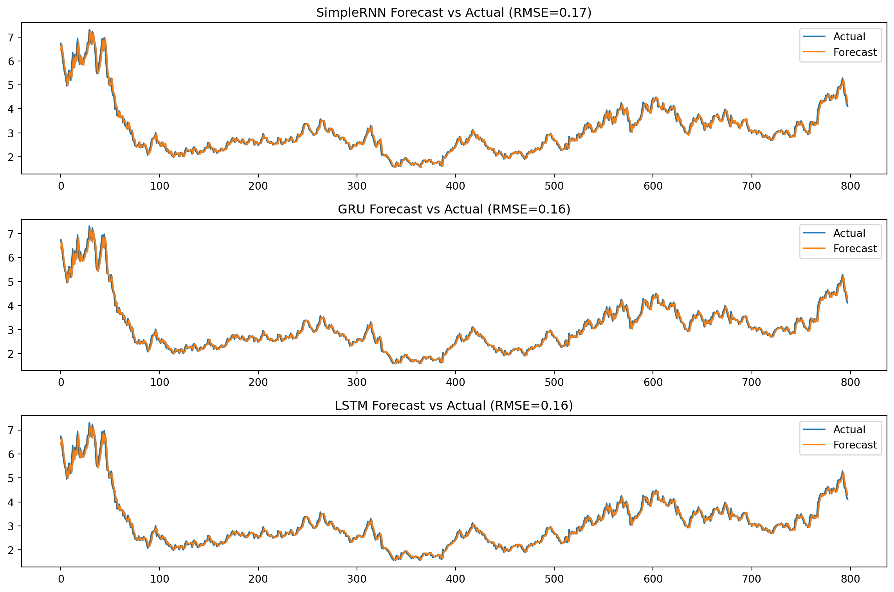

<!DOCTYPE html>
<html xmlns="http://www.w3.org/1999/xhtml" lang="en" xml:lang="en"><head>

<meta charset="utf-8">
<meta name="generator" content="quarto-1.5.41">

<meta name="viewport" content="width=device-width, initial-scale=1.0, user-scalable=yes">


<title>DSAN 5600 lab0 – Deep Learning for TS</title>
<style>
code{white-space: pre-wrap;}
span.smallcaps{font-variant: small-caps;}
div.columns{display: flex; gap: min(4vw, 1.5em);}
div.column{flex: auto; overflow-x: auto;}
div.hanging-indent{margin-left: 1.5em; text-indent: -1.5em;}
ul.task-list{list-style: none;}
ul.task-list li input[type="checkbox"] {
  width: 0.8em;
  margin: 0 0.8em 0.2em -1em; /* quarto-specific, see https://github.com/quarto-dev/quarto-cli/issues/4556 */ 
  vertical-align: middle;
}
/* CSS for syntax highlighting */
pre > code.sourceCode { white-space: pre; position: relative; }
pre > code.sourceCode > span { line-height: 1.25; }
pre > code.sourceCode > span:empty { height: 1.2em; }
.sourceCode { overflow: visible; }
code.sourceCode > span { color: inherit; text-decoration: inherit; }
div.sourceCode { margin: 1em 0; }
pre.sourceCode { margin: 0; }
@media screen {
div.sourceCode { overflow: auto; }
}
@media print {
pre > code.sourceCode { white-space: pre-wrap; }
pre > code.sourceCode > span { display: inline-block; text-indent: -5em; padding-left: 5em; }
}
pre.numberSource code
  { counter-reset: source-line 0; }
pre.numberSource code > span
  { position: relative; left: -4em; counter-increment: source-line; }
pre.numberSource code > span > a:first-child::before
  { content: counter(source-line);
    position: relative; left: -1em; text-align: right; vertical-align: baseline;
    border: none; display: inline-block;
    -webkit-touch-callout: none; -webkit-user-select: none;
    -khtml-user-select: none; -moz-user-select: none;
    -ms-user-select: none; user-select: none;
    padding: 0 4px; width: 4em;
  }
pre.numberSource { margin-left: 3em;  padding-left: 4px; }
div.sourceCode
  {   }
@media screen {
pre > code.sourceCode > span > a:first-child::before { text-decoration: underline; }
}
</style>


<script src="site_libs/quarto-nav/quarto-nav.js"></script>
<script src="site_libs/quarto-nav/headroom.min.js"></script>
<script src="site_libs/clipboard/clipboard.min.js"></script>
<script src="site_libs/quarto-search/autocomplete.umd.js"></script>
<script src="site_libs/quarto-search/fuse.min.js"></script>
<script src="site_libs/quarto-search/quarto-search.js"></script>
<meta name="quarto:offset" content="./">
<script src="site_libs/quarto-html/quarto.js"></script>
<script src="site_libs/quarto-html/popper.min.js"></script>
<script src="site_libs/quarto-html/tippy.umd.min.js"></script>
<script src="site_libs/quarto-html/anchor.min.js"></script>
<link href="site_libs/quarto-html/tippy.css" rel="stylesheet">
<link href="site_libs/quarto-html/quarto-syntax-highlighting.css" rel="stylesheet" id="quarto-text-highlighting-styles">
<script src="site_libs/bootstrap/bootstrap.min.js"></script>
<link href="site_libs/bootstrap/bootstrap-icons.css" rel="stylesheet">
<link href="site_libs/bootstrap/bootstrap.min.css" rel="stylesheet" id="quarto-bootstrap" data-mode="light">
<script id="quarto-search-options" type="application/json">{
  "location": "navbar",
  "copy-button": false,
  "collapse-after": 3,
  "panel-placement": "end",
  "type": "overlay",
  "limit": 50,
  "keyboard-shortcut": [
    "f",
    "/",
    "s"
  ],
  "show-item-context": false,
  "language": {
    "search-no-results-text": "No results",
    "search-matching-documents-text": "matching documents",
    "search-copy-link-title": "Copy link to search",
    "search-hide-matches-text": "Hide additional matches",
    "search-more-match-text": "more match in this document",
    "search-more-matches-text": "more matches in this document",
    "search-clear-button-title": "Clear",
    "search-text-placeholder": "",
    "search-detached-cancel-button-title": "Cancel",
    "search-submit-button-title": "Submit",
    "search-label": "Search"
  }
}</script>


</head>

<body class="nav-fixed">

<div id="quarto-search-results"></div>
  <header id="quarto-header" class="headroom fixed-top">
    <nav class="navbar navbar-expand-lg " data-bs-theme="dark">
      <div class="navbar-container container-fluid">
      <div class="navbar-brand-container mx-auto">
    <a class="navbar-brand" href="./index.html">
    <span class="navbar-title">DSAN 5600 lab0</span>
    </a>
  </div>
            <div id="quarto-search" class="" title="Search"></div>
          <button class="navbar-toggler" type="button" data-bs-toggle="collapse" data-bs-target="#navbarCollapse" aria-controls="navbarCollapse" role="menu" aria-expanded="false" aria-label="Toggle navigation" onclick="if (window.quartoToggleHeadroom) { window.quartoToggleHeadroom(); }">
  <span class="navbar-toggler-icon"></span>
</button>
          <div class="collapse navbar-collapse" id="navbarCollapse">
            <ul class="navbar-nav navbar-nav-scroll me-auto">
  <li class="nav-item">
    <a class="nav-link" href="./index.html"> 
<span class="menu-text">Home</span></a>
  </li>  
  <li class="nav-item">
    <a class="nav-link" href="./aboutme.qmd"> 
<span class="menu-text">About Me</span></a>
  </li>  
  <li class="nav-item">
    <a class="nav-link" href="./introduction.html"> 
<span class="menu-text">Introduction</span></a>
  </li>  
  <li class="nav-item">
    <a class="nav-link" href="./ds.html"> 
<span class="menu-text">Data Sources</span></a>
  </li>  
  <li class="nav-item">
    <a class="nav-link" href="./dv.html"> 
<span class="menu-text">Data Visualization</span></a>
  </li>  
  <li class="nav-item">
    <a class="nav-link" href="./eda.html"> 
<span class="menu-text">Exploratory Data Analysis</span></a>
  </li>  
  <li class="nav-item">
    <a class="nav-link" href="./utsm.html"> 
<span class="menu-text">Univariate TS Models (ARIMA/SARIMA)</span></a>
  </li>  
  <li class="nav-item">
    <a class="nav-link" href="./mtsm.html"> 
<span class="menu-text">Multivariate TS Models (ARIMAX/SARIMAX/VAR)</span></a>
  </li>  
  <li class="nav-item">
    <a class="nav-link" href="./ftsm.html"> 
<span class="menu-text">Financial Time Series Models (ARCH/GARCH)</span></a>
  </li>  
  <li class="nav-item">
    <a class="nav-link active" href="./dp.html" aria-current="page"> 
<span class="menu-text">Deep Learning for TS</span></a>
  </li>  
  <li class="nav-item">
    <a class="nav-link" href="./other.html"> 
<span class="menu-text">Other: Interrupted TS/ARFIMA/ Spectral Analysis</span></a>
  </li>  
  <li class="nav-item">
    <a class="nav-link" href="./conclusion.html"> 
<span class="menu-text">Conclusion</span></a>
  </li>  
</ul>
          </div> <!-- /navcollapse -->
            <div class="quarto-navbar-tools">
</div>
      </div> <!-- /container-fluid -->
    </nav>
</header>
<!-- content -->
<div id="quarto-content" class="quarto-container page-columns page-rows-contents page-layout-article page-navbar">
<!-- sidebar -->
<!-- margin-sidebar -->
    <div id="quarto-margin-sidebar" class="sidebar margin-sidebar">
        <nav id="TOC" role="doc-toc" class="toc-active">
    <h2 id="toc-title">On this page</h2>
   
  <ul>
  <li><a href="#part-1" id="toc-part-1" class="nav-link active" data-scroll-target="#part-1">Part 1</a>
  <ul class="collapse">
  <li><a href="#relative-performance" id="toc-relative-performance" class="nav-link" data-scroll-target="#relative-performance">Relative Performance</a></li>
  <li><a href="#validity-of-regularization" id="toc-validity-of-regularization" class="nav-link" data-scroll-target="#validity-of-regularization">Validity of regularization</a></li>
  <li><a href="#forecast-horizon" id="toc-forecast-horizon" class="nav-link" data-scroll-target="#forecast-horizon">Forecast Horizon</a></li>
  <li><a href="#comparison-with-traditional-models" id="toc-comparison-with-traditional-models" class="nav-link" data-scroll-target="#comparison-with-traditional-models">Comparison with Traditional Models</a></li>
  </ul></li>
  <li><a href="#part-2" id="toc-part-2" class="nav-link" data-scroll-target="#part-2">Part 2</a></li>
  <li><a href="#part-3" id="toc-part-3" class="nav-link" data-scroll-target="#part-3">Part 3</a></li>
  </ul>
</nav>
    </div>
<!-- main -->
<main class="content" id="quarto-document-content">

<header id="title-block-header" class="quarto-title-block default">
<div class="quarto-title">
<h1 class="title">Deep Learning for TS</h1>
</div>


<div class="quarto-title-meta">

    
  
    
  </div>
  


</header>


<section id="part-1" class="level1">
<h1>Part 1</h1>
<div id="e648f218" class="cell" data-execution_count="1">
<details class="code-fold">
<summary>Code</summary>
<div class="sourceCode cell-code" id="cb1"><pre class="sourceCode python code-with-copy"><code class="sourceCode python"><span id="cb1-1"><a href="#cb1-1" aria-hidden="true" tabindex="-1"></a><span class="im">import</span> yfinance <span class="im">as</span> yf</span>
<span id="cb1-2"><a href="#cb1-2" aria-hidden="true" tabindex="-1"></a><span class="im">import</span> pandas <span class="im">as</span> pd</span>
<span id="cb1-3"><a href="#cb1-3" aria-hidden="true" tabindex="-1"></a><span class="im">import</span> numpy <span class="im">as</span> np</span>
<span id="cb1-4"><a href="#cb1-4" aria-hidden="true" tabindex="-1"></a><span class="im">from</span> sklearn.preprocessing <span class="im">import</span> MinMaxScaler</span>
<span id="cb1-5"><a href="#cb1-5" aria-hidden="true" tabindex="-1"></a><span class="im">from</span> tensorflow.keras.models <span class="im">import</span> Sequential</span>
<span id="cb1-6"><a href="#cb1-6" aria-hidden="true" tabindex="-1"></a><span class="im">from</span> tensorflow.keras.layers <span class="im">import</span> SimpleRNN, GRU, LSTM, Dense, Dropout</span>
<span id="cb1-7"><a href="#cb1-7" aria-hidden="true" tabindex="-1"></a><span class="im">from</span> tensorflow.keras.callbacks <span class="im">import</span> EarlyStopping</span>
<span id="cb1-8"><a href="#cb1-8" aria-hidden="true" tabindex="-1"></a><span class="im">from</span> sklearn.metrics <span class="im">import</span> mean_squared_error</span>
<span id="cb1-9"><a href="#cb1-9" aria-hidden="true" tabindex="-1"></a><span class="im">import</span> matplotlib.pyplot <span class="im">as</span> plt</span>
<span id="cb1-10"><a href="#cb1-10" aria-hidden="true" tabindex="-1"></a><span class="im">from</span> statsmodels.tsa.api <span class="im">import</span> VAR</span></code><button title="Copy to Clipboard" class="code-copy-button"><i class="bi"></i></button></pre></div>
</details>
</div>
<div id="fcd2786e" class="cell" data-execution_count="2">
<details class="code-fold">
<summary>Code</summary>
<div class="sourceCode cell-code" id="cb2"><pre class="sourceCode python code-with-copy"><code class="sourceCode python"><span id="cb2-1"><a href="#cb2-1" aria-hidden="true" tabindex="-1"></a>df <span class="op">=</span> yf.download(<span class="st">"NG=F"</span>, start<span class="op">=</span><span class="st">"2010-01-01"</span>, progress<span class="op">=</span><span class="va">False</span>)</span>
<span id="cb2-2"><a href="#cb2-2" aria-hidden="true" tabindex="-1"></a>df <span class="op">=</span> df[[<span class="st">"Close"</span>]].dropna().rename(columns<span class="op">=</span>{<span class="st">"Close"</span>:<span class="st">"GasPrice"</span>})</span></code><button title="Copy to Clipboard" class="code-copy-button"><i class="bi"></i></button></pre></div>
</details>
<div class="cell-output cell-output-stdout">
<pre><code>YF.download() has changed argument auto_adjust default to True</code></pre>
</div>
</div>
<div id="fbf7c8ef" class="cell" data-execution_count="3">
<details class="code-fold">
<summary>Code</summary>
<div class="sourceCode cell-code" id="cb4"><pre class="sourceCode python code-with-copy"><code class="sourceCode python"><span id="cb4-1"><a href="#cb4-1" aria-hidden="true" tabindex="-1"></a>scaler <span class="op">=</span> MinMaxScaler()</span>
<span id="cb4-2"><a href="#cb4-2" aria-hidden="true" tabindex="-1"></a>df[<span class="st">"Scaled"</span>] <span class="op">=</span> scaler.fit_transform(df[[<span class="st">"GasPrice"</span>]])</span></code><button title="Copy to Clipboard" class="code-copy-button"><i class="bi"></i></button></pre></div>
</details>
</div>
<div id="b7b4ea0f" class="cell" data-execution_count="4">
<details class="code-fold">
<summary>Code</summary>
<div class="sourceCode cell-code" id="cb5"><pre class="sourceCode python code-with-copy"><code class="sourceCode python"><span id="cb5-1"><a href="#cb5-1" aria-hidden="true" tabindex="-1"></a><span class="kw">def</span> create_sequences(series, window_size, horizon<span class="op">=</span><span class="dv">1</span>):</span>
<span id="cb5-2"><a href="#cb5-2" aria-hidden="true" tabindex="-1"></a>    X, y <span class="op">=</span> [], []</span>
<span id="cb5-3"><a href="#cb5-3" aria-hidden="true" tabindex="-1"></a>    <span class="cf">for</span> i <span class="kw">in</span> <span class="bu">range</span>(<span class="bu">len</span>(series) <span class="op">-</span> window_size <span class="op">-</span> horizon <span class="op">+</span> <span class="dv">1</span>):</span>
<span id="cb5-4"><a href="#cb5-4" aria-hidden="true" tabindex="-1"></a>        X.append(series[i : i<span class="op">+</span>window_size])</span>
<span id="cb5-5"><a href="#cb5-5" aria-hidden="true" tabindex="-1"></a>        y.append(series[i<span class="op">+</span>window_size : i<span class="op">+</span>window_size<span class="op">+</span>horizon])</span>
<span id="cb5-6"><a href="#cb5-6" aria-hidden="true" tabindex="-1"></a>    <span class="cf">return</span> np.array(X), np.array(y)</span>
<span id="cb5-7"><a href="#cb5-7" aria-hidden="true" tabindex="-1"></a></span>
<span id="cb5-8"><a href="#cb5-8" aria-hidden="true" tabindex="-1"></a>WINDOW, HORIZON <span class="op">=</span> <span class="dv">24</span>, <span class="dv">1</span></span>
<span id="cb5-9"><a href="#cb5-9" aria-hidden="true" tabindex="-1"></a>X, y <span class="op">=</span> create_sequences(df[<span class="st">"Scaled"</span>].values, WINDOW, HORIZON)</span>
<span id="cb5-10"><a href="#cb5-10" aria-hidden="true" tabindex="-1"></a>X <span class="op">=</span> X.reshape((<span class="op">-</span><span class="dv">1</span>, WINDOW, <span class="dv">1</span>))</span>
<span id="cb5-11"><a href="#cb5-11" aria-hidden="true" tabindex="-1"></a>y <span class="op">=</span> y.reshape((<span class="op">-</span><span class="dv">1</span>, HORIZON))</span></code><button title="Copy to Clipboard" class="code-copy-button"><i class="bi"></i></button></pre></div>
</details>
</div>
<div id="5d692b7a" class="cell" data-execution_count="5">
<details class="code-fold">
<summary>Code</summary>
<div class="sourceCode cell-code" id="cb6"><pre class="sourceCode python code-with-copy"><code class="sourceCode python"><span id="cb6-1"><a href="#cb6-1" aria-hidden="true" tabindex="-1"></a>split <span class="op">=</span> <span class="bu">int</span>(<span class="bu">len</span>(X) <span class="op">*</span> <span class="fl">0.8</span>)</span>
<span id="cb6-2"><a href="#cb6-2" aria-hidden="true" tabindex="-1"></a>X_train, X_val <span class="op">=</span> X[:split], X[split:]</span>
<span id="cb6-3"><a href="#cb6-3" aria-hidden="true" tabindex="-1"></a>y_train, y_val <span class="op">=</span> y[:split], y[split:]</span></code><button title="Copy to Clipboard" class="code-copy-button"><i class="bi"></i></button></pre></div>
</details>
</div>
<div id="54f51a83" class="cell" data-execution_count="6">
<details class="code-fold">
<summary>Code</summary>
<div class="sourceCode cell-code" id="cb7"><pre class="sourceCode python code-with-copy"><code class="sourceCode python"><span id="cb7-1"><a href="#cb7-1" aria-hidden="true" tabindex="-1"></a><span class="kw">def</span> build_model(cell_type):</span>
<span id="cb7-2"><a href="#cb7-2" aria-hidden="true" tabindex="-1"></a>    model <span class="op">=</span> Sequential()</span>
<span id="cb7-3"><a href="#cb7-3" aria-hidden="true" tabindex="-1"></a>    <span class="cf">if</span> cell_type <span class="op">==</span> <span class="st">"SimpleRNN"</span>:</span>
<span id="cb7-4"><a href="#cb7-4" aria-hidden="true" tabindex="-1"></a>        model.add(SimpleRNN(<span class="dv">32</span>, input_shape<span class="op">=</span>(WINDOW, <span class="dv">1</span>)))</span>
<span id="cb7-5"><a href="#cb7-5" aria-hidden="true" tabindex="-1"></a>    <span class="cf">elif</span> cell_type <span class="op">==</span> <span class="st">"GRU"</span>:</span>
<span id="cb7-6"><a href="#cb7-6" aria-hidden="true" tabindex="-1"></a>        model.add(GRU(<span class="dv">32</span>, input_shape<span class="op">=</span>(WINDOW, <span class="dv">1</span>)))</span>
<span id="cb7-7"><a href="#cb7-7" aria-hidden="true" tabindex="-1"></a>    <span class="cf">elif</span> cell_type <span class="op">==</span> <span class="st">"LSTM"</span>:</span>
<span id="cb7-8"><a href="#cb7-8" aria-hidden="true" tabindex="-1"></a>        model.add(LSTM(<span class="dv">32</span>, input_shape<span class="op">=</span>(WINDOW, <span class="dv">1</span>)))</span>
<span id="cb7-9"><a href="#cb7-9" aria-hidden="true" tabindex="-1"></a>    model.add(Dropout(<span class="fl">0.2</span>))</span>
<span id="cb7-10"><a href="#cb7-10" aria-hidden="true" tabindex="-1"></a>    model.add(Dense(HORIZON))</span>
<span id="cb7-11"><a href="#cb7-11" aria-hidden="true" tabindex="-1"></a>    model.<span class="bu">compile</span>(optimizer<span class="op">=</span><span class="st">"adam"</span>, loss<span class="op">=</span><span class="st">"mse"</span>, metrics<span class="op">=</span>[<span class="st">"RootMeanSquaredError"</span>])</span>
<span id="cb7-12"><a href="#cb7-12" aria-hidden="true" tabindex="-1"></a>    <span class="cf">return</span> model</span></code><button title="Copy to Clipboard" class="code-copy-button"><i class="bi"></i></button></pre></div>
</details>
</div>
<div id="89dfe04e" class="cell" data-execution_count="7">
<details class="code-fold">
<summary>Code</summary>
<div class="sourceCode cell-code" id="cb8"><pre class="sourceCode python code-with-copy"><code class="sourceCode python"><span id="cb8-1"><a href="#cb8-1" aria-hidden="true" tabindex="-1"></a>results <span class="op">=</span> {}</span>
<span id="cb8-2"><a href="#cb8-2" aria-hidden="true" tabindex="-1"></a>plt.figure(figsize<span class="op">=</span>(<span class="dv">12</span>, <span class="dv">8</span>))</span>
<span id="cb8-3"><a href="#cb8-3" aria-hidden="true" tabindex="-1"></a></span>
<span id="cb8-4"><a href="#cb8-4" aria-hidden="true" tabindex="-1"></a><span class="cf">for</span> i, cell <span class="kw">in</span> <span class="bu">enumerate</span>([<span class="st">"SimpleRNN"</span>, <span class="st">"GRU"</span>, <span class="st">"LSTM"</span>], <span class="dv">1</span>):</span>
<span id="cb8-5"><a href="#cb8-5" aria-hidden="true" tabindex="-1"></a>    <span class="bu">print</span>(<span class="ss">f"</span><span class="ch">\n</span><span class="ss">Training </span><span class="sc">{</span>cell<span class="sc">}</span><span class="ss"> ..."</span>)</span>
<span id="cb8-6"><a href="#cb8-6" aria-hidden="true" tabindex="-1"></a>    m <span class="op">=</span> build_model(cell)</span>
<span id="cb8-7"><a href="#cb8-7" aria-hidden="true" tabindex="-1"></a>    m.fit(</span>
<span id="cb8-8"><a href="#cb8-8" aria-hidden="true" tabindex="-1"></a>        X_train, y_train,</span>
<span id="cb8-9"><a href="#cb8-9" aria-hidden="true" tabindex="-1"></a>        validation_data<span class="op">=</span>(X_val, y_val),</span>
<span id="cb8-10"><a href="#cb8-10" aria-hidden="true" tabindex="-1"></a>        epochs<span class="op">=</span><span class="dv">100</span>, batch_size<span class="op">=</span><span class="dv">32</span>,</span>
<span id="cb8-11"><a href="#cb8-11" aria-hidden="true" tabindex="-1"></a>        callbacks<span class="op">=</span>[EarlyStopping(monitor<span class="op">=</span><span class="st">"val_loss"</span>, patience<span class="op">=</span><span class="dv">10</span>, restore_best_weights<span class="op">=</span><span class="va">True</span>)],</span>
<span id="cb8-12"><a href="#cb8-12" aria-hidden="true" tabindex="-1"></a>        verbose<span class="op">=</span><span class="dv">1</span></span>
<span id="cb8-13"><a href="#cb8-13" aria-hidden="true" tabindex="-1"></a>    )</span>
<span id="cb8-14"><a href="#cb8-14" aria-hidden="true" tabindex="-1"></a>    </span>
<span id="cb8-15"><a href="#cb8-15" aria-hidden="true" tabindex="-1"></a>    y_pred_scaled <span class="op">=</span> m.predict(X_val)</span>
<span id="cb8-16"><a href="#cb8-16" aria-hidden="true" tabindex="-1"></a>    y_true <span class="op">=</span> scaler.inverse_transform(y_val)</span>
<span id="cb8-17"><a href="#cb8-17" aria-hidden="true" tabindex="-1"></a>    y_pred <span class="op">=</span> scaler.inverse_transform(y_pred_scaled)</span>
<span id="cb8-18"><a href="#cb8-18" aria-hidden="true" tabindex="-1"></a>    rmse <span class="op">=</span> np.sqrt(mean_squared_error(y_true, y_pred))</span>
<span id="cb8-19"><a href="#cb8-19" aria-hidden="true" tabindex="-1"></a>    results[cell] <span class="op">=</span> rmse</span>
<span id="cb8-20"><a href="#cb8-20" aria-hidden="true" tabindex="-1"></a>    </span>
<span id="cb8-21"><a href="#cb8-21" aria-hidden="true" tabindex="-1"></a>    plt.subplot(<span class="dv">3</span>, <span class="dv">1</span>, i)</span>
<span id="cb8-22"><a href="#cb8-22" aria-hidden="true" tabindex="-1"></a>    plt.plot(y_true.flatten(), label<span class="op">=</span><span class="st">"Actual"</span>)</span>
<span id="cb8-23"><a href="#cb8-23" aria-hidden="true" tabindex="-1"></a>    plt.plot(y_pred.flatten(), label<span class="op">=</span><span class="st">"Forecast"</span>)</span>
<span id="cb8-24"><a href="#cb8-24" aria-hidden="true" tabindex="-1"></a>    plt.title(<span class="ss">f"</span><span class="sc">{</span>cell<span class="sc">}</span><span class="ss"> Forecast vs Actual (RMSE=</span><span class="sc">{</span>rmse<span class="sc">:.2f}</span><span class="ss">)"</span>)</span>
<span id="cb8-25"><a href="#cb8-25" aria-hidden="true" tabindex="-1"></a>    plt.legend()</span>
<span id="cb8-26"><a href="#cb8-26" aria-hidden="true" tabindex="-1"></a>plt.tight_layout()</span>
<span id="cb8-27"><a href="#cb8-27" aria-hidden="true" tabindex="-1"></a>plt.show()</span></code><button title="Copy to Clipboard" class="code-copy-button"><i class="bi"></i></button></pre></div>
</details>
<div class="cell-output cell-output-stdout">
<pre><code>
Training SimpleRNN ...
Epoch 1/100</code></pre>
</div>
<div class="cell-output cell-output-stdout">
<pre><code>  1/100 ━━━━━━━━━━━━━━━━━━━━ 53s 538ms/step - RootMeanSquaredError: 0.2706 - loss: 0.0732 39/100 ━━━━━━━━━━━━━━━━━━━━ 0s 1ms/step - RootMeanSquaredError: 0.1401 - loss: 0.0207    81/100 ━━━━━━━━━━━━━━━━━━━━ 0s 1ms/step - RootMeanSquaredError: 0.1166 - loss: 0.0147100/100 ━━━━━━━━━━━━━━━━━━━━ 1s 3ms/step - RootMeanSquaredError: 0.1100 - loss: 0.0131 - val_RootMeanSquaredError: 0.0334 - val_loss: 0.0011
Epoch 2/100
  1/100 ━━━━━━━━━━━━━━━━━━━━ 1s 12ms/step - RootMeanSquaredError: 0.0628 - loss: 0.0039 41/100 ━━━━━━━━━━━━━━━━━━━━ 0s 1ms/step - RootMeanSquaredError: 0.0506 - loss: 0.0026  82/100 ━━━━━━━━━━━━━━━━━━━━ 0s 1ms/step - RootMeanSquaredError: 0.0484 - loss: 0.0023100/100 ━━━━━━━━━━━━━━━━━━━━ 0s 2ms/step - RootMeanSquaredError: 0.0477 - loss: 0.0023 - val_RootMeanSquaredError: 0.0248 - val_loss: 6.1464e-04
Epoch 3/100
  1/100 ━━━━━━━━━━━━━━━━━━━━ 1s 11ms/step - RootMeanSquaredError: 0.0263 - loss: 6.9150e-04 41/100 ━━━━━━━━━━━━━━━━━━━━ 0s 1ms/step - RootMeanSquaredError: 0.0369 - loss: 0.0014      81/100 ━━━━━━━━━━━━━━━━━━━━ 0s 1ms/step - RootMeanSquaredError: 0.0371 - loss: 0.0014100/100 ━━━━━━━━━━━━━━━━━━━━ 0s 2ms/step - RootMeanSquaredError: 0.0372 - loss: 0.0014 - val_RootMeanSquaredError: 0.0239 - val_loss: 5.7279e-04
Epoch 4/100
  1/100 ━━━━━━━━━━━━━━━━━━━━ 1s 11ms/step - RootMeanSquaredError: 0.0263 - loss: 6.9134e-04 40/100 ━━━━━━━━━━━━━━━━━━━━ 0s 1ms/step - RootMeanSquaredError: 0.0342 - loss: 0.0012      80/100 ━━━━━━━━━━━━━━━━━━━━ 0s 1ms/step - RootMeanSquaredError: 0.0347 - loss: 0.0012100/100 ━━━━━━━━━━━━━━━━━━━━ 0s 2ms/step - RootMeanSquaredError: 0.0349 - loss: 0.0012 - val_RootMeanSquaredError: 0.0236 - val_loss: 5.5476e-04
Epoch 5/100
  1/100 ━━━━━━━━━━━━━━━━━━━━ 1s 11ms/step - RootMeanSquaredError: 0.0279 - loss: 7.7821e-04 40/100 ━━━━━━━━━━━━━━━━━━━━ 0s 1ms/step - RootMeanSquaredError: 0.0324 - loss: 0.0011      78/100 ━━━━━━━━━━━━━━━━━━━━ 0s 1ms/step - RootMeanSquaredError: 0.0329 - loss: 0.0011100/100 ━━━━━━━━━━━━━━━━━━━━ 0s 2ms/step - RootMeanSquaredError: 0.0332 - loss: 0.0011 - val_RootMeanSquaredError: 0.0227 - val_loss: 5.1429e-04
Epoch 6/100
  1/100 ━━━━━━━━━━━━━━━━━━━━ 1s 11ms/step - RootMeanSquaredError: 0.0291 - loss: 8.4836e-04 40/100 ━━━━━━━━━━━━━━━━━━━━ 0s 1ms/step - RootMeanSquaredError: 0.0342 - loss: 0.0012      80/100 ━━━━━━━━━━━━━━━━━━━━ 0s 1ms/step - RootMeanSquaredError: 0.0337 - loss: 0.0011100/100 ━━━━━━━━━━━━━━━━━━━━ 0s 2ms/step - RootMeanSquaredError: 0.0335 - loss: 0.0011 - val_RootMeanSquaredError: 0.0213 - val_loss: 4.5533e-04
Epoch 7/100
  1/100 ━━━━━━━━━━━━━━━━━━━━ 1s 11ms/step - RootMeanSquaredError: 0.0207 - loss: 4.2995e-04 41/100 ━━━━━━━━━━━━━━━━━━━━ 0s 1ms/step - RootMeanSquaredError: 0.0335 - loss: 0.0011      81/100 ━━━━━━━━━━━━━━━━━━━━ 0s 1ms/step - RootMeanSquaredError: 0.0341 - loss: 0.0012100/100 ━━━━━━━━━━━━━━━━━━━━ 0s 2ms/step - RootMeanSquaredError: 0.0341 - loss: 0.0012 - val_RootMeanSquaredError: 0.0225 - val_loss: 5.0771e-04
Epoch 8/100
  1/100 ━━━━━━━━━━━━━━━━━━━━ 1s 11ms/step - RootMeanSquaredError: 0.0223 - loss: 4.9655e-04 41/100 ━━━━━━━━━━━━━━━━━━━━ 0s 1ms/step - RootMeanSquaredError: 0.0288 - loss: 8.2993e-04  81/100 ━━━━━━━━━━━━━━━━━━━━ 0s 1ms/step - RootMeanSquaredError: 0.0295 - loss: 8.7386e-04100/100 ━━━━━━━━━━━━━━━━━━━━ 0s 2ms/step - RootMeanSquaredError: 0.0297 - loss: 8.8541e-04 - val_RootMeanSquaredError: 0.0212 - val_loss: 4.4853e-04
Epoch 9/100
  1/100 ━━━━━━━━━━━━━━━━━━━━ 1s 11ms/step - RootMeanSquaredError: 0.0272 - loss: 7.4211e-04 41/100 ━━━━━━━━━━━━━━━━━━━━ 0s 1ms/step - RootMeanSquaredError: 0.0318 - loss: 0.0010      82/100 ━━━━━━━━━━━━━━━━━━━━ 0s 1ms/step - RootMeanSquaredError: 0.0326 - loss: 0.0011100/100 ━━━━━━━━━━━━━━━━━━━━ 0s 2ms/step - RootMeanSquaredError: 0.0326 - loss: 0.0011 - val_RootMeanSquaredError: 0.0208 - val_loss: 4.3309e-04
Epoch 10/100
  1/100 ━━━━━━━━━━━━━━━━━━━━ 1s 11ms/step - RootMeanSquaredError: 0.0294 - loss: 8.6407e-04 42/100 ━━━━━━━━━━━━━━━━━━━━ 0s 1ms/step - RootMeanSquaredError: 0.0293 - loss: 8.6104e-04  82/100 ━━━━━━━━━━━━━━━━━━━━ 0s 1ms/step - RootMeanSquaredError: 0.0295 - loss: 8.7125e-04100/100 ━━━━━━━━━━━━━━━━━━━━ 0s 2ms/step - RootMeanSquaredError: 0.0296 - loss: 8.7821e-04 - val_RootMeanSquaredError: 0.0210 - val_loss: 4.4064e-04
Epoch 11/100
  1/100 ━━━━━━━━━━━━━━━━━━━━ 1s 11ms/step - RootMeanSquaredError: 0.0194 - loss: 3.7455e-04 42/100 ━━━━━━━━━━━━━━━━━━━━ 0s 1ms/step - RootMeanSquaredError: 0.0268 - loss: 7.2384e-04  83/100 ━━━━━━━━━━━━━━━━━━━━ 0s 1ms/step - RootMeanSquaredError: 0.0278 - loss: 7.7327e-04100/100 ━━━━━━━━━━━━━━━━━━━━ 0s 2ms/step - RootMeanSquaredError: 0.0280 - loss: 7.8666e-04 - val_RootMeanSquaredError: 0.0205 - val_loss: 4.1975e-04
Epoch 12/100
  1/100 ━━━━━━━━━━━━━━━━━━━━ 1s 10ms/step - RootMeanSquaredError: 0.0313 - loss: 9.8026e-04 41/100 ━━━━━━━━━━━━━━━━━━━━ 0s 1ms/step - RootMeanSquaredError: 0.0318 - loss: 0.0010      82/100 ━━━━━━━━━━━━━━━━━━━━ 0s 1ms/step - RootMeanSquaredError: 0.0305 - loss: 9.3696e-04100/100 ━━━━━━━━━━━━━━━━━━━━ 0s 2ms/step - RootMeanSquaredError: 0.0303 - loss: 9.2107e-04 - val_RootMeanSquaredError: 0.0205 - val_loss: 4.1962e-04
Epoch 13/100
  1/100 ━━━━━━━━━━━━━━━━━━━━ 1s 11ms/step - RootMeanSquaredError: 0.0210 - loss: 4.4131e-04 41/100 ━━━━━━━━━━━━━━━━━━━━ 0s 1ms/step - RootMeanSquaredError: 0.0262 - loss: 6.8968e-04  81/100 ━━━━━━━━━━━━━━━━━━━━ 0s 1ms/step - RootMeanSquaredError: 0.0266 - loss: 7.0870e-04100/100 ━━━━━━━━━━━━━━━━━━━━ 0s 2ms/step - RootMeanSquaredError: 0.0268 - loss: 7.2184e-04 - val_RootMeanSquaredError: 0.0208 - val_loss: 4.3372e-04
Epoch 14/100
  1/100 ━━━━━━━━━━━━━━━━━━━━ 1s 11ms/step - RootMeanSquaredError: 0.0287 - loss: 8.2423e-04 41/100 ━━━━━━━━━━━━━━━━━━━━ 0s 1ms/step - RootMeanSquaredError: 0.0267 - loss: 7.1636e-04  82/100 ━━━━━━━━━━━━━━━━━━━━ 0s 1ms/step - RootMeanSquaredError: 0.0272 - loss: 7.4185e-04100/100 ━━━━━━━━━━━━━━━━━━━━ 0s 2ms/step - RootMeanSquaredError: 0.0272 - loss: 7.4413e-04 - val_RootMeanSquaredError: 0.0245 - val_loss: 5.9965e-04
Epoch 15/100
  1/100 ━━━━━━━━━━━━━━━━━━━━ 1s 10ms/step - RootMeanSquaredError: 0.0399 - loss: 0.0016 41/100 ━━━━━━━━━━━━━━━━━━━━ 0s 1ms/step - RootMeanSquaredError: 0.0279 - loss: 7.8641e-04 81/100 ━━━━━━━━━━━━━━━━━━━━ 0s 1ms/step - RootMeanSquaredError: 0.0278 - loss: 7.7640e-04100/100 ━━━━━━━━━━━━━━━━━━━━ 0s 2ms/step - RootMeanSquaredError: 0.0277 - loss: 7.7233e-04 - val_RootMeanSquaredError: 0.0204 - val_loss: 4.1706e-04
Epoch 16/100
  1/100 ━━━━━━━━━━━━━━━━━━━━ 1s 11ms/step - RootMeanSquaredError: 0.0203 - loss: 4.1144e-04 41/100 ━━━━━━━━━━━━━━━━━━━━ 0s 1ms/step - RootMeanSquaredError: 0.0244 - loss: 5.9577e-04  81/100 ━━━━━━━━━━━━━━━━━━━━ 0s 1ms/step - RootMeanSquaredError: 0.0251 - loss: 6.2888e-04100/100 ━━━━━━━━━━━━━━━━━━━━ 0s 2ms/step - RootMeanSquaredError: 0.0252 - loss: 6.3479e-04 - val_RootMeanSquaredError: 0.0203 - val_loss: 4.1265e-04
Epoch 17/100
  1/100 ━━━━━━━━━━━━━━━━━━━━ 1s 11ms/step - RootMeanSquaredError: 0.0207 - loss: 4.2984e-04 41/100 ━━━━━━━━━━━━━━━━━━━━ 0s 1ms/step - RootMeanSquaredError: 0.0261 - loss: 6.8473e-04  82/100 ━━━━━━━━━━━━━━━━━━━━ 0s 1ms/step - RootMeanSquaredError: 0.0254 - loss: 6.4949e-04100/100 ━━━━━━━━━━━━━━━━━━━━ 0s 2ms/step - RootMeanSquaredError: 0.0253 - loss: 6.4223e-04 - val_RootMeanSquaredError: 0.0204 - val_loss: 4.1752e-04
Epoch 18/100
  1/100 ━━━━━━━━━━━━━━━━━━━━ 1s 11ms/step - RootMeanSquaredError: 0.0241 - loss: 5.7908e-04 42/100 ━━━━━━━━━━━━━━━━━━━━ 0s 1ms/step - RootMeanSquaredError: 0.0274 - loss: 7.5124e-04  83/100 ━━━━━━━━━━━━━━━━━━━━ 0s 1ms/step - RootMeanSquaredError: 0.0270 - loss: 7.2838e-04100/100 ━━━━━━━━━━━━━━━━━━━━ 0s 2ms/step - RootMeanSquaredError: 0.0268 - loss: 7.1769e-04 - val_RootMeanSquaredError: 0.0202 - val_loss: 4.0890e-04
Epoch 19/100
  1/100 ━━━━━━━━━━━━━━━━━━━━ 1s 11ms/step - RootMeanSquaredError: 0.0297 - loss: 8.8172e-04 41/100 ━━━━━━━━━━━━━━━━━━━━ 0s 1ms/step - RootMeanSquaredError: 0.0237 - loss: 5.6276e-04  82/100 ━━━━━━━━━━━━━━━━━━━━ 0s 1ms/step - RootMeanSquaredError: 0.0244 - loss: 5.9536e-04100/100 ━━━━━━━━━━━━━━━━━━━━ 0s 2ms/step - RootMeanSquaredError: 0.0247 - loss: 6.1022e-04 - val_RootMeanSquaredError: 0.0204 - val_loss: 4.1590e-04
Epoch 20/100
  1/100 ━━━━━━━━━━━━━━━━━━━━ 1s 11ms/step - RootMeanSquaredError: 0.0295 - loss: 8.7243e-04 42/100 ━━━━━━━━━━━━━━━━━━━━ 0s 1ms/step - RootMeanSquaredError: 0.0273 - loss: 7.5076e-04  83/100 ━━━━━━━━━━━━━━━━━━━━ 0s 1ms/step - RootMeanSquaredError: 0.0268 - loss: 7.2143e-04100/100 ━━━━━━━━━━━━━━━━━━━━ 0s 2ms/step - RootMeanSquaredError: 0.0266 - loss: 7.0835e-04 - val_RootMeanSquaredError: 0.0204 - val_loss: 4.1478e-04
Epoch 21/100
  1/100 ━━━━━━━━━━━━━━━━━━━━ 1s 11ms/step - RootMeanSquaredError: 0.0251 - loss: 6.2981e-04 39/100 ━━━━━━━━━━━━━━━━━━━━ 0s 1ms/step - RootMeanSquaredError: 0.0235 - loss: 5.5209e-04  80/100 ━━━━━━━━━━━━━━━━━━━━ 0s 1ms/step - RootMeanSquaredError: 0.0245 - loss: 6.0141e-04100/100 ━━━━━━━━━━━━━━━━━━━━ 0s 2ms/step - RootMeanSquaredError: 0.0248 - loss: 6.1636e-04 - val_RootMeanSquaredError: 0.0206 - val_loss: 4.2499e-04
Epoch 22/100
  1/100 ━━━━━━━━━━━━━━━━━━━━ 1s 11ms/step - RootMeanSquaredError: 0.0231 - loss: 5.3308e-04 42/100 ━━━━━━━━━━━━━━━━━━━━ 0s 1ms/step - RootMeanSquaredError: 0.0250 - loss: 6.2546e-04  83/100 ━━━━━━━━━━━━━━━━━━━━ 0s 1ms/step - RootMeanSquaredError: 0.0257 - loss: 6.6188e-04100/100 ━━━━━━━━━━━━━━━━━━━━ 0s 2ms/step - RootMeanSquaredError: 0.0256 - loss: 6.5621e-04 - val_RootMeanSquaredError: 0.0220 - val_loss: 4.8215e-04
Epoch 23/100
  1/100 ━━━━━━━━━━━━━━━━━━━━ 1s 11ms/step - RootMeanSquaredError: 0.0323 - loss: 0.0010 41/100 ━━━━━━━━━━━━━━━━━━━━ 0s 1ms/step - RootMeanSquaredError: 0.0266 - loss: 7.0915e-04 82/100 ━━━━━━━━━━━━━━━━━━━━ 0s 1ms/step - RootMeanSquaredError: 0.0255 - loss: 6.5019e-04100/100 ━━━━━━━━━━━━━━━━━━━━ 0s 2ms/step - RootMeanSquaredError: 0.0252 - loss: 6.3747e-04 - val_RootMeanSquaredError: 0.0211 - val_loss: 4.4570e-04
Epoch 24/100
  1/100 ━━━━━━━━━━━━━━━━━━━━ 1s 11ms/step - RootMeanSquaredError: 0.0279 - loss: 7.7597e-04 41/100 ━━━━━━━━━━━━━━━━━━━━ 0s 1ms/step - RootMeanSquaredError: 0.0261 - loss: 6.8378e-04  81/100 ━━━━━━━━━━━━━━━━━━━━ 0s 1ms/step - RootMeanSquaredError: 0.0256 - loss: 6.5602e-04100/100 ━━━━━━━━━━━━━━━━━━━━ 0s 2ms/step - RootMeanSquaredError: 0.0254 - loss: 6.4730e-04 - val_RootMeanSquaredError: 0.0218 - val_loss: 4.7388e-04
Epoch 25/100
  1/100 ━━━━━━━━━━━━━━━━━━━━ 1s 10ms/step - RootMeanSquaredError: 0.0311 - loss: 9.6942e-04 41/100 ━━━━━━━━━━━━━━━━━━━━ 0s 1ms/step - RootMeanSquaredError: 0.0247 - loss: 6.1925e-04  81/100 ━━━━━━━━━━━━━━━━━━━━ 0s 1ms/step - RootMeanSquaredError: 0.0247 - loss: 6.1384e-04100/100 ━━━━━━━━━━━━━━━━━━━━ 0s 2ms/step - RootMeanSquaredError: 0.0245 - loss: 6.0449e-04 - val_RootMeanSquaredError: 0.0210 - val_loss: 4.4275e-04
Epoch 26/100
  1/100 ━━━━━━━━━━━━━━━━━━━━ 1s 11ms/step - RootMeanSquaredError: 0.0195 - loss: 3.8105e-04 41/100 ━━━━━━━━━━━━━━━━━━━━ 0s 1ms/step - RootMeanSquaredError: 0.0219 - loss: 4.8336e-04  82/100 ━━━━━━━━━━━━━━━━━━━━ 0s 1ms/step - RootMeanSquaredError: 0.0224 - loss: 5.0394e-04100/100 ━━━━━━━━━━━━━━━━━━━━ 0s 2ms/step - RootMeanSquaredError: 0.0227 - loss: 5.1679e-04 - val_RootMeanSquaredError: 0.0206 - val_loss: 4.2272e-04
Epoch 27/100
  1/100 ━━━━━━━━━━━━━━━━━━━━ 1s 11ms/step - RootMeanSquaredError: 0.0191 - loss: 3.6521e-04 41/100 ━━━━━━━━━━━━━━━━━━━━ 0s 1ms/step - RootMeanSquaredError: 0.0230 - loss: 5.3019e-04  82/100 ━━━━━━━━━━━━━━━━━━━━ 0s 1ms/step - RootMeanSquaredError: 0.0232 - loss: 5.3749e-04100/100 ━━━━━━━━━━━━━━━━━━━━ 0s 2ms/step - RootMeanSquaredError: 0.0233 - loss: 5.4156e-04 - val_RootMeanSquaredError: 0.0212 - val_loss: 4.4919e-04
Epoch 28/100
  1/100 ━━━━━━━━━━━━━━━━━━━━ 1s 11ms/step - RootMeanSquaredError: 0.0299 - loss: 8.9180e-04 41/100 ━━━━━━━━━━━━━━━━━━━━ 0s 1ms/step - RootMeanSquaredError: 0.0230 - loss: 5.3349e-04  82/100 ━━━━━━━━━━━━━━━━━━━━ 0s 1ms/step - RootMeanSquaredError: 0.0226 - loss: 5.1254e-04100/100 ━━━━━━━━━━━━━━━━━━━━ 0s 2ms/step - RootMeanSquaredError: 0.0227 - loss: 5.1662e-04 - val_RootMeanSquaredError: 0.0202 - val_loss: 4.0791e-04
Epoch 29/100
  1/100 ━━━━━━━━━━━━━━━━━━━━ 1s 11ms/step - RootMeanSquaredError: 0.0277 - loss: 7.6576e-04 41/100 ━━━━━━━━━━━━━━━━━━━━ 0s 1ms/step - RootMeanSquaredError: 0.0257 - loss: 6.6405e-04  81/100 ━━━━━━━━━━━━━━━━━━━━ 0s 1ms/step - RootMeanSquaredError: 0.0259 - loss: 6.6961e-04100/100 ━━━━━━━━━━━━━━━━━━━━ 0s 2ms/step - RootMeanSquaredError: 0.0257 - loss: 6.6241e-04 - val_RootMeanSquaredError: 0.0211 - val_loss: 4.4630e-04
Epoch 30/100
  1/100 ━━━━━━━━━━━━━━━━━━━━ 1s 11ms/step - RootMeanSquaredError: 0.0292 - loss: 8.5018e-04 41/100 ━━━━━━━━━━━━━━━━━━━━ 0s 1ms/step - RootMeanSquaredError: 0.0243 - loss: 5.9412e-04  82/100 ━━━━━━━━━━━━━━━━━━━━ 0s 1ms/step - RootMeanSquaredError: 0.0238 - loss: 5.6848e-04100/100 ━━━━━━━━━━━━━━━━━━━━ 0s 2ms/step - RootMeanSquaredError: 0.0238 - loss: 5.6966e-04 - val_RootMeanSquaredError: 0.0209 - val_loss: 4.3768e-04
Epoch 31/100
  1/100 ━━━━━━━━━━━━━━━━━━━━ 1s 11ms/step - RootMeanSquaredError: 0.0133 - loss: 1.7771e-04 41/100 ━━━━━━━━━━━━━━━━━━━━ 0s 1ms/step - RootMeanSquaredError: 0.0228 - loss: 5.2687e-04  81/100 ━━━━━━━━━━━━━━━━━━━━ 0s 1ms/step - RootMeanSquaredError: 0.0230 - loss: 5.3454e-04100/100 ━━━━━━━━━━━━━━━━━━━━ 0s 2ms/step - RootMeanSquaredError: 0.0231 - loss: 5.3669e-04 - val_RootMeanSquaredError: 0.0212 - val_loss: 4.4920e-04
Epoch 32/100
  1/100 ━━━━━━━━━━━━━━━━━━━━ 1s 11ms/step - RootMeanSquaredError: 0.0171 - loss: 2.9199e-04 41/100 ━━━━━━━━━━━━━━━━━━━━ 0s 1ms/step - RootMeanSquaredError: 0.0221 - loss: 4.9585e-04  81/100 ━━━━━━━━━━━━━━━━━━━━ 0s 1ms/step - RootMeanSquaredError: 0.0227 - loss: 5.1715e-04100/100 ━━━━━━━━━━━━━━━━━━━━ 0s 2ms/step - RootMeanSquaredError: 0.0228 - loss: 5.2343e-04 - val_RootMeanSquaredError: 0.0204 - val_loss: 4.1459e-04
Epoch 33/100
  1/100 ━━━━━━━━━━━━━━━━━━━━ 1s 11ms/step - RootMeanSquaredError: 0.0177 - loss: 3.1234e-04 41/100 ━━━━━━━━━━━━━━━━━━━━ 0s 1ms/step - RootMeanSquaredError: 0.0239 - loss: 5.7541e-04  81/100 ━━━━━━━━━━━━━━━━━━━━ 0s 1ms/step - RootMeanSquaredError: 0.0232 - loss: 5.4012e-04100/100 ━━━━━━━━━━━━━━━━━━━━ 0s 2ms/step - RootMeanSquaredError: 0.0231 - loss: 5.3670e-04 - val_RootMeanSquaredError: 0.0204 - val_loss: 4.1756e-04
Epoch 34/100
  1/100 ━━━━━━━━━━━━━━━━━━━━ 1s 11ms/step - RootMeanSquaredError: 0.0277 - loss: 7.6685e-04 42/100 ━━━━━━━━━━━━━━━━━━━━ 0s 1ms/step - RootMeanSquaredError: 0.0246 - loss: 6.0709e-04  83/100 ━━━━━━━━━━━━━━━━━━━━ 0s 1ms/step - RootMeanSquaredError: 0.0238 - loss: 5.6798e-04100/100 ━━━━━━━━━━━━━━━━━━━━ 0s 2ms/step - RootMeanSquaredError: 0.0236 - loss: 5.5953e-04 - val_RootMeanSquaredError: 0.0205 - val_loss: 4.1912e-04
Epoch 35/100
  1/100 ━━━━━━━━━━━━━━━━━━━━ 1s 10ms/step - RootMeanSquaredError: 0.0135 - loss: 1.8258e-04 42/100 ━━━━━━━━━━━━━━━━━━━━ 0s 1ms/step - RootMeanSquaredError: 0.0231 - loss: 5.3681e-04  83/100 ━━━━━━━━━━━━━━━━━━━━ 0s 1ms/step - RootMeanSquaredError: 0.0230 - loss: 5.3298e-04100/100 ━━━━━━━━━━━━━━━━━━━━ 0s 2ms/step - RootMeanSquaredError: 0.0231 - loss: 5.3654e-04 - val_RootMeanSquaredError: 0.0205 - val_loss: 4.2123e-04
Epoch 36/100
  1/100 ━━━━━━━━━━━━━━━━━━━━ 1s 10ms/step - RootMeanSquaredError: 0.0134 - loss: 1.7868e-04 42/100 ━━━━━━━━━━━━━━━━━━━━ 0s 1ms/step - RootMeanSquaredError: 0.0226 - loss: 5.1712e-04  83/100 ━━━━━━━━━━━━━━━━━━━━ 0s 1ms/step - RootMeanSquaredError: 0.0239 - loss: 5.7458e-04100/100 ━━━━━━━━━━━━━━━━━━━━ 0s 2ms/step - RootMeanSquaredError: 0.0240 - loss: 5.7960e-04 - val_RootMeanSquaredError: 0.0208 - val_loss: 4.3442e-04
Epoch 37/100
  1/100 ━━━━━━━━━━━━━━━━━━━━ 1s 11ms/step - RootMeanSquaredError: 0.0164 - loss: 2.6831e-04 42/100 ━━━━━━━━━━━━━━━━━━━━ 0s 1ms/step - RootMeanSquaredError: 0.0211 - loss: 4.4479e-04  83/100 ━━━━━━━━━━━━━━━━━━━━ 0s 1ms/step - RootMeanSquaredError: 0.0221 - loss: 4.9066e-04100/100 ━━━━━━━━━━━━━━━━━━━━ 0s 2ms/step - RootMeanSquaredError: 0.0222 - loss: 4.9396e-04 - val_RootMeanSquaredError: 0.0203 - val_loss: 4.1157e-04
Epoch 38/100
  1/100 ━━━━━━━━━━━━━━━━━━━━ 1s 10ms/step - RootMeanSquaredError: 0.0163 - loss: 2.6417e-04 42/100 ━━━━━━━━━━━━━━━━━━━━ 0s 1ms/step - RootMeanSquaredError: 0.0210 - loss: 4.4672e-04  83/100 ━━━━━━━━━━━━━━━━━━━━ 0s 1ms/step - RootMeanSquaredError: 0.0217 - loss: 4.7425e-04100/100 ━━━━━━━━━━━━━━━━━━━━ 0s 2ms/step - RootMeanSquaredError: 0.0219 - loss: 4.8144e-04 - val_RootMeanSquaredError: 0.0207 - val_loss: 4.2880e-04
 1/25 ━━━━━━━━━━━━━━━━━━━━ 1s 59ms/step25/25 ━━━━━━━━━━━━━━━━━━━━ 0s 3ms/step 25/25 ━━━━━━━━━━━━━━━━━━━━ 0s 3ms/step

Training GRU ...
Epoch 1/100</code></pre>
</div>
<div class="cell-output cell-output-stdout">
<pre><code>  1/100 ━━━━━━━━━━━━━━━━━━━━ 1:08 692ms/step - RootMeanSquaredError: 0.2124 - loss: 0.0451 19/100 ━━━━━━━━━━━━━━━━━━━━ 0s 3ms/step - RootMeanSquaredError: 0.1662 - loss: 0.0286     38/100 ━━━━━━━━━━━━━━━━━━━━ 0s 3ms/step - RootMeanSquaredError: 0.1430 - loss: 0.0215 57/100 ━━━━━━━━━━━━━━━━━━━━ 0s 3ms/step - RootMeanSquaredError: 0.1297 - loss: 0.0179 76/100 ━━━━━━━━━━━━━━━━━━━━ 0s 3ms/step - RootMeanSquaredError: 0.1201 - loss: 0.0155 95/100 ━━━━━━━━━━━━━━━━━━━━ 0s 3ms/step - RootMeanSquaredError: 0.1127 - loss: 0.0138100/100 ━━━━━━━━━━━━━━━━━━━━ 1s 4ms/step - RootMeanSquaredError: 0.1108 - loss: 0.0133 - val_RootMeanSquaredError: 0.0251 - val_loss: 6.3186e-04
Epoch 2/100
  1/100 ━━━━━━━━━━━━━━━━━━━━ 1s 16ms/step - RootMeanSquaredError: 0.0528 - loss: 0.0028 16/100 ━━━━━━━━━━━━━━━━━━━━ 0s 3ms/step - RootMeanSquaredError: 0.0410 - loss: 0.0017  34/100 ━━━━━━━━━━━━━━━━━━━━ 0s 3ms/step - RootMeanSquaredError: 0.0413 - loss: 0.0017 52/100 ━━━━━━━━━━━━━━━━━━━━ 0s 3ms/step - RootMeanSquaredError: 0.0417 - loss: 0.0017 69/100 ━━━━━━━━━━━━━━━━━━━━ 0s 3ms/step - RootMeanSquaredError: 0.0417 - loss: 0.0017 86/100 ━━━━━━━━━━━━━━━━━━━━ 0s 3ms/step - RootMeanSquaredError: 0.0417 - loss: 0.0017100/100 ━━━━━━━━━━━━━━━━━━━━ 0s 3ms/step - RootMeanSquaredError: 0.0417 - loss: 0.0017 - val_RootMeanSquaredError: 0.0245 - val_loss: 6.0152e-04
Epoch 3/100
  1/100 ━━━━━━━━━━━━━━━━━━━━ 1s 13ms/step - RootMeanSquaredError: 0.0313 - loss: 9.8211e-04 18/100 ━━━━━━━━━━━━━━━━━━━━ 0s 3ms/step - RootMeanSquaredError: 0.0374 - loss: 0.0014      35/100 ━━━━━━━━━━━━━━━━━━━━ 0s 3ms/step - RootMeanSquaredError: 0.0371 - loss: 0.0014 52/100 ━━━━━━━━━━━━━━━━━━━━ 0s 3ms/step - RootMeanSquaredError: 0.0368 - loss: 0.0014 69/100 ━━━━━━━━━━━━━━━━━━━━ 0s 3ms/step - RootMeanSquaredError: 0.0367 - loss: 0.0013 87/100 ━━━━━━━━━━━━━━━━━━━━ 0s 3ms/step - RootMeanSquaredError: 0.0367 - loss: 0.0013100/100 ━━━━━━━━━━━━━━━━━━━━ 0s 3ms/step - RootMeanSquaredError: 0.0367 - loss: 0.0013 - val_RootMeanSquaredError: 0.0232 - val_loss: 5.3811e-04
Epoch 4/100
  1/100 ━━━━━━━━━━━━━━━━━━━━ 1s 12ms/step - RootMeanSquaredError: 0.0336 - loss: 0.0011 17/100 ━━━━━━━━━━━━━━━━━━━━ 0s 3ms/step - RootMeanSquaredError: 0.0362 - loss: 0.0013  34/100 ━━━━━━━━━━━━━━━━━━━━ 0s 3ms/step - RootMeanSquaredError: 0.0349 - loss: 0.0012 52/100 ━━━━━━━━━━━━━━━━━━━━ 0s 3ms/step - RootMeanSquaredError: 0.0344 - loss: 0.0012 70/100 ━━━━━━━━━━━━━━━━━━━━ 0s 3ms/step - RootMeanSquaredError: 0.0340 - loss: 0.0012 88/100 ━━━━━━━━━━━━━━━━━━━━ 0s 3ms/step - RootMeanSquaredError: 0.0337 - loss: 0.0011100/100 ━━━━━━━━━━━━━━━━━━━━ 0s 4ms/step - RootMeanSquaredError: 0.0336 - loss: 0.0011 - val_RootMeanSquaredError: 0.0232 - val_loss: 5.3934e-04
Epoch 5/100
  1/100 ━━━━━━━━━━━━━━━━━━━━ 1s 12ms/step - RootMeanSquaredError: 0.0336 - loss: 0.0011 18/100 ━━━━━━━━━━━━━━━━━━━━ 0s 3ms/step - RootMeanSquaredError: 0.0320 - loss: 0.0010  36/100 ━━━━━━━━━━━━━━━━━━━━ 0s 3ms/step - RootMeanSquaredError: 0.0324 - loss: 0.0010 54/100 ━━━━━━━━━━━━━━━━━━━━ 0s 3ms/step - RootMeanSquaredError: 0.0323 - loss: 0.0010 70/100 ━━━━━━━━━━━━━━━━━━━━ 0s 3ms/step - RootMeanSquaredError: 0.0323 - loss: 0.0010 87/100 ━━━━━━━━━━━━━━━━━━━━ 0s 3ms/step - RootMeanSquaredError: 0.0324 - loss: 0.0011100/100 ━━━━━━━━━━━━━━━━━━━━ 0s 3ms/step - RootMeanSquaredError: 0.0325 - loss: 0.0011 - val_RootMeanSquaredError: 0.0237 - val_loss: 5.5939e-04
Epoch 6/100
  1/100 ━━━━━━━━━━━━━━━━━━━━ 1s 12ms/step - RootMeanSquaredError: 0.0288 - loss: 8.3029e-04 18/100 ━━━━━━━━━━━━━━━━━━━━ 0s 3ms/step - RootMeanSquaredError: 0.0326 - loss: 0.0011      32/100 ━━━━━━━━━━━━━━━━━━━━ 0s 3ms/step - RootMeanSquaredError: 0.0324 - loss: 0.0011 49/100 ━━━━━━━━━━━━━━━━━━━━ 0s 3ms/step - RootMeanSquaredError: 0.0326 - loss: 0.0011 67/100 ━━━━━━━━━━━━━━━━━━━━ 0s 3ms/step - RootMeanSquaredError: 0.0325 - loss: 0.0011 85/100 ━━━━━━━━━━━━━━━━━━━━ 0s 3ms/step - RootMeanSquaredError: 0.0323 - loss: 0.0010100/100 ━━━━━━━━━━━━━━━━━━━━ 0s 4ms/step - RootMeanSquaredError: 0.0321 - loss: 0.0010 - val_RootMeanSquaredError: 0.0223 - val_loss: 4.9796e-04
Epoch 7/100
  1/100 ━━━━━━━━━━━━━━━━━━━━ 1s 12ms/step - RootMeanSquaredError: 0.0276 - loss: 7.5943e-04 18/100 ━━━━━━━━━━━━━━━━━━━━ 0s 3ms/step - RootMeanSquaredError: 0.0312 - loss: 9.8148e-04  36/100 ━━━━━━━━━━━━━━━━━━━━ 0s 3ms/step - RootMeanSquaredError: 0.0311 - loss: 9.7016e-04 54/100 ━━━━━━━━━━━━━━━━━━━━ 0s 3ms/step - RootMeanSquaredError: 0.0309 - loss: 9.5452e-04 71/100 ━━━━━━━━━━━━━━━━━━━━ 0s 3ms/step - RootMeanSquaredError: 0.0310 - loss: 9.6097e-04 86/100 ━━━━━━━━━━━━━━━━━━━━ 0s 3ms/step - RootMeanSquaredError: 0.0310 - loss: 9.6142e-04100/100 ━━━━━━━━━━━━━━━━━━━━ 0s 3ms/step - RootMeanSquaredError: 0.0311 - loss: 9.6563e-04 - val_RootMeanSquaredError: 0.0217 - val_loss: 4.7071e-04
Epoch 8/100
  1/100 ━━━━━━━━━━━━━━━━━━━━ 1s 12ms/step - RootMeanSquaredError: 0.0314 - loss: 9.8432e-04 18/100 ━━━━━━━━━━━━━━━━━━━━ 0s 3ms/step - RootMeanSquaredError: 0.0290 - loss: 8.4134e-04  35/100 ━━━━━━━━━━━━━━━━━━━━ 0s 3ms/step - RootMeanSquaredError: 0.0287 - loss: 8.2563e-04 53/100 ━━━━━━━━━━━━━━━━━━━━ 0s 3ms/step - RootMeanSquaredError: 0.0284 - loss: 8.0965e-04 71/100 ━━━━━━━━━━━━━━━━━━━━ 0s 3ms/step - RootMeanSquaredError: 0.0286 - loss: 8.1769e-04 88/100 ━━━━━━━━━━━━━━━━━━━━ 0s 3ms/step - RootMeanSquaredError: 0.0286 - loss: 8.1955e-04100/100 ━━━━━━━━━━━━━━━━━━━━ 0s 3ms/step - RootMeanSquaredError: 0.0286 - loss: 8.2055e-04 - val_RootMeanSquaredError: 0.0217 - val_loss: 4.7275e-04
Epoch 9/100
  1/100 ━━━━━━━━━━━━━━━━━━━━ 1s 13ms/step - RootMeanSquaredError: 0.0287 - loss: 8.2510e-04 18/100 ━━━━━━━━━━━━━━━━━━━━ 0s 3ms/step - RootMeanSquaredError: 0.0292 - loss: 8.5080e-04  35/100 ━━━━━━━━━━━━━━━━━━━━ 0s 3ms/step - RootMeanSquaredError: 0.0300 - loss: 9.0417e-04 52/100 ━━━━━━━━━━━━━━━━━━━━ 0s 3ms/step - RootMeanSquaredError: 0.0301 - loss: 9.0701e-04 63/100 ━━━━━━━━━━━━━━━━━━━━ 0s 3ms/step - RootMeanSquaredError: 0.0300 - loss: 9.0191e-04 77/100 ━━━━━━━━━━━━━━━━━━━━ 0s 3ms/step - RootMeanSquaredError: 0.0299 - loss: 8.9515e-04 93/100 ━━━━━━━━━━━━━━━━━━━━ 0s 3ms/step - RootMeanSquaredError: 0.0298 - loss: 8.8911e-04100/100 ━━━━━━━━━━━━━━━━━━━━ 0s 4ms/step - RootMeanSquaredError: 0.0298 - loss: 8.8615e-04 - val_RootMeanSquaredError: 0.0225 - val_loss: 5.0554e-04
Epoch 10/100
  1/100 ━━━━━━━━━━━━━━━━━━━━ 1s 15ms/step - RootMeanSquaredError: 0.0136 - loss: 1.8552e-04 18/100 ━━━━━━━━━━━━━━━━━━━━ 0s 3ms/step - RootMeanSquaredError: 0.0238 - loss: 5.7513e-04  35/100 ━━━━━━━━━━━━━━━━━━━━ 0s 3ms/step - RootMeanSquaredError: 0.0247 - loss: 6.1372e-04 51/100 ━━━━━━━━━━━━━━━━━━━━ 0s 3ms/step - RootMeanSquaredError: 0.0252 - loss: 6.4047e-04 68/100 ━━━━━━━━━━━━━━━━━━━━ 0s 3ms/step - RootMeanSquaredError: 0.0256 - loss: 6.5666e-04 86/100 ━━━━━━━━━━━━━━━━━━━━ 0s 3ms/step - RootMeanSquaredError: 0.0258 - loss: 6.6732e-04100/100 ━━━━━━━━━━━━━━━━━━━━ 0s 3ms/step - RootMeanSquaredError: 0.0260 - loss: 6.7720e-04 - val_RootMeanSquaredError: 0.0231 - val_loss: 5.3548e-04
Epoch 11/100
  1/100 ━━━━━━━━━━━━━━━━━━━━ 1s 12ms/step - RootMeanSquaredError: 0.0363 - loss: 0.0013 16/100 ━━━━━━━━━━━━━━━━━━━━ 0s 3ms/step - RootMeanSquaredError: 0.0293 - loss: 8.6111e-04 33/100 ━━━━━━━━━━━━━━━━━━━━ 0s 3ms/step - RootMeanSquaredError: 0.0288 - loss: 8.3074e-04 51/100 ━━━━━━━━━━━━━━━━━━━━ 0s 3ms/step - RootMeanSquaredError: 0.0282 - loss: 7.9759e-04 69/100 ━━━━━━━━━━━━━━━━━━━━ 0s 3ms/step - RootMeanSquaredError: 0.0279 - loss: 7.7965e-04 86/100 ━━━━━━━━━━━━━━━━━━━━ 0s 3ms/step - RootMeanSquaredError: 0.0279 - loss: 7.7947e-04100/100 ━━━━━━━━━━━━━━━━━━━━ 0s 3ms/step - RootMeanSquaredError: 0.0279 - loss: 7.8127e-04100/100 ━━━━━━━━━━━━━━━━━━━━ 0s 4ms/step - RootMeanSquaredError: 0.0279 - loss: 7.8142e-04 - val_RootMeanSquaredError: 0.0224 - val_loss: 5.0039e-04
Epoch 12/100
  1/100 ━━━━━━━━━━━━━━━━━━━━ 1s 12ms/step - RootMeanSquaredError: 0.0266 - loss: 7.0903e-04 18/100 ━━━━━━━━━━━━━━━━━━━━ 0s 3ms/step - RootMeanSquaredError: 0.0304 - loss: 9.3885e-04  35/100 ━━━━━━━━━━━━━━━━━━━━ 0s 3ms/step - RootMeanSquaredError: 0.0291 - loss: 8.5388e-04 52/100 ━━━━━━━━━━━━━━━━━━━━ 0s 3ms/step - RootMeanSquaredError: 0.0290 - loss: 8.4515e-04 69/100 ━━━━━━━━━━━━━━━━━━━━ 0s 3ms/step - RootMeanSquaredError: 0.0287 - loss: 8.3038e-04 86/100 ━━━━━━━━━━━━━━━━━━━━ 0s 3ms/step - RootMeanSquaredError: 0.0285 - loss: 8.1694e-04100/100 ━━━━━━━━━━━━━━━━━━━━ 0s 3ms/step - RootMeanSquaredError: 0.0283 - loss: 8.0253e-04 - val_RootMeanSquaredError: 0.0210 - val_loss: 4.4134e-04
Epoch 13/100
  1/100 ━━━━━━━━━━━━━━━━━━━━ 1s 12ms/step - RootMeanSquaredError: 0.0318 - loss: 0.0010 17/100 ━━━━━━━━━━━━━━━━━━━━ 0s 3ms/step - RootMeanSquaredError: 0.0254 - loss: 6.5337e-04 34/100 ━━━━━━━━━━━━━━━━━━━━ 0s 3ms/step - RootMeanSquaredError: 0.0258 - loss: 6.6757e-04 52/100 ━━━━━━━━━━━━━━━━━━━━ 0s 3ms/step - RootMeanSquaredError: 0.0267 - loss: 7.1634e-04 70/100 ━━━━━━━━━━━━━━━━━━━━ 0s 3ms/step - RootMeanSquaredError: 0.0273 - loss: 7.4720e-04 87/100 ━━━━━━━━━━━━━━━━━━━━ 0s 3ms/step - RootMeanSquaredError: 0.0274 - loss: 7.5345e-04100/100 ━━━━━━━━━━━━━━━━━━━━ 0s 4ms/step - RootMeanSquaredError: 0.0274 - loss: 7.5454e-04 - val_RootMeanSquaredError: 0.0224 - val_loss: 5.0397e-04
Epoch 14/100
  1/100 ━━━━━━━━━━━━━━━━━━━━ 1s 12ms/step - RootMeanSquaredError: 0.0287 - loss: 8.2392e-04 19/100 ━━━━━━━━━━━━━━━━━━━━ 0s 3ms/step - RootMeanSquaredError: 0.0266 - loss: 7.0782e-04  37/100 ━━━━━━━━━━━━━━━━━━━━ 0s 3ms/step - RootMeanSquaredError: 0.0267 - loss: 7.1261e-04 55/100 ━━━━━━━━━━━━━━━━━━━━ 0s 3ms/step - RootMeanSquaredError: 0.0269 - loss: 7.2348e-04 73/100 ━━━━━━━━━━━━━━━━━━━━ 0s 3ms/step - RootMeanSquaredError: 0.0270 - loss: 7.2983e-04 91/100 ━━━━━━━━━━━━━━━━━━━━ 0s 3ms/step - RootMeanSquaredError: 0.0270 - loss: 7.3122e-04100/100 ━━━━━━━━━━━━━━━━━━━━ 0s 3ms/step - RootMeanSquaredError: 0.0271 - loss: 7.3292e-04 - val_RootMeanSquaredError: 0.0212 - val_loss: 4.4912e-04
Epoch 15/100
  1/100 ━━━━━━━━━━━━━━━━━━━━ 1s 12ms/step - RootMeanSquaredError: 0.0201 - loss: 4.0527e-04 18/100 ━━━━━━━━━━━━━━━━━━━━ 0s 3ms/step - RootMeanSquaredError: 0.0213 - loss: 4.5584e-04  31/100 ━━━━━━━━━━━━━━━━━━━━ 0s 3ms/step - RootMeanSquaredError: 0.0220 - loss: 4.8659e-04 48/100 ━━━━━━━━━━━━━━━━━━━━ 0s 3ms/step - RootMeanSquaredError: 0.0228 - loss: 5.2265e-04 65/100 ━━━━━━━━━━━━━━━━━━━━ 0s 3ms/step - RootMeanSquaredError: 0.0235 - loss: 5.5284e-04 83/100 ━━━━━━━━━━━━━━━━━━━━ 0s 3ms/step - RootMeanSquaredError: 0.0240 - loss: 5.7710e-04100/100 ━━━━━━━━━━━━━━━━━━━━ 0s 3ms/step - RootMeanSquaredError: 0.0243 - loss: 5.9578e-04100/100 ━━━━━━━━━━━━━━━━━━━━ 0s 4ms/step - RootMeanSquaredError: 0.0244 - loss: 5.9664e-04 - val_RootMeanSquaredError: 0.0220 - val_loss: 4.8399e-04
Epoch 16/100
  1/100 ━━━━━━━━━━━━━━━━━━━━ 1s 13ms/step - RootMeanSquaredError: 0.0204 - loss: 4.1567e-04 18/100 ━━━━━━━━━━━━━━━━━━━━ 0s 3ms/step - RootMeanSquaredError: 0.0225 - loss: 5.0595e-04  36/100 ━━━━━━━━━━━━━━━━━━━━ 0s 3ms/step - RootMeanSquaredError: 0.0234 - loss: 5.4695e-04 54/100 ━━━━━━━━━━━━━━━━━━━━ 0s 3ms/step - RootMeanSquaredError: 0.0241 - loss: 5.8131e-04 72/100 ━━━━━━━━━━━━━━━━━━━━ 0s 3ms/step - RootMeanSquaredError: 0.0244 - loss: 5.9601e-04 90/100 ━━━━━━━━━━━━━━━━━━━━ 0s 3ms/step - RootMeanSquaredError: 0.0244 - loss: 5.9561e-04100/100 ━━━━━━━━━━━━━━━━━━━━ 0s 3ms/step - RootMeanSquaredError: 0.0244 - loss: 5.9520e-04 - val_RootMeanSquaredError: 0.0215 - val_loss: 4.6024e-04
Epoch 17/100
  1/100 ━━━━━━━━━━━━━━━━━━━━ 1s 12ms/step - RootMeanSquaredError: 0.0304 - loss: 9.2138e-04 18/100 ━━━━━━━━━━━━━━━━━━━━ 0s 3ms/step - RootMeanSquaredError: 0.0294 - loss: 8.7910e-04  35/100 ━━━━━━━━━━━━━━━━━━━━ 0s 3ms/step - RootMeanSquaredError: 0.0271 - loss: 7.4780e-04 51/100 ━━━━━━━━━━━━━━━━━━━━ 0s 3ms/step - RootMeanSquaredError: 0.0262 - loss: 6.9531e-04 68/100 ━━━━━━━━━━━━━━━━━━━━ 0s 3ms/step - RootMeanSquaredError: 0.0257 - loss: 6.7000e-04 86/100 ━━━━━━━━━━━━━━━━━━━━ 0s 3ms/step - RootMeanSquaredError: 0.0254 - loss: 6.5126e-04100/100 ━━━━━━━━━━━━━━━━━━━━ 0s 3ms/step - RootMeanSquaredError: 0.0252 - loss: 6.4057e-04 - val_RootMeanSquaredError: 0.0206 - val_loss: 4.2531e-04
Epoch 18/100
  1/100 ━━━━━━━━━━━━━━━━━━━━ 1s 12ms/step - RootMeanSquaredError: 0.0240 - loss: 5.7563e-04 18/100 ━━━━━━━━━━━━━━━━━━━━ 0s 3ms/step - RootMeanSquaredError: 0.0236 - loss: 5.6039e-04  35/100 ━━━━━━━━━━━━━━━━━━━━ 0s 3ms/step - RootMeanSquaredError: 0.0240 - loss: 5.8018e-04 53/100 ━━━━━━━━━━━━━━━━━━━━ 0s 3ms/step - RootMeanSquaredError: 0.0245 - loss: 6.0430e-04 71/100 ━━━━━━━━━━━━━━━━━━━━ 0s 3ms/step - RootMeanSquaredError: 0.0247 - loss: 6.1247e-04 88/100 ━━━━━━━━━━━━━━━━━━━━ 0s 3ms/step - RootMeanSquaredError: 0.0248 - loss: 6.1516e-04100/100 ━━━━━━━━━━━━━━━━━━━━ 0s 3ms/step - RootMeanSquaredError: 0.0248 - loss: 6.1663e-04 - val_RootMeanSquaredError: 0.0208 - val_loss: 4.3280e-04
Epoch 19/100
  1/100 ━━━━━━━━━━━━━━━━━━━━ 1s 13ms/step - RootMeanSquaredError: 0.0210 - loss: 4.4128e-04 18/100 ━━━━━━━━━━━━━━━━━━━━ 0s 3ms/step - RootMeanSquaredError: 0.0258 - loss: 6.7876e-04  35/100 ━━━━━━━━━━━━━━━━━━━━ 0s 3ms/step - RootMeanSquaredError: 0.0262 - loss: 6.9553e-04 52/100 ━━━━━━━━━━━━━━━━━━━━ 0s 3ms/step - RootMeanSquaredError: 0.0257 - loss: 6.6583e-04 68/100 ━━━━━━━━━━━━━━━━━━━━ 0s 3ms/step - RootMeanSquaredError: 0.0256 - loss: 6.6182e-04 85/100 ━━━━━━━━━━━━━━━━━━━━ 0s 3ms/step - RootMeanSquaredError: 0.0255 - loss: 6.5655e-04100/100 ━━━━━━━━━━━━━━━━━━━━ 0s 3ms/step - RootMeanSquaredError: 0.0255 - loss: 6.5206e-04 - val_RootMeanSquaredError: 0.0212 - val_loss: 4.4898e-04
Epoch 20/100
  1/100 ━━━━━━━━━━━━━━━━━━━━ 1s 12ms/step - RootMeanSquaredError: 0.0154 - loss: 2.3651e-04 18/100 ━━━━━━━━━━━━━━━━━━━━ 0s 3ms/step - RootMeanSquaredError: 0.0234 - loss: 5.6006e-04  34/100 ━━━━━━━━━━━━━━━━━━━━ 0s 3ms/step - RootMeanSquaredError: 0.0243 - loss: 5.9581e-04 51/100 ━━━━━━━━━━━━━━━━━━━━ 0s 3ms/step - RootMeanSquaredError: 0.0242 - loss: 5.9038e-04 69/100 ━━━━━━━━━━━━━━━━━━━━ 0s 3ms/step - RootMeanSquaredError: 0.0241 - loss: 5.8456e-04 87/100 ━━━━━━━━━━━━━━━━━━━━ 0s 3ms/step - RootMeanSquaredError: 0.0241 - loss: 5.8184e-04100/100 ━━━━━━━━━━━━━━━━━━━━ 0s 3ms/step - RootMeanSquaredError: 0.0240 - loss: 5.7815e-04 - val_RootMeanSquaredError: 0.0205 - val_loss: 4.2188e-04
Epoch 21/100
  1/100 ━━━━━━━━━━━━━━━━━━━━ 1s 12ms/step - RootMeanSquaredError: 0.0209 - loss: 4.3574e-04 18/100 ━━━━━━━━━━━━━━━━━━━━ 0s 3ms/step - RootMeanSquaredError: 0.0216 - loss: 4.6991e-04  36/100 ━━━━━━━━━━━━━━━━━━━━ 0s 3ms/step - RootMeanSquaredError: 0.0218 - loss: 4.7456e-04 54/100 ━━━━━━━━━━━━━━━━━━━━ 0s 3ms/step - RootMeanSquaredError: 0.0226 - loss: 5.1275e-04 71/100 ━━━━━━━━━━━━━━━━━━━━ 0s 3ms/step - RootMeanSquaredError: 0.0231 - loss: 5.3442e-04 89/100 ━━━━━━━━━━━━━━━━━━━━ 0s 3ms/step - RootMeanSquaredError: 0.0232 - loss: 5.4229e-04100/100 ━━━━━━━━━━━━━━━━━━━━ 0s 3ms/step - RootMeanSquaredError: 0.0233 - loss: 5.4423e-04 - val_RootMeanSquaredError: 0.0214 - val_loss: 4.5719e-04
Epoch 22/100
  1/100 ━━━━━━━━━━━━━━━━━━━━ 1s 12ms/step - RootMeanSquaredError: 0.0180 - loss: 3.2434e-04 19/100 ━━━━━━━━━━━━━━━━━━━━ 0s 3ms/step - RootMeanSquaredError: 0.0245 - loss: 6.1270e-04  37/100 ━━━━━━━━━━━━━━━━━━━━ 0s 3ms/step - RootMeanSquaredError: 0.0254 - loss: 6.5476e-04 55/100 ━━━━━━━━━━━━━━━━━━━━ 0s 3ms/step - RootMeanSquaredError: 0.0255 - loss: 6.5667e-04 73/100 ━━━━━━━━━━━━━━━━━━━━ 0s 3ms/step - RootMeanSquaredError: 0.0254 - loss: 6.4781e-04 91/100 ━━━━━━━━━━━━━━━━━━━━ 0s 3ms/step - RootMeanSquaredError: 0.0252 - loss: 6.3838e-04100/100 ━━━━━━━━━━━━━━━━━━━━ 0s 3ms/step - RootMeanSquaredError: 0.0251 - loss: 6.3270e-04 - val_RootMeanSquaredError: 0.0206 - val_loss: 4.2282e-04
Epoch 23/100
  1/100 ━━━━━━━━━━━━━━━━━━━━ 1s 13ms/step - RootMeanSquaredError: 0.0199 - loss: 3.9750e-04 18/100 ━━━━━━━━━━━━━━━━━━━━ 0s 3ms/step - RootMeanSquaredError: 0.0244 - loss: 6.0507e-04  35/100 ━━━━━━━━━━━━━━━━━━━━ 0s 3ms/step - RootMeanSquaredError: 0.0252 - loss: 6.4203e-04 52/100 ━━━━━━━━━━━━━━━━━━━━ 0s 3ms/step - RootMeanSquaredError: 0.0249 - loss: 6.2593e-04 70/100 ━━━━━━━━━━━━━━━━━━━━ 0s 3ms/step - RootMeanSquaredError: 0.0245 - loss: 6.0551e-04 88/100 ━━━━━━━━━━━━━━━━━━━━ 0s 3ms/step - RootMeanSquaredError: 0.0242 - loss: 5.8974e-04100/100 ━━━━━━━━━━━━━━━━━━━━ 0s 3ms/step - RootMeanSquaredError: 0.0241 - loss: 5.8367e-04 - val_RootMeanSquaredError: 0.0202 - val_loss: 4.0994e-04
Epoch 24/100
  1/100 ━━━━━━━━━━━━━━━━━━━━ 1s 12ms/step - RootMeanSquaredError: 0.0151 - loss: 2.2718e-04 18/100 ━━━━━━━━━━━━━━━━━━━━ 0s 3ms/step - RootMeanSquaredError: 0.0220 - loss: 4.9213e-04  35/100 ━━━━━━━━━━━━━━━━━━━━ 0s 3ms/step - RootMeanSquaredError: 0.0235 - loss: 5.5768e-04 53/100 ━━━━━━━━━━━━━━━━━━━━ 0s 3ms/step - RootMeanSquaredError: 0.0239 - loss: 5.7506e-04 71/100 ━━━━━━━━━━━━━━━━━━━━ 0s 3ms/step - RootMeanSquaredError: 0.0239 - loss: 5.7629e-04 89/100 ━━━━━━━━━━━━━━━━━━━━ 0s 3ms/step - RootMeanSquaredError: 0.0239 - loss: 5.7291e-04100/100 ━━━━━━━━━━━━━━━━━━━━ 0s 3ms/step - RootMeanSquaredError: 0.0238 - loss: 5.6937e-04 - val_RootMeanSquaredError: 0.0206 - val_loss: 4.2403e-04
Epoch 25/100
  1/100 ━━━━━━━━━━━━━━━━━━━━ 1s 12ms/step - RootMeanSquaredError: 0.0206 - loss: 4.2325e-04 18/100 ━━━━━━━━━━━━━━━━━━━━ 0s 3ms/step - RootMeanSquaredError: 0.0193 - loss: 3.7412e-04  35/100 ━━━━━━━━━━━━━━━━━━━━ 0s 3ms/step - RootMeanSquaredError: 0.0202 - loss: 4.1140e-04 53/100 ━━━━━━━━━━━━━━━━━━━━ 0s 3ms/step - RootMeanSquaredError: 0.0210 - loss: 4.4092e-04 71/100 ━━━━━━━━━━━━━━━━━━━━ 0s 3ms/step - RootMeanSquaredError: 0.0212 - loss: 4.5053e-04 89/100 ━━━━━━━━━━━━━━━━━━━━ 0s 3ms/step - RootMeanSquaredError: 0.0212 - loss: 4.5289e-04100/100 ━━━━━━━━━━━━━━━━━━━━ 0s 3ms/step - RootMeanSquaredError: 0.0213 - loss: 4.5509e-04 - val_RootMeanSquaredError: 0.0211 - val_loss: 4.4314e-04
Epoch 26/100
  1/100 ━━━━━━━━━━━━━━━━━━━━ 1s 12ms/step - RootMeanSquaredError: 0.0216 - loss: 4.6465e-04 18/100 ━━━━━━━━━━━━━━━━━━━━ 0s 3ms/step - RootMeanSquaredError: 0.0224 - loss: 5.0183e-04  35/100 ━━━━━━━━━━━━━━━━━━━━ 0s 3ms/step - RootMeanSquaredError: 0.0228 - loss: 5.2137e-04 53/100 ━━━━━━━━━━━━━━━━━━━━ 0s 3ms/step - RootMeanSquaredError: 0.0231 - loss: 5.3683e-04 70/100 ━━━━━━━━━━━━━━━━━━━━ 0s 3ms/step - RootMeanSquaredError: 0.0232 - loss: 5.3772e-04 88/100 ━━━━━━━━━━━━━━━━━━━━ 0s 3ms/step - RootMeanSquaredError: 0.0231 - loss: 5.3391e-04100/100 ━━━━━━━━━━━━━━━━━━━━ 0s 3ms/step - RootMeanSquaredError: 0.0230 - loss: 5.3112e-04 - val_RootMeanSquaredError: 0.0205 - val_loss: 4.2076e-04
Epoch 27/100
  1/100 ━━━━━━━━━━━━━━━━━━━━ 1s 13ms/step - RootMeanSquaredError: 0.0436 - loss: 0.0019 19/100 ━━━━━━━━━━━━━━━━━━━━ 0s 3ms/step - RootMeanSquaredError: 0.0280 - loss: 8.0640e-04 37/100 ━━━━━━━━━━━━━━━━━━━━ 0s 3ms/step - RootMeanSquaredError: 0.0259 - loss: 6.8744e-04 55/100 ━━━━━━━━━━━━━━━━━━━━ 0s 3ms/step - RootMeanSquaredError: 0.0250 - loss: 6.3600e-04 73/100 ━━━━━━━━━━━━━━━━━━━━ 0s 3ms/step - RootMeanSquaredError: 0.0244 - loss: 6.0723e-04 91/100 ━━━━━━━━━━━━━━━━━━━━ 0s 3ms/step - RootMeanSquaredError: 0.0242 - loss: 5.9451e-04100/100 ━━━━━━━━━━━━━━━━━━━━ 0s 3ms/step - RootMeanSquaredError: 0.0241 - loss: 5.8941e-04 - val_RootMeanSquaredError: 0.0201 - val_loss: 4.0570e-04
Epoch 28/100
  1/100 ━━━━━━━━━━━━━━━━━━━━ 1s 12ms/step - RootMeanSquaredError: 0.0326 - loss: 0.0011 19/100 ━━━━━━━━━━━━━━━━━━━━ 0s 3ms/step - RootMeanSquaredError: 0.0268 - loss: 7.2515e-04 37/100 ━━━━━━━━━━━━━━━━━━━━ 0s 3ms/step - RootMeanSquaredError: 0.0256 - loss: 6.5989e-04 55/100 ━━━━━━━━━━━━━━━━━━━━ 0s 3ms/step - RootMeanSquaredError: 0.0251 - loss: 6.3288e-04 72/100 ━━━━━━━━━━━━━━━━━━━━ 0s 3ms/step - RootMeanSquaredError: 0.0247 - loss: 6.1526e-04 90/100 ━━━━━━━━━━━━━━━━━━━━ 0s 3ms/step - RootMeanSquaredError: 0.0245 - loss: 6.0368e-04100/100 ━━━━━━━━━━━━━━━━━━━━ 0s 3ms/step - RootMeanSquaredError: 0.0244 - loss: 5.9766e-04 - val_RootMeanSquaredError: 0.0208 - val_loss: 4.3188e-04
Epoch 29/100
  1/100 ━━━━━━━━━━━━━━━━━━━━ 1s 12ms/step - RootMeanSquaredError: 0.0210 - loss: 4.4174e-04 19/100 ━━━━━━━━━━━━━━━━━━━━ 0s 3ms/step - RootMeanSquaredError: 0.0193 - loss: 3.7286e-04  37/100 ━━━━━━━━━━━━━━━━━━━━ 0s 3ms/step - RootMeanSquaredError: 0.0199 - loss: 3.9733e-04 55/100 ━━━━━━━━━━━━━━━━━━━━ 0s 3ms/step - RootMeanSquaredError: 0.0205 - loss: 4.2285e-04 71/100 ━━━━━━━━━━━━━━━━━━━━ 0s 3ms/step - RootMeanSquaredError: 0.0210 - loss: 4.4501e-04 89/100 ━━━━━━━━━━━━━━━━━━━━ 0s 3ms/step - RootMeanSquaredError: 0.0216 - loss: 4.6879e-04100/100 ━━━━━━━━━━━━━━━━━━━━ 0s 3ms/step - RootMeanSquaredError: 0.0219 - loss: 4.8200e-04 - val_RootMeanSquaredError: 0.0208 - val_loss: 4.3089e-04
Epoch 30/100
  1/100 ━━━━━━━━━━━━━━━━━━━━ 1s 12ms/step - RootMeanSquaredError: 0.0284 - loss: 8.0881e-04 19/100 ━━━━━━━━━━━━━━━━━━━━ 0s 3ms/step - RootMeanSquaredError: 0.0232 - loss: 5.4018e-04  37/100 ━━━━━━━━━━━━━━━━━━━━ 0s 3ms/step - RootMeanSquaredError: 0.0235 - loss: 5.5363e-04 54/100 ━━━━━━━━━━━━━━━━━━━━ 0s 3ms/step - RootMeanSquaredError: 0.0231 - loss: 5.3710e-04 72/100 ━━━━━━━━━━━━━━━━━━━━ 0s 3ms/step - RootMeanSquaredError: 0.0230 - loss: 5.3136e-04 89/100 ━━━━━━━━━━━━━━━━━━━━ 0s 3ms/step - RootMeanSquaredError: 0.0231 - loss: 5.3261e-04100/100 ━━━━━━━━━━━━━━━━━━━━ 0s 3ms/step - RootMeanSquaredError: 0.0231 - loss: 5.3351e-04 - val_RootMeanSquaredError: 0.0212 - val_loss: 4.5076e-04
Epoch 31/100
  1/100 ━━━━━━━━━━━━━━━━━━━━ 1s 12ms/step - RootMeanSquaredError: 0.0208 - loss: 4.3292e-04 18/100 ━━━━━━━━━━━━━━━━━━━━ 0s 3ms/step - RootMeanSquaredError: 0.0185 - loss: 3.4341e-04  36/100 ━━━━━━━━━━━━━━━━━━━━ 0s 3ms/step - RootMeanSquaredError: 0.0192 - loss: 3.6881e-04 53/100 ━━━━━━━━━━━━━━━━━━━━ 0s 3ms/step - RootMeanSquaredError: 0.0194 - loss: 3.7694e-04 71/100 ━━━━━━━━━━━━━━━━━━━━ 0s 3ms/step - RootMeanSquaredError: 0.0197 - loss: 3.9091e-04 89/100 ━━━━━━━━━━━━━━━━━━━━ 0s 3ms/step - RootMeanSquaredError: 0.0202 - loss: 4.1159e-04100/100 ━━━━━━━━━━━━━━━━━━━━ 0s 3ms/step - RootMeanSquaredError: 0.0205 - loss: 4.2207e-04 - val_RootMeanSquaredError: 0.0211 - val_loss: 4.4650e-04
Epoch 32/100
  1/100 ━━━━━━━━━━━━━━━━━━━━ 1s 12ms/step - RootMeanSquaredError: 0.0164 - loss: 2.6919e-04 19/100 ━━━━━━━━━━━━━━━━━━━━ 0s 3ms/step - RootMeanSquaredError: 0.0194 - loss: 3.7993e-04  37/100 ━━━━━━━━━━━━━━━━━━━━ 0s 3ms/step - RootMeanSquaredError: 0.0201 - loss: 4.0743e-04 55/100 ━━━━━━━━━━━━━━━━━━━━ 0s 3ms/step - RootMeanSquaredError: 0.0205 - loss: 4.2168e-04 73/100 ━━━━━━━━━━━━━━━━━━━━ 0s 3ms/step - RootMeanSquaredError: 0.0208 - loss: 4.3468e-04 91/100 ━━━━━━━━━━━━━━━━━━━━ 0s 3ms/step - RootMeanSquaredError: 0.0213 - loss: 4.5509e-04100/100 ━━━━━━━━━━━━━━━━━━━━ 0s 3ms/step - RootMeanSquaredError: 0.0215 - loss: 4.6494e-04 - val_RootMeanSquaredError: 0.0201 - val_loss: 4.0542e-04
Epoch 33/100
  1/100 ━━━━━━━━━━━━━━━━━━━━ 1s 12ms/step - RootMeanSquaredError: 0.0222 - loss: 4.9154e-04 19/100 ━━━━━━━━━━━━━━━━━━━━ 0s 3ms/step - RootMeanSquaredError: 0.0213 - loss: 4.5295e-04  37/100 ━━━━━━━━━━━━━━━━━━━━ 0s 3ms/step - RootMeanSquaredError: 0.0214 - loss: 4.6008e-04 55/100 ━━━━━━━━━━━━━━━━━━━━ 0s 3ms/step - RootMeanSquaredError: 0.0218 - loss: 4.7603e-04 73/100 ━━━━━━━━━━━━━━━━━━━━ 0s 3ms/step - RootMeanSquaredError: 0.0220 - loss: 4.8418e-04 91/100 ━━━━━━━━━━━━━━━━━━━━ 0s 3ms/step - RootMeanSquaredError: 0.0222 - loss: 4.9169e-04100/100 ━━━━━━━━━━━━━━━━━━━━ 0s 3ms/step - RootMeanSquaredError: 0.0222 - loss: 4.9554e-04 - val_RootMeanSquaredError: 0.0205 - val_loss: 4.2103e-04
Epoch 34/100
  1/100 ━━━━━━━━━━━━━━━━━━━━ 1s 13ms/step - RootMeanSquaredError: 0.0148 - loss: 2.1818e-04 19/100 ━━━━━━━━━━━━━━━━━━━━ 0s 3ms/step - RootMeanSquaredError: 0.0184 - loss: 3.3980e-04  37/100 ━━━━━━━━━━━━━━━━━━━━ 0s 3ms/step - RootMeanSquaredError: 0.0207 - loss: 4.3591e-04 55/100 ━━━━━━━━━━━━━━━━━━━━ 0s 3ms/step - RootMeanSquaredError: 0.0216 - loss: 4.7265e-04 73/100 ━━━━━━━━━━━━━━━━━━━━ 0s 3ms/step - RootMeanSquaredError: 0.0219 - loss: 4.8398e-04 91/100 ━━━━━━━━━━━━━━━━━━━━ 0s 3ms/step - RootMeanSquaredError: 0.0220 - loss: 4.9034e-04100/100 ━━━━━━━━━━━━━━━━━━━━ 0s 3ms/step - RootMeanSquaredError: 0.0221 - loss: 4.9354e-04 - val_RootMeanSquaredError: 0.0211 - val_loss: 4.4454e-04
Epoch 35/100
  1/100 ━━━━━━━━━━━━━━━━━━━━ 1s 13ms/step - RootMeanSquaredError: 0.0201 - loss: 4.0372e-04 18/100 ━━━━━━━━━━━━━━━━━━━━ 0s 3ms/step - RootMeanSquaredError: 0.0237 - loss: 5.6763e-04  35/100 ━━━━━━━━━━━━━━━━━━━━ 0s 3ms/step - RootMeanSquaredError: 0.0238 - loss: 5.6768e-04 53/100 ━━━━━━━━━━━━━━━━━━━━ 0s 3ms/step - RootMeanSquaredError: 0.0237 - loss: 5.6461e-04 70/100 ━━━━━━━━━━━━━━━━━━━━ 0s 3ms/step - RootMeanSquaredError: 0.0237 - loss: 5.6148e-04 88/100 ━━━━━━━━━━━━━━━━━━━━ 0s 3ms/step - RootMeanSquaredError: 0.0236 - loss: 5.5838e-04100/100 ━━━━━━━━━━━━━━━━━━━━ 0s 3ms/step - RootMeanSquaredError: 0.0235 - loss: 5.5518e-04 - val_RootMeanSquaredError: 0.0207 - val_loss: 4.2720e-04
Epoch 36/100
  1/100 ━━━━━━━━━━━━━━━━━━━━ 1s 12ms/step - RootMeanSquaredError: 0.0296 - loss: 8.7481e-04 18/100 ━━━━━━━━━━━━━━━━━━━━ 0s 3ms/step - RootMeanSquaredError: 0.0249 - loss: 6.2968e-04  35/100 ━━━━━━━━━━━━━━━━━━━━ 0s 3ms/step - RootMeanSquaredError: 0.0234 - loss: 5.5265e-04 53/100 ━━━━━━━━━━━━━━━━━━━━ 0s 3ms/step - RootMeanSquaredError: 0.0228 - loss: 5.2436e-04 71/100 ━━━━━━━━━━━━━━━━━━━━ 0s 3ms/step - RootMeanSquaredError: 0.0226 - loss: 5.1285e-04 89/100 ━━━━━━━━━━━━━━━━━━━━ 0s 3ms/step - RootMeanSquaredError: 0.0224 - loss: 5.0512e-04100/100 ━━━━━━━━━━━━━━━━━━━━ 0s 3ms/step - RootMeanSquaredError: 0.0224 - loss: 5.0533e-04 - val_RootMeanSquaredError: 0.0201 - val_loss: 4.0316e-04
Epoch 37/100
  1/100 ━━━━━━━━━━━━━━━━━━━━ 1s 13ms/step - RootMeanSquaredError: 0.0134 - loss: 1.7908e-04 18/100 ━━━━━━━━━━━━━━━━━━━━ 0s 3ms/step - RootMeanSquaredError: 0.0218 - loss: 4.8870e-04  35/100 ━━━━━━━━━━━━━━━━━━━━ 0s 3ms/step - RootMeanSquaredError: 0.0217 - loss: 4.7766e-04 51/100 ━━━━━━━━━━━━━━━━━━━━ 0s 3ms/step - RootMeanSquaredError: 0.0221 - loss: 4.9439e-04 67/100 ━━━━━━━━━━━━━━━━━━━━ 0s 3ms/step - RootMeanSquaredError: 0.0225 - loss: 5.1109e-04 84/100 ━━━━━━━━━━━━━━━━━━━━ 0s 3ms/step - RootMeanSquaredError: 0.0227 - loss: 5.2095e-04100/100 ━━━━━━━━━━━━━━━━━━━━ 0s 4ms/step - RootMeanSquaredError: 0.0228 - loss: 5.2301e-04 - val_RootMeanSquaredError: 0.0206 - val_loss: 4.2495e-04
Epoch 38/100
  1/100 ━━━━━━━━━━━━━━━━━━━━ 1s 13ms/step - RootMeanSquaredError: 0.0227 - loss: 5.1656e-04 18/100 ━━━━━━━━━━━━━━━━━━━━ 0s 3ms/step - RootMeanSquaredError: 0.0246 - loss: 6.1018e-04  36/100 ━━━━━━━━━━━━━━━━━━━━ 0s 3ms/step - RootMeanSquaredError: 0.0246 - loss: 6.0925e-04 53/100 ━━━━━━━━━━━━━━━━━━━━ 0s 3ms/step - RootMeanSquaredError: 0.0243 - loss: 5.9177e-04 71/100 ━━━━━━━━━━━━━━━━━━━━ 0s 3ms/step - RootMeanSquaredError: 0.0239 - loss: 5.7306e-04 89/100 ━━━━━━━━━━━━━━━━━━━━ 0s 3ms/step - RootMeanSquaredError: 0.0236 - loss: 5.5720e-04100/100 ━━━━━━━━━━━━━━━━━━━━ 0s 3ms/step - RootMeanSquaredError: 0.0234 - loss: 5.4806e-04 - val_RootMeanSquaredError: 0.0212 - val_loss: 4.5071e-04
Epoch 39/100
  1/100 ━━━━━━━━━━━━━━━━━━━━ 1s 13ms/step - RootMeanSquaredError: 0.0215 - loss: 4.6288e-04 19/100 ━━━━━━━━━━━━━━━━━━━━ 0s 3ms/step - RootMeanSquaredError: 0.0215 - loss: 4.6293e-04  36/100 ━━━━━━━━━━━━━━━━━━━━ 0s 3ms/step - RootMeanSquaredError: 0.0215 - loss: 4.6116e-04 53/100 ━━━━━━━━━━━━━━━━━━━━ 0s 3ms/step - RootMeanSquaredError: 0.0213 - loss: 4.5335e-04 70/100 ━━━━━━━━━━━━━━━━━━━━ 0s 3ms/step - RootMeanSquaredError: 0.0214 - loss: 4.5797e-04 88/100 ━━━━━━━━━━━━━━━━━━━━ 0s 3ms/step - RootMeanSquaredError: 0.0214 - loss: 4.5965e-04100/100 ━━━━━━━━━━━━━━━━━━━━ 0s 3ms/step - RootMeanSquaredError: 0.0215 - loss: 4.6262e-04 - val_RootMeanSquaredError: 0.0203 - val_loss: 4.1009e-04
Epoch 40/100
  1/100 ━━━━━━━━━━━━━━━━━━━━ 1s 12ms/step - RootMeanSquaredError: 0.0312 - loss: 9.7637e-04 18/100 ━━━━━━━━━━━━━━━━━━━━ 0s 3ms/step - RootMeanSquaredError: 0.0228 - loss: 5.2809e-04  36/100 ━━━━━━━━━━━━━━━━━━━━ 0s 3ms/step - RootMeanSquaredError: 0.0217 - loss: 4.7688e-04 53/100 ━━━━━━━━━━━━━━━━━━━━ 0s 3ms/step - RootMeanSquaredError: 0.0214 - loss: 4.6107e-04 71/100 ━━━━━━━━━━━━━━━━━━━━ 0s 3ms/step - RootMeanSquaredError: 0.0212 - loss: 4.5349e-04 88/100 ━━━━━━━━━━━━━━━━━━━━ 0s 3ms/step - RootMeanSquaredError: 0.0213 - loss: 4.5618e-04100/100 ━━━━━━━━━━━━━━━━━━━━ 0s 3ms/step - RootMeanSquaredError: 0.0214 - loss: 4.6074e-04 - val_RootMeanSquaredError: 0.0230 - val_loss: 5.2954e-04
Epoch 41/100
  1/100 ━━━━━━━━━━━━━━━━━━━━ 1s 12ms/step - RootMeanSquaredError: 0.0215 - loss: 4.6408e-04 18/100 ━━━━━━━━━━━━━━━━━━━━ 0s 3ms/step - RootMeanSquaredError: 0.0245 - loss: 6.1744e-04  35/100 ━━━━━━━━━━━━━━━━━━━━ 0s 3ms/step - RootMeanSquaredError: 0.0232 - loss: 5.4604e-04 52/100 ━━━━━━━━━━━━━━━━━━━━ 0s 3ms/step - RootMeanSquaredError: 0.0228 - loss: 5.2693e-04 69/100 ━━━━━━━━━━━━━━━━━━━━ 0s 3ms/step - RootMeanSquaredError: 0.0226 - loss: 5.1648e-04 87/100 ━━━━━━━━━━━━━━━━━━━━ 0s 3ms/step - RootMeanSquaredError: 0.0225 - loss: 5.0986e-04100/100 ━━━━━━━━━━━━━━━━━━━━ 0s 3ms/step - RootMeanSquaredError: 0.0225 - loss: 5.0967e-04 - val_RootMeanSquaredError: 0.0215 - val_loss: 4.6307e-04
Epoch 42/100
  1/100 ━━━━━━━━━━━━━━━━━━━━ 1s 12ms/step - RootMeanSquaredError: 0.0147 - loss: 2.1734e-04 18/100 ━━━━━━━━━━━━━━━━━━━━ 0s 3ms/step - RootMeanSquaredError: 0.0261 - loss: 6.9884e-04  35/100 ━━━━━━━━━━━━━━━━━━━━ 0s 3ms/step - RootMeanSquaredError: 0.0261 - loss: 6.9077e-04 52/100 ━━━━━━━━━━━━━━━━━━━━ 0s 3ms/step - RootMeanSquaredError: 0.0257 - loss: 6.6688e-04 69/100 ━━━━━━━━━━━━━━━━━━━━ 0s 3ms/step - RootMeanSquaredError: 0.0254 - loss: 6.4801e-04 87/100 ━━━━━━━━━━━━━━━━━━━━ 0s 3ms/step - RootMeanSquaredError: 0.0251 - loss: 6.3431e-04100/100 ━━━━━━━━━━━━━━━━━━━━ 0s 3ms/step - RootMeanSquaredError: 0.0249 - loss: 6.2545e-04 - val_RootMeanSquaredError: 0.0201 - val_loss: 4.0281e-04
Epoch 43/100
  1/100 ━━━━━━━━━━━━━━━━━━━━ 1s 13ms/step - RootMeanSquaredError: 0.0155 - loss: 2.4115e-04 18/100 ━━━━━━━━━━━━━━━━━━━━ 0s 3ms/step - RootMeanSquaredError: 0.0213 - loss: 4.6451e-04  35/100 ━━━━━━━━━━━━━━━━━━━━ 0s 3ms/step - RootMeanSquaredError: 0.0214 - loss: 4.6376e-04 53/100 ━━━━━━━━━━━━━━━━━━━━ 0s 3ms/step - RootMeanSquaredError: 0.0216 - loss: 4.6920e-04 70/100 ━━━━━━━━━━━━━━━━━━━━ 0s 3ms/step - RootMeanSquaredError: 0.0215 - loss: 4.6478e-04 87/100 ━━━━━━━━━━━━━━━━━━━━ 0s 3ms/step - RootMeanSquaredError: 0.0215 - loss: 4.6459e-04100/100 ━━━━━━━━━━━━━━━━━━━━ 0s 3ms/step - RootMeanSquaredError: 0.0215 - loss: 4.6647e-04 - val_RootMeanSquaredError: 0.0200 - val_loss: 3.9943e-04
Epoch 44/100
  1/100 ━━━━━━━━━━━━━━━━━━━━ 1s 13ms/step - RootMeanSquaredError: 0.0144 - loss: 2.0600e-04 18/100 ━━━━━━━━━━━━━━━━━━━━ 0s 3ms/step - RootMeanSquaredError: 0.0217 - loss: 4.7733e-04  35/100 ━━━━━━━━━━━━━━━━━━━━ 0s 3ms/step - RootMeanSquaredError: 0.0216 - loss: 4.6784e-04 52/100 ━━━━━━━━━━━━━━━━━━━━ 0s 3ms/step - RootMeanSquaredError: 0.0213 - loss: 4.5589e-04 70/100 ━━━━━━━━━━━━━━━━━━━━ 0s 3ms/step - RootMeanSquaredError: 0.0213 - loss: 4.5671e-04 87/100 ━━━━━━━━━━━━━━━━━━━━ 0s 3ms/step - RootMeanSquaredError: 0.0215 - loss: 4.6187e-04100/100 ━━━━━━━━━━━━━━━━━━━━ 0s 3ms/step - RootMeanSquaredError: 0.0215 - loss: 4.6523e-04 - val_RootMeanSquaredError: 0.0203 - val_loss: 4.1407e-04
Epoch 45/100
  1/100 ━━━━━━━━━━━━━━━━━━━━ 1s 12ms/step - RootMeanSquaredError: 0.0138 - loss: 1.9117e-04 19/100 ━━━━━━━━━━━━━━━━━━━━ 0s 3ms/step - RootMeanSquaredError: 0.0223 - loss: 5.0762e-04  36/100 ━━━━━━━━━━━━━━━━━━━━ 0s 3ms/step - RootMeanSquaredError: 0.0224 - loss: 5.0588e-04 53/100 ━━━━━━━━━━━━━━━━━━━━ 0s 3ms/step - RootMeanSquaredError: 0.0223 - loss: 5.0249e-04 70/100 ━━━━━━━━━━━━━━━━━━━━ 0s 3ms/step - RootMeanSquaredError: 0.0222 - loss: 4.9370e-04 87/100 ━━━━━━━━━━━━━━━━━━━━ 0s 3ms/step - RootMeanSquaredError: 0.0220 - loss: 4.8627e-04100/100 ━━━━━━━━━━━━━━━━━━━━ 0s 3ms/step - RootMeanSquaredError: 0.0219 - loss: 4.8150e-04 - val_RootMeanSquaredError: 0.0201 - val_loss: 4.0574e-04
Epoch 46/100
  1/100 ━━━━━━━━━━━━━━━━━━━━ 1s 13ms/step - RootMeanSquaredError: 0.0173 - loss: 2.9806e-04 19/100 ━━━━━━━━━━━━━━━━━━━━ 0s 3ms/step - RootMeanSquaredError: 0.0217 - loss: 4.7517e-04  37/100 ━━━━━━━━━━━━━━━━━━━━ 0s 3ms/step - RootMeanSquaredError: 0.0229 - loss: 5.3032e-04 55/100 ━━━━━━━━━━━━━━━━━━━━ 0s 3ms/step - RootMeanSquaredError: 0.0232 - loss: 5.4004e-04 73/100 ━━━━━━━━━━━━━━━━━━━━ 0s 3ms/step - RootMeanSquaredError: 0.0230 - loss: 5.3194e-04 91/100 ━━━━━━━━━━━━━━━━━━━━ 0s 3ms/step - RootMeanSquaredError: 0.0229 - loss: 5.2828e-04100/100 ━━━━━━━━━━━━━━━━━━━━ 0s 4ms/step - RootMeanSquaredError: 0.0229 - loss: 5.2742e-04 - val_RootMeanSquaredError: 0.0205 - val_loss: 4.1986e-04
Epoch 47/100
  1/100 ━━━━━━━━━━━━━━━━━━━━ 1s 14ms/step - RootMeanSquaredError: 0.0165 - loss: 2.7258e-04 16/100 ━━━━━━━━━━━━━━━━━━━━ 0s 3ms/step - RootMeanSquaredError: 0.0228 - loss: 5.3350e-04  31/100 ━━━━━━━━━━━━━━━━━━━━ 0s 3ms/step - RootMeanSquaredError: 0.0230 - loss: 5.3322e-04 49/100 ━━━━━━━━━━━━━━━━━━━━ 0s 3ms/step - RootMeanSquaredError: 0.0228 - loss: 5.2545e-04 67/100 ━━━━━━━━━━━━━━━━━━━━ 0s 3ms/step - RootMeanSquaredError: 0.0226 - loss: 5.1568e-04 84/100 ━━━━━━━━━━━━━━━━━━━━ 0s 3ms/step - RootMeanSquaredError: 0.0226 - loss: 5.1478e-04100/100 ━━━━━━━━━━━━━━━━━━━━ 0s 4ms/step - RootMeanSquaredError: 0.0225 - loss: 5.1032e-04 - val_RootMeanSquaredError: 0.0201 - val_loss: 4.0542e-04
Epoch 48/100
  1/100 ━━━━━━━━━━━━━━━━━━━━ 1s 13ms/step - RootMeanSquaredError: 0.0157 - loss: 2.4748e-04 18/100 ━━━━━━━━━━━━━━━━━━━━ 0s 3ms/step - RootMeanSquaredError: 0.0217 - loss: 4.7270e-04  35/100 ━━━━━━━━━━━━━━━━━━━━ 0s 3ms/step - RootMeanSquaredError: 0.0222 - loss: 4.9373e-04 53/100 ━━━━━━━━━━━━━━━━━━━━ 0s 3ms/step - RootMeanSquaredError: 0.0220 - loss: 4.8628e-04 70/100 ━━━━━━━━━━━━━━━━━━━━ 0s 3ms/step - RootMeanSquaredError: 0.0220 - loss: 4.8480e-04 86/100 ━━━━━━━━━━━━━━━━━━━━ 0s 3ms/step - RootMeanSquaredError: 0.0220 - loss: 4.8514e-04100/100 ━━━━━━━━━━━━━━━━━━━━ 0s 4ms/step - RootMeanSquaredError: 0.0220 - loss: 4.8629e-04 - val_RootMeanSquaredError: 0.0203 - val_loss: 4.1133e-04
Epoch 49/100
  1/100 ━━━━━━━━━━━━━━━━━━━━ 1s 12ms/step - RootMeanSquaredError: 0.0122 - loss: 1.4843e-04 18/100 ━━━━━━━━━━━━━━━━━━━━ 0s 3ms/step - RootMeanSquaredError: 0.0189 - loss: 3.6039e-04  35/100 ━━━━━━━━━━━━━━━━━━━━ 0s 3ms/step - RootMeanSquaredError: 0.0210 - loss: 4.4606e-04 52/100 ━━━━━━━━━━━━━━━━━━━━ 0s 3ms/step - RootMeanSquaredError: 0.0216 - loss: 4.7112e-04 69/100 ━━━━━━━━━━━━━━━━━━━━ 0s 3ms/step - RootMeanSquaredError: 0.0217 - loss: 4.7636e-04 86/100 ━━━━━━━━━━━━━━━━━━━━ 0s 3ms/step - RootMeanSquaredError: 0.0218 - loss: 4.7945e-04100/100 ━━━━━━━━━━━━━━━━━━━━ 0s 3ms/step - RootMeanSquaredError: 0.0219 - loss: 4.8389e-04 - val_RootMeanSquaredError: 0.0204 - val_loss: 4.1567e-04
Epoch 50/100
  1/100 ━━━━━━━━━━━━━━━━━━━━ 1s 12ms/step - RootMeanSquaredError: 0.0227 - loss: 5.1674e-04 18/100 ━━━━━━━━━━━━━━━━━━━━ 0s 3ms/step - RootMeanSquaredError: 0.0221 - loss: 4.9007e-04  36/100 ━━━━━━━━━━━━━━━━━━━━ 0s 3ms/step - RootMeanSquaredError: 0.0221 - loss: 4.8883e-04 53/100 ━━━━━━━━━━━━━━━━━━━━ 0s 3ms/step - RootMeanSquaredError: 0.0219 - loss: 4.8149e-04 71/100 ━━━━━━━━━━━━━━━━━━━━ 0s 3ms/step - RootMeanSquaredError: 0.0219 - loss: 4.7879e-04 88/100 ━━━━━━━━━━━━━━━━━━━━ 0s 3ms/step - RootMeanSquaredError: 0.0219 - loss: 4.7962e-04100/100 ━━━━━━━━━━━━━━━━━━━━ 0s 3ms/step - RootMeanSquaredError: 0.0219 - loss: 4.7965e-04 - val_RootMeanSquaredError: 0.0203 - val_loss: 4.1325e-04
Epoch 51/100
  1/100 ━━━━━━━━━━━━━━━━━━━━ 1s 12ms/step - RootMeanSquaredError: 0.0229 - loss: 5.2431e-04 19/100 ━━━━━━━━━━━━━━━━━━━━ 0s 3ms/step - RootMeanSquaredError: 0.0227 - loss: 5.1470e-04  36/100 ━━━━━━━━━━━━━━━━━━━━ 0s 3ms/step - RootMeanSquaredError: 0.0229 - loss: 5.2674e-04 54/100 ━━━━━━━━━━━━━━━━━━━━ 0s 3ms/step - RootMeanSquaredError: 0.0228 - loss: 5.2078e-04 72/100 ━━━━━━━━━━━━━━━━━━━━ 0s 3ms/step - RootMeanSquaredError: 0.0226 - loss: 5.1092e-04 90/100 ━━━━━━━━━━━━━━━━━━━━ 0s 3ms/step - RootMeanSquaredError: 0.0226 - loss: 5.0953e-04100/100 ━━━━━━━━━━━━━━━━━━━━ 0s 3ms/step - RootMeanSquaredError: 0.0226 - loss: 5.0993e-04 - val_RootMeanSquaredError: 0.0201 - val_loss: 4.0311e-04
Epoch 52/100
  1/100 ━━━━━━━━━━━━━━━━━━━━ 1s 12ms/step - RootMeanSquaredError: 0.0351 - loss: 0.0012 18/100 ━━━━━━━━━━━━━━━━━━━━ 0s 3ms/step - RootMeanSquaredError: 0.0246 - loss: 6.1059e-04 36/100 ━━━━━━━━━━━━━━━━━━━━ 0s 3ms/step - RootMeanSquaredError: 0.0232 - loss: 5.4521e-04 53/100 ━━━━━━━━━━━━━━━━━━━━ 0s 3ms/step - RootMeanSquaredError: 0.0225 - loss: 5.1221e-04 70/100 ━━━━━━━━━━━━━━━━━━━━ 0s 3ms/step - RootMeanSquaredError: 0.0221 - loss: 4.9432e-04 88/100 ━━━━━━━━━━━━━━━━━━━━ 0s 3ms/step - RootMeanSquaredError: 0.0221 - loss: 4.9245e-04100/100 ━━━━━━━━━━━━━━━━━━━━ 0s 3ms/step - RootMeanSquaredError: 0.0221 - loss: 4.9273e-04 - val_RootMeanSquaredError: 0.0209 - val_loss: 4.3536e-04
Epoch 53/100
  1/100 ━━━━━━━━━━━━━━━━━━━━ 1s 12ms/step - RootMeanSquaredError: 0.0191 - loss: 3.6429e-04 18/100 ━━━━━━━━━━━━━━━━━━━━ 0s 3ms/step - RootMeanSquaredError: 0.0224 - loss: 5.0247e-04  36/100 ━━━━━━━━━━━━━━━━━━━━ 0s 3ms/step - RootMeanSquaredError: 0.0229 - loss: 5.2814e-04 53/100 ━━━━━━━━━━━━━━━━━━━━ 0s 3ms/step - RootMeanSquaredError: 0.0231 - loss: 5.3697e-04 70/100 ━━━━━━━━━━━━━━━━━━━━ 0s 3ms/step - RootMeanSquaredError: 0.0231 - loss: 5.3683e-04 88/100 ━━━━━━━━━━━━━━━━━━━━ 0s 3ms/step - RootMeanSquaredError: 0.0232 - loss: 5.4067e-04100/100 ━━━━━━━━━━━━━━━━━━━━ 0s 3ms/step - RootMeanSquaredError: 0.0233 - loss: 5.4241e-04 - val_RootMeanSquaredError: 0.0210 - val_loss: 4.4025e-04
 1/25 ━━━━━━━━━━━━━━━━━━━━ 1s 73ms/step25/25 ━━━━━━━━━━━━━━━━━━━━ 0s 4ms/step 25/25 ━━━━━━━━━━━━━━━━━━━━ 0s 4ms/step

Training LSTM ...
Epoch 1/100</code></pre>
</div>
<div class="cell-output cell-output-stdout">
<pre><code>  1/100 ━━━━━━━━━━━━━━━━━━━━ 1:14 752ms/step - RootMeanSquaredError: 0.2574 - loss: 0.0663 23/100 ━━━━━━━━━━━━━━━━━━━━ 0s 2ms/step - RootMeanSquaredError: 0.1938 - loss: 0.0387     47/100 ━━━━━━━━━━━━━━━━━━━━ 0s 2ms/step - RootMeanSquaredError: 0.1597 - loss: 0.0273 71/100 ━━━━━━━━━━━━━━━━━━━━ 0s 2ms/step - RootMeanSquaredError: 0.1409 - loss: 0.0217 95/100 ━━━━━━━━━━━━━━━━━━━━ 0s 2ms/step - RootMeanSquaredError: 0.1285 - loss: 0.0184100/100 ━━━━━━━━━━━━━━━━━━━━ 1s 4ms/step - RootMeanSquaredError: 0.1260 - loss: 0.0177 - val_RootMeanSquaredError: 0.0361 - val_loss: 0.0013
Epoch 2/100
  1/100 ━━━━━━━━━━━━━━━━━━━━ 1s 12ms/step - RootMeanSquaredError: 0.0505 - loss: 0.0026 22/100 ━━━━━━━━━━━━━━━━━━━━ 0s 2ms/step - RootMeanSquaredError: 0.0458 - loss: 0.0021  43/100 ━━━━━━━━━━━━━━━━━━━━ 0s 2ms/step - RootMeanSquaredError: 0.0459 - loss: 0.0021 64/100 ━━━━━━━━━━━━━━━━━━━━ 0s 2ms/step - RootMeanSquaredError: 0.0460 - loss: 0.0021 85/100 ━━━━━━━━━━━━━━━━━━━━ 0s 2ms/step - RootMeanSquaredError: 0.0458 - loss: 0.0021100/100 ━━━━━━━━━━━━━━━━━━━━ 0s 3ms/step - RootMeanSquaredError: 0.0456 - loss: 0.0021 - val_RootMeanSquaredError: 0.0349 - val_loss: 0.0012
Epoch 3/100
  1/100 ━━━━━━━━━━━━━━━━━━━━ 1s 12ms/step - RootMeanSquaredError: 0.0464 - loss: 0.0022 22/100 ━━━━━━━━━━━━━━━━━━━━ 0s 2ms/step - RootMeanSquaredError: 0.0471 - loss: 0.0022  43/100 ━━━━━━━━━━━━━━━━━━━━ 0s 2ms/step - RootMeanSquaredError: 0.0440 - loss: 0.0020 64/100 ━━━━━━━━━━━━━━━━━━━━ 0s 2ms/step - RootMeanSquaredError: 0.0426 - loss: 0.0018 85/100 ━━━━━━━━━━━━━━━━━━━━ 0s 2ms/step - RootMeanSquaredError: 0.0420 - loss: 0.0018100/100 ━━━━━━━━━━━━━━━━━━━━ 0s 3ms/step - RootMeanSquaredError: 0.0419 - loss: 0.0018 - val_RootMeanSquaredError: 0.0335 - val_loss: 0.0011
Epoch 4/100
  1/100 ━━━━━━━━━━━━━━━━━━━━ 1s 12ms/step - RootMeanSquaredError: 0.0277 - loss: 7.6990e-04 22/100 ━━━━━━━━━━━━━━━━━━━━ 0s 2ms/step - RootMeanSquaredError: 0.0341 - loss: 0.0012      43/100 ━━━━━━━━━━━━━━━━━━━━ 0s 2ms/step - RootMeanSquaredError: 0.0349 - loss: 0.0012 64/100 ━━━━━━━━━━━━━━━━━━━━ 0s 2ms/step - RootMeanSquaredError: 0.0354 - loss: 0.0013 85/100 ━━━━━━━━━━━━━━━━━━━━ 0s 2ms/step - RootMeanSquaredError: 0.0358 - loss: 0.0013100/100 ━━━━━━━━━━━━━━━━━━━━ 0s 3ms/step - RootMeanSquaredError: 0.0361 - loss: 0.0013 - val_RootMeanSquaredError: 0.0318 - val_loss: 0.0010
Epoch 5/100
  1/100 ━━━━━━━━━━━━━━━━━━━━ 1s 12ms/step - RootMeanSquaredError: 0.0191 - loss: 3.6317e-04 22/100 ━━━━━━━━━━━━━━━━━━━━ 0s 2ms/step - RootMeanSquaredError: 0.0365 - loss: 0.0014      43/100 ━━━━━━━━━━━━━━━━━━━━ 0s 2ms/step - RootMeanSquaredError: 0.0379 - loss: 0.0015 64/100 ━━━━━━━━━━━━━━━━━━━━ 0s 2ms/step - RootMeanSquaredError: 0.0377 - loss: 0.0014 85/100 ━━━━━━━━━━━━━━━━━━━━ 0s 2ms/step - RootMeanSquaredError: 0.0374 - loss: 0.0014100/100 ━━━━━━━━━━━━━━━━━━━━ 0s 3ms/step - RootMeanSquaredError: 0.0374 - loss: 0.0014 - val_RootMeanSquaredError: 0.0315 - val_loss: 9.9297e-04
Epoch 6/100
  1/100 ━━━━━━━━━━━━━━━━━━━━ 1s 12ms/step - RootMeanSquaredError: 0.0530 - loss: 0.0028 22/100 ━━━━━━━━━━━━━━━━━━━━ 0s 2ms/step - RootMeanSquaredError: 0.0424 - loss: 0.0018  44/100 ━━━━━━━━━━━━━━━━━━━━ 0s 2ms/step - RootMeanSquaredError: 0.0404 - loss: 0.0016 66/100 ━━━━━━━━━━━━━━━━━━━━ 0s 2ms/step - RootMeanSquaredError: 0.0393 - loss: 0.0016 88/100 ━━━━━━━━━━━━━━━━━━━━ 0s 2ms/step - RootMeanSquaredError: 0.0385 - loss: 0.0015100/100 ━━━━━━━━━━━━━━━━━━━━ 0s 3ms/step - RootMeanSquaredError: 0.0382 - loss: 0.0015 - val_RootMeanSquaredError: 0.0311 - val_loss: 9.6545e-04
Epoch 7/100
  1/100 ━━━━━━━━━━━━━━━━━━━━ 1s 12ms/step - RootMeanSquaredError: 0.0400 - loss: 0.0016 22/100 ━━━━━━━━━━━━━━━━━━━━ 0s 2ms/step - RootMeanSquaredError: 0.0343 - loss: 0.0012  43/100 ━━━━━━━━━━━━━━━━━━━━ 0s 2ms/step - RootMeanSquaredError: 0.0348 - loss: 0.0012 64/100 ━━━━━━━━━━━━━━━━━━━━ 0s 2ms/step - RootMeanSquaredError: 0.0350 - loss: 0.0012 85/100 ━━━━━━━━━━━━━━━━━━━━ 0s 2ms/step - RootMeanSquaredError: 0.0351 - loss: 0.0012100/100 ━━━━━━━━━━━━━━━━━━━━ 0s 3ms/step - RootMeanSquaredError: 0.0351 - loss: 0.0012 - val_RootMeanSquaredError: 0.0303 - val_loss: 9.1651e-04
Epoch 8/100
  1/100 ━━━━━━━━━━━━━━━━━━━━ 1s 12ms/step - RootMeanSquaredError: 0.0306 - loss: 9.3911e-04 22/100 ━━━━━━━━━━━━━━━━━━━━ 0s 2ms/step - RootMeanSquaredError: 0.0339 - loss: 0.0012      43/100 ━━━━━━━━━━━━━━━━━━━━ 0s 2ms/step - RootMeanSquaredError: 0.0339 - loss: 0.0012 64/100 ━━━━━━━━━━━━━━━━━━━━ 0s 2ms/step - RootMeanSquaredError: 0.0340 - loss: 0.0012 83/100 ━━━━━━━━━━━━━━━━━━━━ 0s 2ms/step - RootMeanSquaredError: 0.0339 - loss: 0.0012100/100 ━━━━━━━━━━━━━━━━━━━━ 0s 3ms/step - RootMeanSquaredError: 0.0339 - loss: 0.0011 - val_RootMeanSquaredError: 0.0303 - val_loss: 9.1783e-04
Epoch 9/100
  1/100 ━━━━━━━━━━━━━━━━━━━━ 1s 13ms/step - RootMeanSquaredError: 0.0388 - loss: 0.0015 21/100 ━━━━━━━━━━━━━━━━━━━━ 0s 3ms/step - RootMeanSquaredError: 0.0342 - loss: 0.0012  42/100 ━━━━━━━━━━━━━━━━━━━━ 0s 2ms/step - RootMeanSquaredError: 0.0351 - loss: 0.0012 63/100 ━━━━━━━━━━━━━━━━━━━━ 0s 3ms/step - RootMeanSquaredError: 0.0351 - loss: 0.0012 82/100 ━━━━━━━━━━━━━━━━━━━━ 0s 3ms/step - RootMeanSquaredError: 0.0349 - loss: 0.0012100/100 ━━━━━━━━━━━━━━━━━━━━ 0s 3ms/step - RootMeanSquaredError: 0.0347 - loss: 0.0012 - val_RootMeanSquaredError: 0.0299 - val_loss: 8.9176e-04
Epoch 10/100
  1/100 ━━━━━━━━━━━━━━━━━━━━ 1s 12ms/step - RootMeanSquaredError: 0.0520 - loss: 0.0027 22/100 ━━━━━━━━━━━━━━━━━━━━ 0s 2ms/step - RootMeanSquaredError: 0.0411 - loss: 0.0017  43/100 ━━━━━━━━━━━━━━━━━━━━ 0s 2ms/step - RootMeanSquaredError: 0.0391 - loss: 0.0015 64/100 ━━━━━━━━━━━━━━━━━━━━ 0s 2ms/step - RootMeanSquaredError: 0.0377 - loss: 0.0014 85/100 ━━━━━━━━━━━━━━━━━━━━ 0s 2ms/step - RootMeanSquaredError: 0.0367 - loss: 0.0014100/100 ━━━━━━━━━━━━━━━━━━━━ 0s 3ms/step - RootMeanSquaredError: 0.0362 - loss: 0.0013 - val_RootMeanSquaredError: 0.0301 - val_loss: 9.0684e-04
Epoch 11/100
  1/100 ━━━━━━━━━━━━━━━━━━━━ 1s 12ms/step - RootMeanSquaredError: 0.0320 - loss: 0.0010 22/100 ━━━━━━━━━━━━━━━━━━━━ 0s 2ms/step - RootMeanSquaredError: 0.0308 - loss: 9.4982e-04 43/100 ━━━━━━━━━━━━━━━━━━━━ 0s 2ms/step - RootMeanSquaredError: 0.0315 - loss: 9.9590e-04 64/100 ━━━━━━━━━━━━━━━━━━━━ 0s 2ms/step - RootMeanSquaredError: 0.0318 - loss: 0.0010     85/100 ━━━━━━━━━━━━━━━━━━━━ 0s 2ms/step - RootMeanSquaredError: 0.0319 - loss: 0.0010100/100 ━━━━━━━━━━━━━━━━━━━━ 0s 3ms/step - RootMeanSquaredError: 0.0319 - loss: 0.0010 - val_RootMeanSquaredError: 0.0290 - val_loss: 8.4010e-04
Epoch 12/100
  1/100 ━━━━━━━━━━━━━━━━━━━━ 1s 12ms/step - RootMeanSquaredError: 0.0234 - loss: 5.4663e-04 22/100 ━━━━━━━━━━━━━━━━━━━━ 0s 2ms/step - RootMeanSquaredError: 0.0295 - loss: 8.8330e-04  43/100 ━━━━━━━━━━━━━━━━━━━━ 0s 2ms/step - RootMeanSquaredError: 0.0298 - loss: 8.9436e-04 65/100 ━━━━━━━━━━━━━━━━━━━━ 0s 2ms/step - RootMeanSquaredError: 0.0298 - loss: 8.9318e-04 86/100 ━━━━━━━━━━━━━━━━━━━━ 0s 2ms/step - RootMeanSquaredError: 0.0300 - loss: 9.0069e-04100/100 ━━━━━━━━━━━━━━━━━━━━ 0s 3ms/step - RootMeanSquaredError: 0.0300 - loss: 9.0499e-04 - val_RootMeanSquaredError: 0.0291 - val_loss: 8.4425e-04
Epoch 13/100
  1/100 ━━━━━━━━━━━━━━━━━━━━ 1s 12ms/step - RootMeanSquaredError: 0.0257 - loss: 6.6184e-04 22/100 ━━━━━━━━━━━━━━━━━━━━ 0s 2ms/step - RootMeanSquaredError: 0.0270 - loss: 7.2968e-04  43/100 ━━━━━━━━━━━━━━━━━━━━ 0s 2ms/step - RootMeanSquaredError: 0.0282 - loss: 7.9842e-04 64/100 ━━━━━━━━━━━━━━━━━━━━ 0s 2ms/step - RootMeanSquaredError: 0.0289 - loss: 8.3750e-04 85/100 ━━━━━━━━━━━━━━━━━━━━ 0s 2ms/step - RootMeanSquaredError: 0.0291 - loss: 8.4973e-04100/100 ━━━━━━━━━━━━━━━━━━━━ 0s 3ms/step - RootMeanSquaredError: 0.0292 - loss: 8.5642e-04 - val_RootMeanSquaredError: 0.0282 - val_loss: 7.9727e-04
Epoch 14/100
  1/100 ━━━━━━━━━━━━━━━━━━━━ 1s 11ms/step - RootMeanSquaredError: 0.0350 - loss: 0.0012 22/100 ━━━━━━━━━━━━━━━━━━━━ 0s 2ms/step - RootMeanSquaredError: 0.0316 - loss: 9.9887e-04 43/100 ━━━━━━━━━━━━━━━━━━━━ 0s 2ms/step - RootMeanSquaredError: 0.0316 - loss: 9.9794e-04 64/100 ━━━━━━━━━━━━━━━━━━━━ 0s 2ms/step - RootMeanSquaredError: 0.0310 - loss: 9.6329e-04 85/100 ━━━━━━━━━━━━━━━━━━━━ 0s 2ms/step - RootMeanSquaredError: 0.0308 - loss: 9.4916e-04100/100 ━━━━━━━━━━━━━━━━━━━━ 0s 3ms/step - RootMeanSquaredError: 0.0307 - loss: 9.4637e-04 - val_RootMeanSquaredError: 0.0283 - val_loss: 8.0154e-04
Epoch 15/100
  1/100 ━━━━━━━━━━━━━━━━━━━━ 1s 12ms/step - RootMeanSquaredError: 0.0192 - loss: 3.6927e-04 22/100 ━━━━━━━━━━━━━━━━━━━━ 0s 2ms/step - RootMeanSquaredError: 0.0268 - loss: 7.2173e-04  43/100 ━━━━━━━━━━━━━━━━━━━━ 0s 2ms/step - RootMeanSquaredError: 0.0277 - loss: 7.7141e-04 64/100 ━━━━━━━━━━━━━━━━━━━━ 0s 2ms/step - RootMeanSquaredError: 0.0278 - loss: 7.7380e-04 85/100 ━━━━━━━━━━━━━━━━━━━━ 0s 2ms/step - RootMeanSquaredError: 0.0279 - loss: 7.7757e-04100/100 ━━━━━━━━━━━━━━━━━━━━ 0s 3ms/step - RootMeanSquaredError: 0.0280 - loss: 7.8452e-04 - val_RootMeanSquaredError: 0.0282 - val_loss: 7.9244e-04
Epoch 16/100
  1/100 ━━━━━━━━━━━━━━━━━━━━ 1s 12ms/step - RootMeanSquaredError: 0.0165 - loss: 2.7221e-04 21/100 ━━━━━━━━━━━━━━━━━━━━ 0s 3ms/step - RootMeanSquaredError: 0.0276 - loss: 7.7584e-04  40/100 ━━━━━━━━━━━━━━━━━━━━ 0s 3ms/step - RootMeanSquaredError: 0.0286 - loss: 8.2552e-04 60/100 ━━━━━━━━━━━━━━━━━━━━ 0s 3ms/step - RootMeanSquaredError: 0.0289 - loss: 8.4322e-04 81/100 ━━━━━━━━━━━━━━━━━━━━ 0s 3ms/step - RootMeanSquaredError: 0.0291 - loss: 8.5015e-04100/100 ━━━━━━━━━━━━━━━━━━━━ 0s 3ms/step - RootMeanSquaredError: 0.0292 - loss: 8.5375e-04 - val_RootMeanSquaredError: 0.0273 - val_loss: 7.4764e-04
Epoch 17/100
  1/100 ━━━━━━━━━━━━━━━━━━━━ 1s 12ms/step - RootMeanSquaredError: 0.0169 - loss: 2.8399e-04 22/100 ━━━━━━━━━━━━━━━━━━━━ 0s 2ms/step - RootMeanSquaredError: 0.0267 - loss: 7.1742e-04  43/100 ━━━━━━━━━━━━━━━━━━━━ 0s 2ms/step - RootMeanSquaredError: 0.0276 - loss: 7.6565e-04 64/100 ━━━━━━━━━━━━━━━━━━━━ 0s 2ms/step - RootMeanSquaredError: 0.0280 - loss: 7.8827e-04 83/100 ━━━━━━━━━━━━━━━━━━━━ 0s 3ms/step - RootMeanSquaredError: 0.0281 - loss: 7.9142e-04100/100 ━━━━━━━━━━━━━━━━━━━━ 0s 3ms/step - RootMeanSquaredError: 0.0281 - loss: 7.9213e-04 - val_RootMeanSquaredError: 0.0271 - val_loss: 7.3364e-04
Epoch 18/100
  1/100 ━━━━━━━━━━━━━━━━━━━━ 1s 12ms/step - RootMeanSquaredError: 0.0213 - loss: 4.5164e-04 22/100 ━━━━━━━━━━━━━━━━━━━━ 0s 2ms/step - RootMeanSquaredError: 0.0267 - loss: 7.1634e-04  44/100 ━━━━━━━━━━━━━━━━━━━━ 0s 2ms/step - RootMeanSquaredError: 0.0272 - loss: 7.4167e-04 66/100 ━━━━━━━━━━━━━━━━━━━━ 0s 2ms/step - RootMeanSquaredError: 0.0277 - loss: 7.6949e-04 87/100 ━━━━━━━━━━━━━━━━━━━━ 0s 2ms/step - RootMeanSquaredError: 0.0280 - loss: 7.8914e-04100/100 ━━━━━━━━━━━━━━━━━━━━ 0s 3ms/step - RootMeanSquaredError: 0.0281 - loss: 7.9448e-04 - val_RootMeanSquaredError: 0.0292 - val_loss: 8.4983e-04
Epoch 19/100
  1/100 ━━━━━━━━━━━━━━━━━━━━ 1s 12ms/step - RootMeanSquaredError: 0.0242 - loss: 5.8729e-04 22/100 ━━━━━━━━━━━━━━━━━━━━ 0s 2ms/step - RootMeanSquaredError: 0.0261 - loss: 6.8184e-04  43/100 ━━━━━━━━━━━━━━━━━━━━ 0s 2ms/step - RootMeanSquaredError: 0.0264 - loss: 6.9929e-04 64/100 ━━━━━━━━━━━━━━━━━━━━ 0s 2ms/step - RootMeanSquaredError: 0.0266 - loss: 7.1026e-04 85/100 ━━━━━━━━━━━━━━━━━━━━ 0s 2ms/step - RootMeanSquaredError: 0.0267 - loss: 7.1252e-04100/100 ━━━━━━━━━━━━━━━━━━━━ 0s 3ms/step - RootMeanSquaredError: 0.0268 - loss: 7.2034e-04 - val_RootMeanSquaredError: 0.0268 - val_loss: 7.1952e-04
Epoch 20/100
  1/100 ━━━━━━━━━━━━━━━━━━━━ 1s 12ms/step - RootMeanSquaredError: 0.0189 - loss: 3.5567e-04 22/100 ━━━━━━━━━━━━━━━━━━━━ 0s 2ms/step - RootMeanSquaredError: 0.0285 - loss: 8.1935e-04  43/100 ━━━━━━━━━━━━━━━━━━━━ 0s 2ms/step - RootMeanSquaredError: 0.0284 - loss: 8.1275e-04 64/100 ━━━━━━━━━━━━━━━━━━━━ 0s 2ms/step - RootMeanSquaredError: 0.0284 - loss: 8.0798e-04 85/100 ━━━━━━━━━━━━━━━━━━━━ 0s 2ms/step - RootMeanSquaredError: 0.0284 - loss: 8.0659e-04100/100 ━━━━━━━━━━━━━━━━━━━━ 0s 3ms/step - RootMeanSquaredError: 0.0283 - loss: 8.0441e-04 - val_RootMeanSquaredError: 0.0262 - val_loss: 6.8407e-04
Epoch 21/100
  1/100 ━━━━━━━━━━━━━━━━━━━━ 1s 12ms/step - RootMeanSquaredError: 0.0280 - loss: 7.8140e-04 22/100 ━━━━━━━━━━━━━━━━━━━━ 0s 2ms/step - RootMeanSquaredError: 0.0331 - loss: 0.0011      43/100 ━━━━━━━━━━━━━━━━━━━━ 0s 2ms/step - RootMeanSquaredError: 0.0318 - loss: 0.0010 65/100 ━━━━━━━━━━━━━━━━━━━━ 0s 2ms/step - RootMeanSquaredError: 0.0307 - loss: 9.4965e-04 86/100 ━━━━━━━━━━━━━━━━━━━━ 0s 2ms/step - RootMeanSquaredError: 0.0300 - loss: 9.0687e-04100/100 ━━━━━━━━━━━━━━━━━━━━ 0s 3ms/step - RootMeanSquaredError: 0.0297 - loss: 8.8581e-04 - val_RootMeanSquaredError: 0.0262 - val_loss: 6.8559e-04
Epoch 22/100
  1/100 ━━━━━━━━━━━━━━━━━━━━ 1s 12ms/step - RootMeanSquaredError: 0.0164 - loss: 2.6959e-04 22/100 ━━━━━━━━━━━━━━━━━━━━ 0s 2ms/step - RootMeanSquaredError: 0.0232 - loss: 5.4643e-04  44/100 ━━━━━━━━━━━━━━━━━━━━ 0s 2ms/step - RootMeanSquaredError: 0.0247 - loss: 6.1359e-04 65/100 ━━━━━━━━━━━━━━━━━━━━ 0s 2ms/step - RootMeanSquaredError: 0.0255 - loss: 6.5772e-04 86/100 ━━━━━━━━━━━━━━━━━━━━ 0s 2ms/step - RootMeanSquaredError: 0.0258 - loss: 6.6816e-04100/100 ━━━━━━━━━━━━━━━━━━━━ 0s 3ms/step - RootMeanSquaredError: 0.0258 - loss: 6.7040e-04 - val_RootMeanSquaredError: 0.0267 - val_loss: 7.1495e-04
Epoch 23/100
  1/100 ━━━━━━━━━━━━━━━━━━━━ 1s 12ms/step - RootMeanSquaredError: 0.0265 - loss: 7.0340e-04 22/100 ━━━━━━━━━━━━━━━━━━━━ 0s 2ms/step - RootMeanSquaredError: 0.0243 - loss: 5.9289e-04  43/100 ━━━━━━━━━━━━━━━━━━━━ 0s 2ms/step - RootMeanSquaredError: 0.0251 - loss: 6.2978e-04 64/100 ━━━━━━━━━━━━━━━━━━━━ 0s 2ms/step - RootMeanSquaredError: 0.0258 - loss: 6.6729e-04 85/100 ━━━━━━━━━━━━━━━━━━━━ 0s 2ms/step - RootMeanSquaredError: 0.0261 - loss: 6.8105e-04100/100 ━━━━━━━━━━━━━━━━━━━━ 0s 3ms/step - RootMeanSquaredError: 0.0262 - loss: 6.8603e-04 - val_RootMeanSquaredError: 0.0259 - val_loss: 6.6927e-04
Epoch 24/100
  1/100 ━━━━━━━━━━━━━━━━━━━━ 1s 12ms/step - RootMeanSquaredError: 0.0185 - loss: 3.4283e-04 22/100 ━━━━━━━━━━━━━━━━━━━━ 0s 2ms/step - RootMeanSquaredError: 0.0269 - loss: 7.3208e-04  43/100 ━━━━━━━━━━━━━━━━━━━━ 0s 2ms/step - RootMeanSquaredError: 0.0258 - loss: 6.7126e-04 64/100 ━━━━━━━━━━━━━━━━━━━━ 0s 2ms/step - RootMeanSquaredError: 0.0252 - loss: 6.3753e-04 86/100 ━━━━━━━━━━━━━━━━━━━━ 0s 2ms/step - RootMeanSquaredError: 0.0251 - loss: 6.3156e-04100/100 ━━━━━━━━━━━━━━━━━━━━ 0s 3ms/step - RootMeanSquaredError: 0.0251 - loss: 6.3334e-04 - val_RootMeanSquaredError: 0.0254 - val_loss: 6.4293e-04
Epoch 25/100
  1/100 ━━━━━━━━━━━━━━━━━━━━ 1s 12ms/step - RootMeanSquaredError: 0.0214 - loss: 4.5906e-04 20/100 ━━━━━━━━━━━━━━━━━━━━ 0s 3ms/step - RootMeanSquaredError: 0.0248 - loss: 6.2212e-04  41/100 ━━━━━━━━━━━━━━━━━━━━ 0s 3ms/step - RootMeanSquaredError: 0.0252 - loss: 6.3614e-04 62/100 ━━━━━━━━━━━━━━━━━━━━ 0s 2ms/step - RootMeanSquaredError: 0.0254 - loss: 6.4515e-04 83/100 ━━━━━━━━━━━━━━━━━━━━ 0s 2ms/step - RootMeanSquaredError: 0.0256 - loss: 6.5758e-04100/100 ━━━━━━━━━━━━━━━━━━━━ 0s 3ms/step - RootMeanSquaredError: 0.0258 - loss: 6.6514e-04 - val_RootMeanSquaredError: 0.0265 - val_loss: 7.0086e-04
Epoch 26/100
  1/100 ━━━━━━━━━━━━━━━━━━━━ 1s 12ms/step - RootMeanSquaredError: 0.0299 - loss: 8.9378e-04 22/100 ━━━━━━━━━━━━━━━━━━━━ 0s 2ms/step - RootMeanSquaredError: 0.0262 - loss: 6.9052e-04  44/100 ━━━━━━━━━━━━━━━━━━━━ 0s 2ms/step - RootMeanSquaredError: 0.0281 - loss: 7.9228e-04 65/100 ━━━━━━━━━━━━━━━━━━━━ 0s 2ms/step - RootMeanSquaredError: 0.0282 - loss: 8.0086e-04 86/100 ━━━━━━━━━━━━━━━━━━━━ 0s 2ms/step - RootMeanSquaredError: 0.0283 - loss: 8.0108e-04100/100 ━━━━━━━━━━━━━━━━━━━━ 0s 3ms/step - RootMeanSquaredError: 0.0282 - loss: 7.9503e-04 - val_RootMeanSquaredError: 0.0247 - val_loss: 6.1253e-04
Epoch 27/100
  1/100 ━━━━━━━━━━━━━━━━━━━━ 1s 12ms/step - RootMeanSquaredError: 0.0217 - loss: 4.7283e-04 22/100 ━━━━━━━━━━━━━━━━━━━━ 0s 2ms/step - RootMeanSquaredError: 0.0250 - loss: 6.2974e-04  43/100 ━━━━━━━━━━━━━━━━━━━━ 0s 2ms/step - RootMeanSquaredError: 0.0249 - loss: 6.2122e-04 64/100 ━━━━━━━━━━━━━━━━━━━━ 0s 2ms/step - RootMeanSquaredError: 0.0249 - loss: 6.2146e-04 85/100 ━━━━━━━━━━━━━━━━━━━━ 0s 2ms/step - RootMeanSquaredError: 0.0251 - loss: 6.3196e-04100/100 ━━━━━━━━━━━━━━━━━━━━ 0s 3ms/step - RootMeanSquaredError: 0.0253 - loss: 6.3972e-04 - val_RootMeanSquaredError: 0.0251 - val_loss: 6.3057e-04
Epoch 28/100
  1/100 ━━━━━━━━━━━━━━━━━━━━ 1s 12ms/step - RootMeanSquaredError: 0.0257 - loss: 6.6286e-04 22/100 ━━━━━━━━━━━━━━━━━━━━ 0s 2ms/step - RootMeanSquaredError: 0.0259 - loss: 6.7146e-04  42/100 ━━━━━━━━━━━━━━━━━━━━ 0s 2ms/step - RootMeanSquaredError: 0.0263 - loss: 6.9430e-04 63/100 ━━━━━━━━━━━━━━━━━━━━ 0s 2ms/step - RootMeanSquaredError: 0.0263 - loss: 6.9424e-04 84/100 ━━━━━━━━━━━━━━━━━━━━ 0s 2ms/step - RootMeanSquaredError: 0.0263 - loss: 6.9412e-04100/100 ━━━━━━━━━━━━━━━━━━━━ 0s 3ms/step - RootMeanSquaredError: 0.0264 - loss: 6.9849e-04 - val_RootMeanSquaredError: 0.0254 - val_loss: 6.4351e-04
Epoch 29/100
  1/100 ━━━━━━━━━━━━━━━━━━━━ 1s 13ms/step - RootMeanSquaredError: 0.0181 - loss: 3.2747e-04 22/100 ━━━━━━━━━━━━━━━━━━━━ 0s 2ms/step - RootMeanSquaredError: 0.0239 - loss: 5.7879e-04  43/100 ━━━━━━━━━━━━━━━━━━━━ 0s 2ms/step - RootMeanSquaredError: 0.0251 - loss: 6.3659e-04 64/100 ━━━━━━━━━━━━━━━━━━━━ 0s 2ms/step - RootMeanSquaredError: 0.0255 - loss: 6.5187e-04 85/100 ━━━━━━━━━━━━━━━━━━━━ 0s 2ms/step - RootMeanSquaredError: 0.0254 - loss: 6.4957e-04100/100 ━━━━━━━━━━━━━━━━━━━━ 0s 3ms/step - RootMeanSquaredError: 0.0254 - loss: 6.4719e-04 - val_RootMeanSquaredError: 0.0244 - val_loss: 5.9562e-04
Epoch 30/100
  1/100 ━━━━━━━━━━━━━━━━━━━━ 1s 14ms/step - RootMeanSquaredError: 0.0170 - loss: 2.8874e-04 22/100 ━━━━━━━━━━━━━━━━━━━━ 0s 2ms/step - RootMeanSquaredError: 0.0290 - loss: 8.5157e-04  43/100 ━━━━━━━━━━━━━━━━━━━━ 0s 2ms/step - RootMeanSquaredError: 0.0288 - loss: 8.3412e-04 64/100 ━━━━━━━━━━━━━━━━━━━━ 0s 2ms/step - RootMeanSquaredError: 0.0287 - loss: 8.2543e-04 85/100 ━━━━━━━━━━━━━━━━━━━━ 0s 2ms/step - RootMeanSquaredError: 0.0282 - loss: 7.9828e-04100/100 ━━━━━━━━━━━━━━━━━━━━ 0s 3ms/step - RootMeanSquaredError: 0.0279 - loss: 7.8060e-04 - val_RootMeanSquaredError: 0.0251 - val_loss: 6.3150e-04
Epoch 31/100
  1/100 ━━━━━━━━━━━━━━━━━━━━ 1s 12ms/step - RootMeanSquaredError: 0.0170 - loss: 2.8763e-04 21/100 ━━━━━━━━━━━━━━━━━━━━ 0s 3ms/step - RootMeanSquaredError: 0.0239 - loss: 5.8584e-04  40/100 ━━━━━━━━━━━━━━━━━━━━ 0s 3ms/step - RootMeanSquaredError: 0.0255 - loss: 6.5835e-04 61/100 ━━━━━━━━━━━━━━━━━━━━ 0s 3ms/step - RootMeanSquaredError: 0.0254 - loss: 6.5307e-04 82/100 ━━━━━━━━━━━━━━━━━━━━ 0s 3ms/step - RootMeanSquaredError: 0.0253 - loss: 6.4460e-04100/100 ━━━━━━━━━━━━━━━━━━━━ 0s 3ms/step - RootMeanSquaredError: 0.0252 - loss: 6.3972e-04 - val_RootMeanSquaredError: 0.0237 - val_loss: 5.6304e-04
Epoch 32/100
  1/100 ━━━━━━━━━━━━━━━━━━━━ 1s 12ms/step - RootMeanSquaredError: 0.0307 - loss: 9.4444e-04 21/100 ━━━━━━━━━━━━━━━━━━━━ 0s 4ms/step - RootMeanSquaredError: 0.0264 - loss: 6.9994e-04  26/100 ━━━━━━━━━━━━━━━━━━━━ 0s 5ms/step - RootMeanSquaredError: 0.0263 - loss: 6.9485e-04 39/100 ━━━━━━━━━━━━━━━━━━━━ 0s 5ms/step - RootMeanSquaredError: 0.0258 - loss: 6.6978e-04 53/100 ━━━━━━━━━━━━━━━━━━━━ 0s 6ms/step - RootMeanSquaredError: 0.0256 - loss: 6.5652e-04 63/100 ━━━━━━━━━━━━━━━━━━━━ 0s 6ms/step - RootMeanSquaredError: 0.0255 - loss: 6.5027e-04 71/100 ━━━━━━━━━━━━━━━━━━━━ 0s 6ms/step - RootMeanSquaredError: 0.0254 - loss: 6.4870e-04 85/100 ━━━━━━━━━━━━━━━━━━━━ 0s 6ms/step - RootMeanSquaredError: 0.0254 - loss: 6.4519e-04100/100 ━━━━━━━━━━━━━━━━━━━━ 1s 6ms/step - RootMeanSquaredError: 0.0253 - loss: 6.4267e-04 - val_RootMeanSquaredError: 0.0237 - val_loss: 5.6337e-04
Epoch 33/100
  1/100 ━━━━━━━━━━━━━━━━━━━━ 1s 12ms/step - RootMeanSquaredError: 0.0320 - loss: 0.0010 20/100 ━━━━━━━━━━━━━━━━━━━━ 0s 3ms/step - RootMeanSquaredError: 0.0253 - loss: 6.4687e-04 37/100 ━━━━━━━━━━━━━━━━━━━━ 0s 3ms/step - RootMeanSquaredError: 0.0250 - loss: 6.2542e-04 52/100 ━━━━━━━━━━━━━━━━━━━━ 0s 3ms/step - RootMeanSquaredError: 0.0249 - loss: 6.2062e-04 72/100 ━━━━━━━━━━━━━━━━━━━━ 0s 3ms/step - RootMeanSquaredError: 0.0249 - loss: 6.2121e-04 93/100 ━━━━━━━━━━━━━━━━━━━━ 0s 3ms/step - RootMeanSquaredError: 0.0248 - loss: 6.1430e-04100/100 ━━━━━━━━━━━━━━━━━━━━ 0s 3ms/step - RootMeanSquaredError: 0.0247 - loss: 6.1324e-04 - val_RootMeanSquaredError: 0.0244 - val_loss: 5.9606e-04
Epoch 34/100
  1/100 ━━━━━━━━━━━━━━━━━━━━ 1s 16ms/step - RootMeanSquaredError: 0.0200 - loss: 3.9908e-04 21/100 ━━━━━━━━━━━━━━━━━━━━ 0s 3ms/step - RootMeanSquaredError: 0.0223 - loss: 4.9927e-04  42/100 ━━━━━━━━━━━━━━━━━━━━ 0s 2ms/step - RootMeanSquaredError: 0.0225 - loss: 5.0500e-04 63/100 ━━━━━━━━━━━━━━━━━━━━ 0s 2ms/step - RootMeanSquaredError: 0.0233 - loss: 5.4628e-04 84/100 ━━━━━━━━━━━━━━━━━━━━ 0s 2ms/step - RootMeanSquaredError: 0.0238 - loss: 5.6808e-04100/100 ━━━━━━━━━━━━━━━━━━━━ 0s 3ms/step - RootMeanSquaredError: 0.0240 - loss: 5.7933e-04 - val_RootMeanSquaredError: 0.0233 - val_loss: 5.4322e-04
Epoch 35/100
  1/100 ━━━━━━━━━━━━━━━━━━━━ 1s 12ms/step - RootMeanSquaredError: 0.0319 - loss: 0.0010 22/100 ━━━━━━━━━━━━━━━━━━━━ 0s 2ms/step - RootMeanSquaredError: 0.0241 - loss: 5.8596e-04 43/100 ━━━━━━━━━━━━━━━━━━━━ 0s 2ms/step - RootMeanSquaredError: 0.0242 - loss: 5.8898e-04 61/100 ━━━━━━━━━━━━━━━━━━━━ 0s 3ms/step - RootMeanSquaredError: 0.0241 - loss: 5.8172e-04 82/100 ━━━━━━━━━━━━━━━━━━━━ 0s 3ms/step - RootMeanSquaredError: 0.0242 - loss: 5.8600e-04100/100 ━━━━━━━━━━━━━━━━━━━━ 0s 3ms/step - RootMeanSquaredError: 0.0242 - loss: 5.8847e-04 - val_RootMeanSquaredError: 0.0231 - val_loss: 5.3418e-04
Epoch 36/100
  1/100 ━━━━━━━━━━━━━━━━━━━━ 1s 12ms/step - RootMeanSquaredError: 0.0328 - loss: 0.0011 22/100 ━━━━━━━━━━━━━━━━━━━━ 0s 2ms/step - RootMeanSquaredError: 0.0255 - loss: 6.5388e-04 43/100 ━━━━━━━━━━━━━━━━━━━━ 0s 2ms/step - RootMeanSquaredError: 0.0253 - loss: 6.4169e-04 64/100 ━━━━━━━━━━━━━━━━━━━━ 0s 2ms/step - RootMeanSquaredError: 0.0251 - loss: 6.3053e-04 84/100 ━━━━━━━━━━━━━━━━━━━━ 0s 2ms/step - RootMeanSquaredError: 0.0249 - loss: 6.2328e-04100/100 ━━━━━━━━━━━━━━━━━━━━ 0s 3ms/step - RootMeanSquaredError: 0.0248 - loss: 6.1803e-04 - val_RootMeanSquaredError: 0.0234 - val_loss: 5.4864e-04
Epoch 37/100
  1/100 ━━━━━━━━━━━━━━━━━━━━ 1s 12ms/step - RootMeanSquaredError: 0.0245 - loss: 5.9941e-04 22/100 ━━━━━━━━━━━━━━━━━━━━ 0s 2ms/step - RootMeanSquaredError: 0.0239 - loss: 5.7124e-04  43/100 ━━━━━━━━━━━━━━━━━━━━ 0s 2ms/step - RootMeanSquaredError: 0.0248 - loss: 6.1924e-04 64/100 ━━━━━━━━━━━━━━━━━━━━ 0s 2ms/step - RootMeanSquaredError: 0.0252 - loss: 6.3869e-04 85/100 ━━━━━━━━━━━━━━━━━━━━ 0s 2ms/step - RootMeanSquaredError: 0.0252 - loss: 6.3637e-04100/100 ━━━━━━━━━━━━━━━━━━━━ 0s 3ms/step - RootMeanSquaredError: 0.0252 - loss: 6.3581e-04 - val_RootMeanSquaredError: 0.0228 - val_loss: 5.2036e-04
Epoch 38/100
  1/100 ━━━━━━━━━━━━━━━━━━━━ 1s 12ms/step - RootMeanSquaredError: 0.0185 - loss: 3.4186e-04 21/100 ━━━━━━━━━━━━━━━━━━━━ 0s 3ms/step - RootMeanSquaredError: 0.0199 - loss: 3.9955e-04  42/100 ━━━━━━━━━━━━━━━━━━━━ 0s 3ms/step - RootMeanSquaredError: 0.0212 - loss: 4.5222e-04 64/100 ━━━━━━━━━━━━━━━━━━━━ 0s 2ms/step - RootMeanSquaredError: 0.0225 - loss: 5.1299e-04 85/100 ━━━━━━━━━━━━━━━━━━━━ 0s 2ms/step - RootMeanSquaredError: 0.0231 - loss: 5.3930e-04100/100 ━━━━━━━━━━━━━━━━━━━━ 0s 3ms/step - RootMeanSquaredError: 0.0233 - loss: 5.4994e-04 - val_RootMeanSquaredError: 0.0231 - val_loss: 5.3165e-04
Epoch 39/100
  1/100 ━━━━━━━━━━━━━━━━━━━━ 1s 13ms/step - RootMeanSquaredError: 0.0246 - loss: 6.0407e-04 22/100 ━━━━━━━━━━━━━━━━━━━━ 0s 2ms/step - RootMeanSquaredError: 0.0221 - loss: 4.9304e-04  43/100 ━━━━━━━━━━━━━━━━━━━━ 0s 2ms/step - RootMeanSquaredError: 0.0233 - loss: 5.4627e-04 65/100 ━━━━━━━━━━━━━━━━━━━━ 0s 2ms/step - RootMeanSquaredError: 0.0238 - loss: 5.7064e-04 87/100 ━━━━━━━━━━━━━━━━━━━━ 0s 2ms/step - RootMeanSquaredError: 0.0241 - loss: 5.8072e-04100/100 ━━━━━━━━━━━━━━━━━━━━ 0s 3ms/step - RootMeanSquaredError: 0.0241 - loss: 5.8367e-04 - val_RootMeanSquaredError: 0.0227 - val_loss: 5.1471e-04
Epoch 40/100
  1/100 ━━━━━━━━━━━━━━━━━━━━ 1s 12ms/step - RootMeanSquaredError: 0.0231 - loss: 5.3291e-04 22/100 ━━━━━━━━━━━━━━━━━━━━ 0s 2ms/step - RootMeanSquaredError: 0.0205 - loss: 4.2325e-04  44/100 ━━━━━━━━━━━━━━━━━━━━ 0s 2ms/step - RootMeanSquaredError: 0.0222 - loss: 4.9764e-04 66/100 ━━━━━━━━━━━━━━━━━━━━ 0s 2ms/step - RootMeanSquaredError: 0.0229 - loss: 5.2823e-04 88/100 ━━━━━━━━━━━━━━━━━━━━ 0s 2ms/step - RootMeanSquaredError: 0.0231 - loss: 5.3626e-04100/100 ━━━━━━━━━━━━━━━━━━━━ 0s 3ms/step - RootMeanSquaredError: 0.0231 - loss: 5.3688e-04 - val_RootMeanSquaredError: 0.0224 - val_loss: 5.0164e-04
Epoch 41/100
  1/100 ━━━━━━━━━━━━━━━━━━━━ 1s 12ms/step - RootMeanSquaredError: 0.0142 - loss: 2.0094e-04 23/100 ━━━━━━━━━━━━━━━━━━━━ 0s 2ms/step - RootMeanSquaredError: 0.0264 - loss: 7.0525e-04  43/100 ━━━━━━━━━━━━━━━━━━━━ 0s 2ms/step - RootMeanSquaredError: 0.0260 - loss: 6.8242e-04 64/100 ━━━━━━━━━━━━━━━━━━━━ 0s 2ms/step - RootMeanSquaredError: 0.0258 - loss: 6.6771e-04 85/100 ━━━━━━━━━━━━━━━━━━━━ 0s 2ms/step - RootMeanSquaredError: 0.0255 - loss: 6.5186e-04100/100 ━━━━━━━━━━━━━━━━━━━━ 0s 3ms/step - RootMeanSquaredError: 0.0253 - loss: 6.4145e-04 - val_RootMeanSquaredError: 0.0226 - val_loss: 5.0995e-04
Epoch 42/100
  1/100 ━━━━━━━━━━━━━━━━━━━━ 1s 12ms/step - RootMeanSquaredError: 0.0243 - loss: 5.8847e-04 22/100 ━━━━━━━━━━━━━━━━━━━━ 0s 2ms/step - RootMeanSquaredError: 0.0257 - loss: 6.6178e-04  43/100 ━━━━━━━━━━━━━━━━━━━━ 0s 2ms/step - RootMeanSquaredError: 0.0256 - loss: 6.5594e-04 65/100 ━━━━━━━━━━━━━━━━━━━━ 0s 2ms/step - RootMeanSquaredError: 0.0253 - loss: 6.3934e-04 87/100 ━━━━━━━━━━━━━━━━━━━━ 0s 2ms/step - RootMeanSquaredError: 0.0250 - loss: 6.2589e-04100/100 ━━━━━━━━━━━━━━━━━━━━ 0s 3ms/step - RootMeanSquaredError: 0.0248 - loss: 6.1625e-04 - val_RootMeanSquaredError: 0.0222 - val_loss: 4.9214e-04
Epoch 43/100
  1/100 ━━━━━━━━━━━━━━━━━━━━ 1s 12ms/step - RootMeanSquaredError: 0.0172 - loss: 2.9472e-04 22/100 ━━━━━━━━━━━━━━━━━━━━ 0s 2ms/step - RootMeanSquaredError: 0.0258 - loss: 6.7104e-04  32/100 ━━━━━━━━━━━━━━━━━━━━ 0s 3ms/step - RootMeanSquaredError: 0.0256 - loss: 6.6032e-04 49/100 ━━━━━━━━━━━━━━━━━━━━ 0s 3ms/step - RootMeanSquaredError: 0.0255 - loss: 6.5202e-04 56/100 ━━━━━━━━━━━━━━━━━━━━ 0s 6ms/step - RootMeanSquaredError: 0.0253 - loss: 6.4543e-04 62/100 ━━━━━━━━━━━━━━━━━━━━ 0s 6ms/step - RootMeanSquaredError: 0.0253 - loss: 6.4116e-04 79/100 ━━━━━━━━━━━━━━━━━━━━ 0s 6ms/step - RootMeanSquaredError: 0.0251 - loss: 6.3189e-04 97/100 ━━━━━━━━━━━━━━━━━━━━ 0s 5ms/step - RootMeanSquaredError: 0.0251 - loss: 6.3113e-04100/100 ━━━━━━━━━━━━━━━━━━━━ 1s 6ms/step - RootMeanSquaredError: 0.0251 - loss: 6.3046e-04 - val_RootMeanSquaredError: 0.0224 - val_loss: 4.9998e-04
Epoch 44/100
  1/100 ━━━━━━━━━━━━━━━━━━━━ 1s 13ms/step - RootMeanSquaredError: 0.0181 - loss: 3.2792e-04 19/100 ━━━━━━━━━━━━━━━━━━━━ 0s 3ms/step - RootMeanSquaredError: 0.0216 - loss: 4.7111e-04  37/100 ━━━━━━━━━━━━━━━━━━━━ 0s 3ms/step - RootMeanSquaredError: 0.0229 - loss: 5.2853e-04 57/100 ━━━━━━━━━━━━━━━━━━━━ 0s 3ms/step - RootMeanSquaredError: 0.0233 - loss: 5.4808e-04 68/100 ━━━━━━━━━━━━━━━━━━━━ 0s 3ms/step - RootMeanSquaredError: 0.0234 - loss: 5.5177e-04 87/100 ━━━━━━━━━━━━━━━━━━━━ 0s 3ms/step - RootMeanSquaredError: 0.0235 - loss: 5.5248e-04100/100 ━━━━━━━━━━━━━━━━━━━━ 0s 3ms/step - RootMeanSquaredError: 0.0235 - loss: 5.5437e-04 - val_RootMeanSquaredError: 0.0219 - val_loss: 4.8133e-04
Epoch 45/100
  1/100 ━━━━━━━━━━━━━━━━━━━━ 1s 12ms/step - RootMeanSquaredError: 0.0227 - loss: 5.1683e-04 22/100 ━━━━━━━━━━━━━━━━━━━━ 0s 2ms/step - RootMeanSquaredError: 0.0263 - loss: 6.9474e-04  44/100 ━━━━━━━━━━━━━━━━━━━━ 0s 2ms/step - RootMeanSquaredError: 0.0261 - loss: 6.8452e-04 65/100 ━━━━━━━━━━━━━━━━━━━━ 0s 2ms/step - RootMeanSquaredError: 0.0254 - loss: 6.4957e-04 86/100 ━━━━━━━━━━━━━━━━━━━━ 0s 2ms/step - RootMeanSquaredError: 0.0249 - loss: 6.2068e-04100/100 ━━━━━━━━━━━━━━━━━━━━ 0s 3ms/step - RootMeanSquaredError: 0.0246 - loss: 6.0847e-04 - val_RootMeanSquaredError: 0.0220 - val_loss: 4.8448e-04
Epoch 46/100
  1/100 ━━━━━━━━━━━━━━━━━━━━ 1s 12ms/step - RootMeanSquaredError: 0.0145 - loss: 2.0953e-04 22/100 ━━━━━━━━━━━━━━━━━━━━ 0s 2ms/step - RootMeanSquaredError: 0.0236 - loss: 5.6333e-04  43/100 ━━━━━━━━━━━━━━━━━━━━ 0s 2ms/step - RootMeanSquaredError: 0.0236 - loss: 5.5917e-04 64/100 ━━━━━━━━━━━━━━━━━━━━ 0s 2ms/step - RootMeanSquaredError: 0.0238 - loss: 5.7072e-04 85/100 ━━━━━━━━━━━━━━━━━━━━ 0s 2ms/step - RootMeanSquaredError: 0.0239 - loss: 5.7294e-04100/100 ━━━━━━━━━━━━━━━━━━━━ 0s 3ms/step - RootMeanSquaredError: 0.0239 - loss: 5.7122e-04 - val_RootMeanSquaredError: 0.0220 - val_loss: 4.8453e-04
Epoch 47/100
  1/100 ━━━━━━━━━━━━━━━━━━━━ 1s 12ms/step - RootMeanSquaredError: 0.0290 - loss: 8.4328e-04 22/100 ━━━━━━━━━━━━━━━━━━━━ 0s 2ms/step - RootMeanSquaredError: 0.0209 - loss: 4.3960e-04  43/100 ━━━━━━━━━━━━━━━━━━━━ 0s 2ms/step - RootMeanSquaredError: 0.0212 - loss: 4.5149e-04 64/100 ━━━━━━━━━━━━━━━━━━━━ 0s 2ms/step - RootMeanSquaredError: 0.0215 - loss: 4.6245e-04 85/100 ━━━━━━━━━━━━━━━━━━━━ 0s 2ms/step - RootMeanSquaredError: 0.0218 - loss: 4.7638e-04100/100 ━━━━━━━━━━━━━━━━━━━━ 0s 3ms/step - RootMeanSquaredError: 0.0220 - loss: 4.8438e-04 - val_RootMeanSquaredError: 0.0220 - val_loss: 4.8550e-04
Epoch 48/100
  1/100 ━━━━━━━━━━━━━━━━━━━━ 1s 12ms/step - RootMeanSquaredError: 0.0302 - loss: 9.1201e-04 22/100 ━━━━━━━━━━━━━━━━━━━━ 0s 2ms/step - RootMeanSquaredError: 0.0226 - loss: 5.1309e-04  43/100 ━━━━━━━━━━━━━━━━━━━━ 0s 2ms/step - RootMeanSquaredError: 0.0224 - loss: 5.0556e-04 64/100 ━━━━━━━━━━━━━━━━━━━━ 0s 2ms/step - RootMeanSquaredError: 0.0225 - loss: 5.0738e-04 85/100 ━━━━━━━━━━━━━━━━━━━━ 0s 2ms/step - RootMeanSquaredError: 0.0225 - loss: 5.0652e-04100/100 ━━━━━━━━━━━━━━━━━━━━ 0s 3ms/step - RootMeanSquaredError: 0.0226 - loss: 5.0985e-04 - val_RootMeanSquaredError: 0.0217 - val_loss: 4.6931e-04
Epoch 49/100
  1/100 ━━━━━━━━━━━━━━━━━━━━ 1s 12ms/step - RootMeanSquaredError: 0.0138 - loss: 1.8959e-04 22/100 ━━━━━━━━━━━━━━━━━━━━ 0s 2ms/step - RootMeanSquaredError: 0.0212 - loss: 4.5751e-04  43/100 ━━━━━━━━━━━━━━━━━━━━ 0s 2ms/step - RootMeanSquaredError: 0.0221 - loss: 4.9325e-04 64/100 ━━━━━━━━━━━━━━━━━━━━ 0s 2ms/step - RootMeanSquaredError: 0.0226 - loss: 5.1562e-04 85/100 ━━━━━━━━━━━━━━━━━━━━ 0s 2ms/step - RootMeanSquaredError: 0.0229 - loss: 5.2665e-04100/100 ━━━━━━━━━━━━━━━━━━━━ 0s 3ms/step - RootMeanSquaredError: 0.0230 - loss: 5.3239e-04 - val_RootMeanSquaredError: 0.0220 - val_loss: 4.8445e-04
Epoch 50/100
  1/100 ━━━━━━━━━━━━━━━━━━━━ 1s 13ms/step - RootMeanSquaredError: 0.0135 - loss: 1.8223e-04 20/100 ━━━━━━━━━━━━━━━━━━━━ 0s 3ms/step - RootMeanSquaredError: 0.0256 - loss: 6.6450e-04  40/100 ━━━━━━━━━━━━━━━━━━━━ 0s 3ms/step - RootMeanSquaredError: 0.0248 - loss: 6.1985e-04 59/100 ━━━━━━━━━━━━━━━━━━━━ 0s 3ms/step - RootMeanSquaredError: 0.0243 - loss: 5.9499e-04 80/100 ━━━━━━━━━━━━━━━━━━━━ 0s 3ms/step - RootMeanSquaredError: 0.0241 - loss: 5.8329e-04100/100 ━━━━━━━━━━━━━━━━━━━━ 0s 3ms/step - RootMeanSquaredError: 0.0241 - loss: 5.8328e-04 - val_RootMeanSquaredError: 0.0216 - val_loss: 4.6450e-04
Epoch 51/100
  1/100 ━━━━━━━━━━━━━━━━━━━━ 1s 12ms/step - RootMeanSquaredError: 0.0158 - loss: 2.5081e-04 22/100 ━━━━━━━━━━━━━━━━━━━━ 0s 2ms/step - RootMeanSquaredError: 0.0238 - loss: 5.7528e-04  42/100 ━━━━━━━━━━━━━━━━━━━━ 0s 3ms/step - RootMeanSquaredError: 0.0238 - loss: 5.7048e-04 62/100 ━━━━━━━━━━━━━━━━━━━━ 0s 3ms/step - RootMeanSquaredError: 0.0236 - loss: 5.5877e-04 83/100 ━━━━━━━━━━━━━━━━━━━━ 0s 3ms/step - RootMeanSquaredError: 0.0234 - loss: 5.5030e-04100/100 ━━━━━━━━━━━━━━━━━━━━ 0s 3ms/step - RootMeanSquaredError: 0.0233 - loss: 5.4582e-04 - val_RootMeanSquaredError: 0.0216 - val_loss: 4.6791e-04
Epoch 52/100
  1/100 ━━━━━━━━━━━━━━━━━━━━ 1s 12ms/step - RootMeanSquaredError: 0.0343 - loss: 0.0012 21/100 ━━━━━━━━━━━━━━━━━━━━ 0s 3ms/step - RootMeanSquaredError: 0.0224 - loss: 5.0970e-04 38/100 ━━━━━━━━━━━━━━━━━━━━ 0s 3ms/step - RootMeanSquaredError: 0.0216 - loss: 4.7312e-04 59/100 ━━━━━━━━━━━━━━━━━━━━ 0s 3ms/step - RootMeanSquaredError: 0.0212 - loss: 4.5293e-04 80/100 ━━━━━━━━━━━━━━━━━━━━ 0s 3ms/step - RootMeanSquaredError: 0.0211 - loss: 4.5043e-04 93/100 ━━━━━━━━━━━━━━━━━━━━ 0s 3ms/step - RootMeanSquaredError: 0.0212 - loss: 4.5335e-04100/100 ━━━━━━━━━━━━━━━━━━━━ 0s 3ms/step - RootMeanSquaredError: 0.0213 - loss: 4.5526e-04 - val_RootMeanSquaredError: 0.0213 - val_loss: 4.5172e-04
Epoch 53/100
  1/100 ━━━━━━━━━━━━━━━━━━━━ 1s 13ms/step - RootMeanSquaredError: 0.0211 - loss: 4.4662e-04 17/100 ━━━━━━━━━━━━━━━━━━━━ 0s 3ms/step - RootMeanSquaredError: 0.0209 - loss: 4.3889e-04  35/100 ━━━━━━━━━━━━━━━━━━━━ 0s 3ms/step - RootMeanSquaredError: 0.0216 - loss: 4.6896e-04 54/100 ━━━━━━━━━━━━━━━━━━━━ 0s 3ms/step - RootMeanSquaredError: 0.0225 - loss: 5.0897e-04 74/100 ━━━━━━━━━━━━━━━━━━━━ 0s 3ms/step - RootMeanSquaredError: 0.0228 - loss: 5.2194e-04 95/100 ━━━━━━━━━━━━━━━━━━━━ 0s 3ms/step - RootMeanSquaredError: 0.0229 - loss: 5.2756e-04100/100 ━━━━━━━━━━━━━━━━━━━━ 0s 3ms/step - RootMeanSquaredError: 0.0229 - loss: 5.2810e-04 - val_RootMeanSquaredError: 0.0212 - val_loss: 4.4788e-04
Epoch 54/100
  1/100 ━━━━━━━━━━━━━━━━━━━━ 1s 12ms/step - RootMeanSquaredError: 0.0292 - loss: 8.5150e-04 22/100 ━━━━━━━━━━━━━━━━━━━━ 0s 2ms/step - RootMeanSquaredError: 0.0228 - loss: 5.2470e-04  43/100 ━━━━━━━━━━━━━━━━━━━━ 0s 2ms/step - RootMeanSquaredError: 0.0222 - loss: 4.9457e-04 65/100 ━━━━━━━━━━━━━━━━━━━━ 0s 2ms/step - RootMeanSquaredError: 0.0225 - loss: 5.0970e-04 86/100 ━━━━━━━━━━━━━━━━━━━━ 0s 2ms/step - RootMeanSquaredError: 0.0226 - loss: 5.1431e-04100/100 ━━━━━━━━━━━━━━━━━━━━ 0s 3ms/step - RootMeanSquaredError: 0.0227 - loss: 5.1609e-04 - val_RootMeanSquaredError: 0.0214 - val_loss: 4.5778e-04
Epoch 55/100
  1/100 ━━━━━━━━━━━━━━━━━━━━ 1s 12ms/step - RootMeanSquaredError: 0.0227 - loss: 5.1632e-04 22/100 ━━━━━━━━━━━━━━━━━━━━ 0s 2ms/step - RootMeanSquaredError: 0.0222 - loss: 4.9412e-04  42/100 ━━━━━━━━━━━━━━━━━━━━ 0s 2ms/step - RootMeanSquaredError: 0.0222 - loss: 4.9472e-04 62/100 ━━━━━━━━━━━━━━━━━━━━ 0s 2ms/step - RootMeanSquaredError: 0.0224 - loss: 5.0051e-04 83/100 ━━━━━━━━━━━━━━━━━━━━ 0s 2ms/step - RootMeanSquaredError: 0.0224 - loss: 5.0276e-04100/100 ━━━━━━━━━━━━━━━━━━━━ 0s 3ms/step - RootMeanSquaredError: 0.0224 - loss: 5.0185e-04 - val_RootMeanSquaredError: 0.0210 - val_loss: 4.4213e-04
Epoch 56/100
  1/100 ━━━━━━━━━━━━━━━━━━━━ 1s 12ms/step - RootMeanSquaredError: 0.0194 - loss: 3.7679e-04 22/100 ━━━━━━━━━━━━━━━━━━━━ 0s 2ms/step - RootMeanSquaredError: 0.0225 - loss: 5.1399e-04  43/100 ━━━━━━━━━━━━━━━━━━━━ 0s 2ms/step - RootMeanSquaredError: 0.0233 - loss: 5.4490e-04 64/100 ━━━━━━━━━━━━━━━━━━━━ 0s 2ms/step - RootMeanSquaredError: 0.0237 - loss: 5.6532e-04 85/100 ━━━━━━━━━━━━━━━━━━━━ 0s 2ms/step - RootMeanSquaredError: 0.0238 - loss: 5.6694e-04100/100 ━━━━━━━━━━━━━━━━━━━━ 0s 3ms/step - RootMeanSquaredError: 0.0237 - loss: 5.6261e-04 - val_RootMeanSquaredError: 0.0212 - val_loss: 4.4952e-04
Epoch 57/100
  1/100 ━━━━━━━━━━━━━━━━━━━━ 1s 12ms/step - RootMeanSquaredError: 0.0203 - loss: 4.1326e-04 22/100 ━━━━━━━━━━━━━━━━━━━━ 0s 2ms/step - RootMeanSquaredError: 0.0239 - loss: 5.7378e-04  43/100 ━━━━━━━━━━━━━━━━━━━━ 0s 2ms/step - RootMeanSquaredError: 0.0238 - loss: 5.6785e-04 64/100 ━━━━━━━━━━━━━━━━━━━━ 0s 2ms/step - RootMeanSquaredError: 0.0234 - loss: 5.4998e-04 85/100 ━━━━━━━━━━━━━━━━━━━━ 0s 2ms/step - RootMeanSquaredError: 0.0233 - loss: 5.4407e-04100/100 ━━━━━━━━━━━━━━━━━━━━ 0s 3ms/step - RootMeanSquaredError: 0.0233 - loss: 5.4253e-04 - val_RootMeanSquaredError: 0.0230 - val_loss: 5.2822e-04
Epoch 58/100
  1/100 ━━━━━━━━━━━━━━━━━━━━ 1s 12ms/step - RootMeanSquaredError: 0.0172 - loss: 2.9542e-04 22/100 ━━━━━━━━━━━━━━━━━━━━ 0s 2ms/step - RootMeanSquaredError: 0.0239 - loss: 5.7834e-04  43/100 ━━━━━━━━━━━━━━━━━━━━ 0s 2ms/step - RootMeanSquaredError: 0.0237 - loss: 5.6490e-04 64/100 ━━━━━━━━━━━━━━━━━━━━ 0s 2ms/step - RootMeanSquaredError: 0.0233 - loss: 5.4562e-04 85/100 ━━━━━━━━━━━━━━━━━━━━ 0s 2ms/step - RootMeanSquaredError: 0.0233 - loss: 5.4345e-04100/100 ━━━━━━━━━━━━━━━━━━━━ 0s 3ms/step - RootMeanSquaredError: 0.0232 - loss: 5.4135e-04 - val_RootMeanSquaredError: 0.0211 - val_loss: 4.4595e-04
Epoch 59/100
  1/100 ━━━━━━━━━━━━━━━━━━━━ 1s 12ms/step - RootMeanSquaredError: 0.0208 - loss: 4.3245e-04 22/100 ━━━━━━━━━━━━━━━━━━━━ 0s 2ms/step - RootMeanSquaredError: 0.0226 - loss: 5.1659e-04  43/100 ━━━━━━━━━━━━━━━━━━━━ 0s 2ms/step - RootMeanSquaredError: 0.0240 - loss: 5.8254e-04 64/100 ━━━━━━━━━━━━━━━━━━━━ 0s 2ms/step - RootMeanSquaredError: 0.0240 - loss: 5.8045e-04 85/100 ━━━━━━━━━━━━━━━━━━━━ 0s 2ms/step - RootMeanSquaredError: 0.0238 - loss: 5.7072e-04100/100 ━━━━━━━━━━━━━━━━━━━━ 0s 3ms/step - RootMeanSquaredError: 0.0237 - loss: 5.6663e-04 - val_RootMeanSquaredError: 0.0212 - val_loss: 4.4837e-04
Epoch 60/100
  1/100 ━━━━━━━━━━━━━━━━━━━━ 1s 12ms/step - RootMeanSquaredError: 0.0193 - loss: 3.7246e-04 22/100 ━━━━━━━━━━━━━━━━━━━━ 0s 2ms/step - RootMeanSquaredError: 0.0195 - loss: 3.8064e-04  43/100 ━━━━━━━━━━━━━━━━━━━━ 0s 2ms/step - RootMeanSquaredError: 0.0210 - loss: 4.4416e-04 64/100 ━━━━━━━━━━━━━━━━━━━━ 0s 2ms/step - RootMeanSquaredError: 0.0216 - loss: 4.6869e-04 85/100 ━━━━━━━━━━━━━━━━━━━━ 0s 2ms/step - RootMeanSquaredError: 0.0218 - loss: 4.7566e-04100/100 ━━━━━━━━━━━━━━━━━━━━ 0s 3ms/step - RootMeanSquaredError: 0.0218 - loss: 4.7727e-04 - val_RootMeanSquaredError: 0.0214 - val_loss: 4.5884e-04
Epoch 61/100
  1/100 ━━━━━━━━━━━━━━━━━━━━ 1s 12ms/step - RootMeanSquaredError: 0.0210 - loss: 4.4250e-04 22/100 ━━━━━━━━━━━━━━━━━━━━ 0s 2ms/step - RootMeanSquaredError: 0.0205 - loss: 4.2176e-04  43/100 ━━━━━━━━━━━━━━━━━━━━ 0s 2ms/step - RootMeanSquaredError: 0.0217 - loss: 4.7102e-04 64/100 ━━━━━━━━━━━━━━━━━━━━ 0s 2ms/step - RootMeanSquaredError: 0.0223 - loss: 4.9748e-04 85/100 ━━━━━━━━━━━━━━━━━━━━ 0s 2ms/step - RootMeanSquaredError: 0.0227 - loss: 5.1599e-04100/100 ━━━━━━━━━━━━━━━━━━━━ 0s 3ms/step - RootMeanSquaredError: 0.0228 - loss: 5.2352e-04 - val_RootMeanSquaredError: 0.0206 - val_loss: 4.2615e-04
Epoch 62/100
  1/100 ━━━━━━━━━━━━━━━━━━━━ 1s 12ms/step - RootMeanSquaredError: 0.0135 - loss: 1.8258e-04 22/100 ━━━━━━━━━━━━━━━━━━━━ 0s 2ms/step - RootMeanSquaredError: 0.0236 - loss: 5.6619e-04  43/100 ━━━━━━━━━━━━━━━━━━━━ 0s 2ms/step - RootMeanSquaredError: 0.0233 - loss: 5.4666e-04 64/100 ━━━━━━━━━━━━━━━━━━━━ 0s 2ms/step - RootMeanSquaredError: 0.0229 - loss: 5.2669e-04 85/100 ━━━━━━━━━━━━━━━━━━━━ 0s 2ms/step - RootMeanSquaredError: 0.0227 - loss: 5.1969e-04100/100 ━━━━━━━━━━━━━━━━━━━━ 0s 3ms/step - RootMeanSquaredError: 0.0227 - loss: 5.1582e-04 - val_RootMeanSquaredError: 0.0210 - val_loss: 4.4010e-04
Epoch 63/100
  1/100 ━━━━━━━━━━━━━━━━━━━━ 1s 12ms/step - RootMeanSquaredError: 0.0280 - loss: 7.8297e-04 22/100 ━━━━━━━━━━━━━━━━━━━━ 0s 2ms/step - RootMeanSquaredError: 0.0253 - loss: 6.4674e-04  44/100 ━━━━━━━━━━━━━━━━━━━━ 0s 2ms/step - RootMeanSquaredError: 0.0244 - loss: 6.0045e-04 66/100 ━━━━━━━━━━━━━━━━━━━━ 0s 2ms/step - RootMeanSquaredError: 0.0240 - loss: 5.8016e-04 88/100 ━━━━━━━━━━━━━━━━━━━━ 0s 2ms/step - RootMeanSquaredError: 0.0238 - loss: 5.6685e-04100/100 ━━━━━━━━━━━━━━━━━━━━ 0s 3ms/step - RootMeanSquaredError: 0.0237 - loss: 5.6196e-04 - val_RootMeanSquaredError: 0.0206 - val_loss: 4.2409e-04
Epoch 64/100
  1/100 ━━━━━━━━━━━━━━━━━━━━ 1s 11ms/step - RootMeanSquaredError: 0.0283 - loss: 7.9989e-04 22/100 ━━━━━━━━━━━━━━━━━━━━ 0s 2ms/step - RootMeanSquaredError: 0.0227 - loss: 5.1639e-04  43/100 ━━━━━━━━━━━━━━━━━━━━ 0s 2ms/step - RootMeanSquaredError: 0.0221 - loss: 4.9127e-04 64/100 ━━━━━━━━━━━━━━━━━━━━ 0s 2ms/step - RootMeanSquaredError: 0.0222 - loss: 4.9351e-04 85/100 ━━━━━━━━━━━━━━━━━━━━ 0s 2ms/step - RootMeanSquaredError: 0.0224 - loss: 5.0154e-04100/100 ━━━━━━━━━━━━━━━━━━━━ 0s 3ms/step - RootMeanSquaredError: 0.0225 - loss: 5.0839e-04 - val_RootMeanSquaredError: 0.0206 - val_loss: 4.2530e-04
Epoch 65/100
  1/100 ━━━━━━━━━━━━━━━━━━━━ 1s 12ms/step - RootMeanSquaredError: 0.0278 - loss: 7.7224e-04 22/100 ━━━━━━━━━━━━━━━━━━━━ 0s 2ms/step - RootMeanSquaredError: 0.0226 - loss: 5.1428e-04  42/100 ━━━━━━━━━━━━━━━━━━━━ 0s 2ms/step - RootMeanSquaredError: 0.0228 - loss: 5.2225e-04 60/100 ━━━━━━━━━━━━━━━━━━━━ 0s 3ms/step - RootMeanSquaredError: 0.0230 - loss: 5.3165e-04 79/100 ━━━━━━━━━━━━━━━━━━━━ 0s 3ms/step - RootMeanSquaredError: 0.0232 - loss: 5.4026e-04 98/100 ━━━━━━━━━━━━━━━━━━━━ 0s 3ms/step - RootMeanSquaredError: 0.0233 - loss: 5.4247e-04100/100 ━━━━━━━━━━━━━━━━━━━━ 0s 3ms/step - RootMeanSquaredError: 0.0233 - loss: 5.4258e-04 - val_RootMeanSquaredError: 0.0213 - val_loss: 4.5190e-04
Epoch 66/100
  1/100 ━━━━━━━━━━━━━━━━━━━━ 1s 12ms/step - RootMeanSquaredError: 0.0223 - loss: 4.9950e-04 22/100 ━━━━━━━━━━━━━━━━━━━━ 0s 2ms/step - RootMeanSquaredError: 0.0240 - loss: 5.7574e-04  44/100 ━━━━━━━━━━━━━━━━━━━━ 0s 2ms/step - RootMeanSquaredError: 0.0236 - loss: 5.5836e-04 66/100 ━━━━━━━━━━━━━━━━━━━━ 0s 2ms/step - RootMeanSquaredError: 0.0238 - loss: 5.6844e-04 87/100 ━━━━━━━━━━━━━━━━━━━━ 0s 2ms/step - RootMeanSquaredError: 0.0238 - loss: 5.6798e-04100/100 ━━━━━━━━━━━━━━━━━━━━ 0s 3ms/step - RootMeanSquaredError: 0.0238 - loss: 5.6891e-04 - val_RootMeanSquaredError: 0.0216 - val_loss: 4.6679e-04
Epoch 67/100
  1/100 ━━━━━━━━━━━━━━━━━━━━ 1s 12ms/step - RootMeanSquaredError: 0.0276 - loss: 7.6128e-04 22/100 ━━━━━━━━━━━━━━━━━━━━ 0s 2ms/step - RootMeanSquaredError: 0.0228 - loss: 5.2236e-04  43/100 ━━━━━━━━━━━━━━━━━━━━ 0s 2ms/step - RootMeanSquaredError: 0.0224 - loss: 5.0324e-04 65/100 ━━━━━━━━━━━━━━━━━━━━ 0s 2ms/step - RootMeanSquaredError: 0.0223 - loss: 5.0048e-04 86/100 ━━━━━━━━━━━━━━━━━━━━ 0s 2ms/step - RootMeanSquaredError: 0.0224 - loss: 5.0097e-04100/100 ━━━━━━━━━━━━━━━━━━━━ 0s 3ms/step - RootMeanSquaredError: 0.0225 - loss: 5.0492e-04 - val_RootMeanSquaredError: 0.0209 - val_loss: 4.3805e-04
Epoch 68/100
  1/100 ━━━━━━━━━━━━━━━━━━━━ 1s 12ms/step - RootMeanSquaredError: 0.0197 - loss: 3.8920e-04 22/100 ━━━━━━━━━━━━━━━━━━━━ 0s 2ms/step - RootMeanSquaredError: 0.0215 - loss: 4.6605e-04  43/100 ━━━━━━━━━━━━━━━━━━━━ 0s 2ms/step - RootMeanSquaredError: 0.0221 - loss: 4.8792e-04 64/100 ━━━━━━━━━━━━━━━━━━━━ 0s 2ms/step - RootMeanSquaredError: 0.0219 - loss: 4.8006e-04 85/100 ━━━━━━━━━━━━━━━━━━━━ 0s 2ms/step - RootMeanSquaredError: 0.0218 - loss: 4.7557e-04100/100 ━━━━━━━━━━━━━━━━━━━━ 0s 3ms/step - RootMeanSquaredError: 0.0218 - loss: 4.7810e-04 - val_RootMeanSquaredError: 0.0205 - val_loss: 4.2011e-04
Epoch 69/100
  1/100 ━━━━━━━━━━━━━━━━━━━━ 1s 12ms/step - RootMeanSquaredError: 0.0128 - loss: 1.6332e-04 22/100 ━━━━━━━━━━━━━━━━━━━━ 0s 2ms/step - RootMeanSquaredError: 0.0199 - loss: 4.0293e-04  41/100 ━━━━━━━━━━━━━━━━━━━━ 0s 3ms/step - RootMeanSquaredError: 0.0206 - loss: 4.3013e-04 62/100 ━━━━━━━━━━━━━━━━━━━━ 0s 3ms/step - RootMeanSquaredError: 0.0209 - loss: 4.4111e-04 84/100 ━━━━━━━━━━━━━━━━━━━━ 0s 2ms/step - RootMeanSquaredError: 0.0212 - loss: 4.5114e-04100/100 ━━━━━━━━━━━━━━━━━━━━ 0s 3ms/step - RootMeanSquaredError: 0.0213 - loss: 4.5680e-04 - val_RootMeanSquaredError: 0.0215 - val_loss: 4.6306e-04
Epoch 70/100
  1/100 ━━━━━━━━━━━━━━━━━━━━ 1s 12ms/step - RootMeanSquaredError: 0.0194 - loss: 3.7657e-04 22/100 ━━━━━━━━━━━━━━━━━━━━ 0s 2ms/step - RootMeanSquaredError: 0.0239 - loss: 5.7597e-04  43/100 ━━━━━━━━━━━━━━━━━━━━ 0s 2ms/step - RootMeanSquaredError: 0.0236 - loss: 5.5739e-04 64/100 ━━━━━━━━━━━━━━━━━━━━ 0s 2ms/step - RootMeanSquaredError: 0.0234 - loss: 5.4792e-04 85/100 ━━━━━━━━━━━━━━━━━━━━ 0s 2ms/step - RootMeanSquaredError: 0.0232 - loss: 5.4022e-04100/100 ━━━━━━━━━━━━━━━━━━━━ 0s 3ms/step - RootMeanSquaredError: 0.0232 - loss: 5.3815e-04 - val_RootMeanSquaredError: 0.0206 - val_loss: 4.2288e-04
Epoch 71/100
  1/100 ━━━━━━━━━━━━━━━━━━━━ 1s 12ms/step - RootMeanSquaredError: 0.0215 - loss: 4.6034e-04 23/100 ━━━━━━━━━━━━━━━━━━━━ 0s 2ms/step - RootMeanSquaredError: 0.0210 - loss: 4.4366e-04  45/100 ━━━━━━━━━━━━━━━━━━━━ 0s 2ms/step - RootMeanSquaredError: 0.0217 - loss: 4.7317e-04 67/100 ━━━━━━━━━━━━━━━━━━━━ 0s 2ms/step - RootMeanSquaredError: 0.0223 - loss: 5.0013e-04 89/100 ━━━━━━━━━━━━━━━━━━━━ 0s 2ms/step - RootMeanSquaredError: 0.0227 - loss: 5.1806e-04100/100 ━━━━━━━━━━━━━━━━━━━━ 0s 3ms/step - RootMeanSquaredError: 0.0228 - loss: 5.2130e-04 - val_RootMeanSquaredError: 0.0209 - val_loss: 4.3474e-04
Epoch 72/100
  1/100 ━━━━━━━━━━━━━━━━━━━━ 1s 12ms/step - RootMeanSquaredError: 0.0205 - loss: 4.1897e-04 22/100 ━━━━━━━━━━━━━━━━━━━━ 0s 2ms/step - RootMeanSquaredError: 0.0207 - loss: 4.2785e-04  44/100 ━━━━━━━━━━━━━━━━━━━━ 0s 2ms/step - RootMeanSquaredError: 0.0205 - loss: 4.1891e-04 66/100 ━━━━━━━━━━━━━━━━━━━━ 0s 2ms/step - RootMeanSquaredError: 0.0206 - loss: 4.2354e-04 88/100 ━━━━━━━━━━━━━━━━━━━━ 0s 2ms/step - RootMeanSquaredError: 0.0210 - loss: 4.4028e-04100/100 ━━━━━━━━━━━━━━━━━━━━ 0s 3ms/step - RootMeanSquaredError: 0.0212 - loss: 4.5203e-04 - val_RootMeanSquaredError: 0.0214 - val_loss: 4.5878e-04
Epoch 73/100
  1/100 ━━━━━━━━━━━━━━━━━━━━ 1s 12ms/step - RootMeanSquaredError: 0.0183 - loss: 3.3399e-04 22/100 ━━━━━━━━━━━━━━━━━━━━ 0s 2ms/step - RootMeanSquaredError: 0.0209 - loss: 4.3783e-04  44/100 ━━━━━━━━━━━━━━━━━━━━ 0s 2ms/step - RootMeanSquaredError: 0.0211 - loss: 4.4430e-04 66/100 ━━━━━━━━━━━━━━━━━━━━ 0s 2ms/step - RootMeanSquaredError: 0.0212 - loss: 4.5045e-04 88/100 ━━━━━━━━━━━━━━━━━━━━ 0s 2ms/step - RootMeanSquaredError: 0.0214 - loss: 4.5838e-04100/100 ━━━━━━━━━━━━━━━━━━━━ 0s 3ms/step - RootMeanSquaredError: 0.0214 - loss: 4.5916e-04 - val_RootMeanSquaredError: 0.0203 - val_loss: 4.1387e-04
Epoch 74/100
  1/100 ━━━━━━━━━━━━━━━━━━━━ 1s 12ms/step - RootMeanSquaredError: 0.0227 - loss: 5.1514e-04 22/100 ━━━━━━━━━━━━━━━━━━━━ 0s 2ms/step - RootMeanSquaredError: 0.0209 - loss: 4.3849e-04  43/100 ━━━━━━━━━━━━━━━━━━━━ 0s 2ms/step - RootMeanSquaredError: 0.0214 - loss: 4.6073e-04 64/100 ━━━━━━━━━━━━━━━━━━━━ 0s 2ms/step - RootMeanSquaredError: 0.0220 - loss: 4.8659e-04 86/100 ━━━━━━━━━━━━━━━━━━━━ 0s 2ms/step - RootMeanSquaredError: 0.0223 - loss: 4.9637e-04100/100 ━━━━━━━━━━━━━━━━━━━━ 0s 3ms/step - RootMeanSquaredError: 0.0223 - loss: 4.9862e-04 - val_RootMeanSquaredError: 0.0203 - val_loss: 4.1042e-04
Epoch 75/100
  1/100 ━━━━━━━━━━━━━━━━━━━━ 1s 12ms/step - RootMeanSquaredError: 0.0132 - loss: 1.7495e-04 23/100 ━━━━━━━━━━━━━━━━━━━━ 0s 2ms/step - RootMeanSquaredError: 0.0192 - loss: 3.7453e-04  44/100 ━━━━━━━━━━━━━━━━━━━━ 0s 2ms/step - RootMeanSquaredError: 0.0202 - loss: 4.1290e-04 65/100 ━━━━━━━━━━━━━━━━━━━━ 0s 2ms/step - RootMeanSquaredError: 0.0212 - loss: 4.5392e-04 87/100 ━━━━━━━━━━━━━━━━━━━━ 0s 2ms/step - RootMeanSquaredError: 0.0217 - loss: 4.7750e-04100/100 ━━━━━━━━━━━━━━━━━━━━ 0s 3ms/step - RootMeanSquaredError: 0.0219 - loss: 4.8505e-04 - val_RootMeanSquaredError: 0.0206 - val_loss: 4.2609e-04
Epoch 76/100
  1/100 ━━━━━━━━━━━━━━━━━━━━ 1s 12ms/step - RootMeanSquaredError: 0.0184 - loss: 3.3743e-04 22/100 ━━━━━━━━━━━━━━━━━━━━ 0s 2ms/step - RootMeanSquaredError: 0.0205 - loss: 4.2251e-04  43/100 ━━━━━━━━━━━━━━━━━━━━ 0s 2ms/step - RootMeanSquaredError: 0.0209 - loss: 4.3897e-04 64/100 ━━━━━━━━━━━━━━━━━━━━ 0s 2ms/step - RootMeanSquaredError: 0.0214 - loss: 4.6097e-04 85/100 ━━━━━━━━━━━━━━━━━━━━ 0s 2ms/step - RootMeanSquaredError: 0.0218 - loss: 4.7750e-04100/100 ━━━━━━━━━━━━━━━━━━━━ 0s 3ms/step - RootMeanSquaredError: 0.0220 - loss: 4.8757e-04 - val_RootMeanSquaredError: 0.0208 - val_loss: 4.3352e-04
Epoch 77/100
  1/100 ━━━━━━━━━━━━━━━━━━━━ 1s 12ms/step - RootMeanSquaredError: 0.0170 - loss: 2.8996e-04 21/100 ━━━━━━━━━━━━━━━━━━━━ 0s 3ms/step - RootMeanSquaredError: 0.0261 - loss: 6.9208e-04  43/100 ━━━━━━━━━━━━━━━━━━━━ 0s 2ms/step - RootMeanSquaredError: 0.0253 - loss: 6.4746e-04 65/100 ━━━━━━━━━━━━━━━━━━━━ 0s 2ms/step - RootMeanSquaredError: 0.0248 - loss: 6.1848e-04 87/100 ━━━━━━━━━━━━━━━━━━━━ 0s 2ms/step - RootMeanSquaredError: 0.0244 - loss: 6.0103e-04100/100 ━━━━━━━━━━━━━━━━━━━━ 0s 3ms/step - RootMeanSquaredError: 0.0243 - loss: 5.9180e-04 - val_RootMeanSquaredError: 0.0215 - val_loss: 4.6078e-04
Epoch 78/100
  1/100 ━━━━━━━━━━━━━━━━━━━━ 1s 12ms/step - RootMeanSquaredError: 0.0203 - loss: 4.1392e-04 23/100 ━━━━━━━━━━━━━━━━━━━━ 0s 2ms/step - RootMeanSquaredError: 0.0219 - loss: 4.7884e-04  44/100 ━━━━━━━━━━━━━━━━━━━━ 0s 2ms/step - RootMeanSquaredError: 0.0221 - loss: 4.8836e-04 65/100 ━━━━━━━━━━━━━━━━━━━━ 0s 2ms/step - RootMeanSquaredError: 0.0222 - loss: 4.9205e-04 86/100 ━━━━━━━━━━━━━━━━━━━━ 0s 2ms/step - RootMeanSquaredError: 0.0222 - loss: 4.9308e-04100/100 ━━━━━━━━━━━━━━━━━━━━ 0s 3ms/step - RootMeanSquaredError: 0.0222 - loss: 4.9531e-04 - val_RootMeanSquaredError: 0.0203 - val_loss: 4.1112e-04
Epoch 79/100
  1/100 ━━━━━━━━━━━━━━━━━━━━ 1s 12ms/step - RootMeanSquaredError: 0.0185 - loss: 3.4367e-04 22/100 ━━━━━━━━━━━━━━━━━━━━ 0s 2ms/step - RootMeanSquaredError: 0.0210 - loss: 4.4854e-04  44/100 ━━━━━━━━━━━━━━━━━━━━ 0s 2ms/step - RootMeanSquaredError: 0.0219 - loss: 4.8237e-04 65/100 ━━━━━━━━━━━━━━━━━━━━ 0s 2ms/step - RootMeanSquaredError: 0.0222 - loss: 4.9709e-04 86/100 ━━━━━━━━━━━━━━━━━━━━ 0s 2ms/step - RootMeanSquaredError: 0.0223 - loss: 4.9968e-04100/100 ━━━━━━━━━━━━━━━━━━━━ 0s 3ms/step - RootMeanSquaredError: 0.0224 - loss: 5.0404e-04 - val_RootMeanSquaredError: 0.0204 - val_loss: 4.1539e-04
Epoch 80/100
  1/100 ━━━━━━━━━━━━━━━━━━━━ 1s 11ms/step - RootMeanSquaredError: 0.0194 - loss: 3.7515e-04 22/100 ━━━━━━━━━━━━━━━━━━━━ 0s 2ms/step - RootMeanSquaredError: 0.0210 - loss: 4.4521e-04  43/100 ━━━━━━━━━━━━━━━━━━━━ 0s 2ms/step - RootMeanSquaredError: 0.0217 - loss: 4.7462e-04 64/100 ━━━━━━━━━━━━━━━━━━━━ 0s 2ms/step - RootMeanSquaredError: 0.0217 - loss: 4.7502e-04 85/100 ━━━━━━━━━━━━━━━━━━━━ 0s 2ms/step - RootMeanSquaredError: 0.0217 - loss: 4.7470e-04100/100 ━━━━━━━━━━━━━━━━━━━━ 0s 3ms/step - RootMeanSquaredError: 0.0218 - loss: 4.7523e-04 - val_RootMeanSquaredError: 0.0202 - val_loss: 4.0795e-04
Epoch 81/100
  1/100 ━━━━━━━━━━━━━━━━━━━━ 1s 12ms/step - RootMeanSquaredError: 0.0253 - loss: 6.3929e-04 22/100 ━━━━━━━━━━━━━━━━━━━━ 0s 2ms/step - RootMeanSquaredError: 0.0208 - loss: 4.3542e-04  43/100 ━━━━━━━━━━━━━━━━━━━━ 0s 2ms/step - RootMeanSquaredError: 0.0216 - loss: 4.6758e-04 64/100 ━━━━━━━━━━━━━━━━━━━━ 0s 2ms/step - RootMeanSquaredError: 0.0219 - loss: 4.7942e-04 85/100 ━━━━━━━━━━━━━━━━━━━━ 0s 2ms/step - RootMeanSquaredError: 0.0220 - loss: 4.8345e-04100/100 ━━━━━━━━━━━━━━━━━━━━ 0s 3ms/step - RootMeanSquaredError: 0.0220 - loss: 4.8598e-04 - val_RootMeanSquaredError: 0.0205 - val_loss: 4.2090e-04
Epoch 82/100
  1/100 ━━━━━━━━━━━━━━━━━━━━ 1s 12ms/step - RootMeanSquaredError: 0.0172 - loss: 2.9647e-04 22/100 ━━━━━━━━━━━━━━━━━━━━ 0s 2ms/step - RootMeanSquaredError: 0.0182 - loss: 3.3252e-04  43/100 ━━━━━━━━━━━━━━━━━━━━ 0s 2ms/step - RootMeanSquaredError: 0.0198 - loss: 3.9755e-04 64/100 ━━━━━━━━━━━━━━━━━━━━ 0s 2ms/step - RootMeanSquaredError: 0.0207 - loss: 4.3237e-04 85/100 ━━━━━━━━━━━━━━━━━━━━ 0s 2ms/step - RootMeanSquaredError: 0.0211 - loss: 4.5026e-04100/100 ━━━━━━━━━━━━━━━━━━━━ 0s 3ms/step - RootMeanSquaredError: 0.0213 - loss: 4.5871e-04 - val_RootMeanSquaredError: 0.0204 - val_loss: 4.1509e-04
Epoch 83/100
  1/100 ━━━━━━━━━━━━━━━━━━━━ 1s 12ms/step - RootMeanSquaredError: 0.0265 - loss: 7.0199e-04 22/100 ━━━━━━━━━━━━━━━━━━━━ 0s 2ms/step - RootMeanSquaredError: 0.0220 - loss: 4.8613e-04  43/100 ━━━━━━━━━━━━━━━━━━━━ 0s 2ms/step - RootMeanSquaredError: 0.0222 - loss: 4.9460e-04 64/100 ━━━━━━━━━━━━━━━━━━━━ 0s 2ms/step - RootMeanSquaredError: 0.0227 - loss: 5.1867e-04 85/100 ━━━━━━━━━━━━━━━━━━━━ 0s 2ms/step - RootMeanSquaredError: 0.0228 - loss: 5.2030e-04100/100 ━━━━━━━━━━━━━━━━━━━━ 0s 3ms/step - RootMeanSquaredError: 0.0228 - loss: 5.2330e-04 - val_RootMeanSquaredError: 0.0208 - val_loss: 4.3245e-04
Epoch 84/100
  1/100 ━━━━━━━━━━━━━━━━━━━━ 1s 12ms/step - RootMeanSquaredError: 0.0152 - loss: 2.3006e-04 22/100 ━━━━━━━━━━━━━━━━━━━━ 0s 2ms/step - RootMeanSquaredError: 0.0278 - loss: 7.8531e-04  43/100 ━━━━━━━━━━━━━━━━━━━━ 0s 2ms/step - RootMeanSquaredError: 0.0258 - loss: 6.7534e-04 65/100 ━━━━━━━━━━━━━━━━━━━━ 0s 2ms/step - RootMeanSquaredError: 0.0248 - loss: 6.2674e-04 86/100 ━━━━━━━━━━━━━━━━━━━━ 0s 2ms/step - RootMeanSquaredError: 0.0244 - loss: 6.0305e-04100/100 ━━━━━━━━━━━━━━━━━━━━ 0s 3ms/step - RootMeanSquaredError: 0.0241 - loss: 5.8755e-04 - val_RootMeanSquaredError: 0.0206 - val_loss: 4.2472e-04
Epoch 85/100
  1/100 ━━━━━━━━━━━━━━━━━━━━ 1s 12ms/step - RootMeanSquaredError: 0.0154 - loss: 2.3619e-04 22/100 ━━━━━━━━━━━━━━━━━━━━ 0s 2ms/step - RootMeanSquaredError: 0.0183 - loss: 3.3828e-04  43/100 ━━━━━━━━━━━━━━━━━━━━ 0s 2ms/step - RootMeanSquaredError: 0.0196 - loss: 3.8886e-04 64/100 ━━━━━━━━━━━━━━━━━━━━ 0s 2ms/step - RootMeanSquaredError: 0.0207 - loss: 4.3250e-04 85/100 ━━━━━━━━━━━━━━━━━━━━ 0s 2ms/step - RootMeanSquaredError: 0.0211 - loss: 4.4849e-04100/100 ━━━━━━━━━━━━━━━━━━━━ 0s 3ms/step - RootMeanSquaredError: 0.0213 - loss: 4.5724e-04 - val_RootMeanSquaredError: 0.0204 - val_loss: 4.1476e-04
Epoch 86/100
  1/100 ━━━━━━━━━━━━━━━━━━━━ 1s 12ms/step - RootMeanSquaredError: 0.0229 - loss: 5.2372e-04 22/100 ━━━━━━━━━━━━━━━━━━━━ 0s 2ms/step - RootMeanSquaredError: 0.0210 - loss: 4.4373e-04  43/100 ━━━━━━━━━━━━━━━━━━━━ 0s 2ms/step - RootMeanSquaredError: 0.0212 - loss: 4.5139e-04 64/100 ━━━━━━━━━━━━━━━━━━━━ 0s 2ms/step - RootMeanSquaredError: 0.0215 - loss: 4.6190e-04 85/100 ━━━━━━━━━━━━━━━━━━━━ 0s 2ms/step - RootMeanSquaredError: 0.0216 - loss: 4.6818e-04100/100 ━━━━━━━━━━━━━━━━━━━━ 0s 3ms/step - RootMeanSquaredError: 0.0218 - loss: 4.7560e-04 - val_RootMeanSquaredError: 0.0210 - val_loss: 4.4172e-04
Epoch 87/100
  1/100 ━━━━━━━━━━━━━━━━━━━━ 1s 12ms/step - RootMeanSquaredError: 0.0182 - loss: 3.3245e-04 22/100 ━━━━━━━━━━━━━━━━━━━━ 0s 2ms/step - RootMeanSquaredError: 0.0258 - loss: 6.7838e-04  43/100 ━━━━━━━━━━━━━━━━━━━━ 0s 2ms/step - RootMeanSquaredError: 0.0249 - loss: 6.2731e-04 64/100 ━━━━━━━━━━━━━━━━━━━━ 0s 2ms/step - RootMeanSquaredError: 0.0242 - loss: 5.9306e-04 85/100 ━━━━━━━━━━━━━━━━━━━━ 0s 2ms/step - RootMeanSquaredError: 0.0237 - loss: 5.6637e-04100/100 ━━━━━━━━━━━━━━━━━━━━ 0s 3ms/step - RootMeanSquaredError: 0.0234 - loss: 5.5128e-04 - val_RootMeanSquaredError: 0.0201 - val_loss: 4.0332e-04
Epoch 88/100
  1/100 ━━━━━━━━━━━━━━━━━━━━ 1s 11ms/step - RootMeanSquaredError: 0.0174 - loss: 3.0235e-04 23/100 ━━━━━━━━━━━━━━━━━━━━ 0s 2ms/step - RootMeanSquaredError: 0.0249 - loss: 6.3044e-04  45/100 ━━━━━━━━━━━━━━━━━━━━ 0s 2ms/step - RootMeanSquaredError: 0.0237 - loss: 5.7102e-04 67/100 ━━━━━━━━━━━━━━━━━━━━ 0s 2ms/step - RootMeanSquaredError: 0.0231 - loss: 5.3937e-04 89/100 ━━━━━━━━━━━━━━━━━━━━ 0s 2ms/step - RootMeanSquaredError: 0.0229 - loss: 5.3146e-04100/100 ━━━━━━━━━━━━━━━━━━━━ 0s 3ms/step - RootMeanSquaredError: 0.0230 - loss: 5.3126e-04 - val_RootMeanSquaredError: 0.0210 - val_loss: 4.4174e-04
Epoch 89/100
  1/100 ━━━━━━━━━━━━━━━━━━━━ 1s 12ms/step - RootMeanSquaredError: 0.0225 - loss: 5.0623e-04 22/100 ━━━━━━━━━━━━━━━━━━━━ 0s 2ms/step - RootMeanSquaredError: 0.0239 - loss: 5.7368e-04  44/100 ━━━━━━━━━━━━━━━━━━━━ 0s 2ms/step - RootMeanSquaredError: 0.0242 - loss: 5.8848e-04 65/100 ━━━━━━━━━━━━━━━━━━━━ 0s 2ms/step - RootMeanSquaredError: 0.0243 - loss: 5.9023e-04 87/100 ━━━━━━━━━━━━━━━━━━━━ 0s 2ms/step - RootMeanSquaredError: 0.0241 - loss: 5.8367e-04100/100 ━━━━━━━━━━━━━━━━━━━━ 0s 3ms/step - RootMeanSquaredError: 0.0240 - loss: 5.7680e-04 - val_RootMeanSquaredError: 0.0208 - val_loss: 4.3388e-04
Epoch 90/100
  1/100 ━━━━━━━━━━━━━━━━━━━━ 1s 12ms/step - RootMeanSquaredError: 0.0340 - loss: 0.0012 23/100 ━━━━━━━━━━━━━━━━━━━━ 0s 2ms/step - RootMeanSquaredError: 0.0234 - loss: 5.5571e-04 45/100 ━━━━━━━━━━━━━━━━━━━━ 0s 2ms/step - RootMeanSquaredError: 0.0219 - loss: 4.8652e-04 67/100 ━━━━━━━━━━━━━━━━━━━━ 0s 2ms/step - RootMeanSquaredError: 0.0216 - loss: 4.7138e-04 89/100 ━━━━━━━━━━━━━━━━━━━━ 0s 2ms/step - RootMeanSquaredError: 0.0218 - loss: 4.8042e-04100/100 ━━━━━━━━━━━━━━━━━━━━ 0s 3ms/step - RootMeanSquaredError: 0.0219 - loss: 4.8516e-04 - val_RootMeanSquaredError: 0.0201 - val_loss: 4.0320e-04
Epoch 91/100
  1/100 ━━━━━━━━━━━━━━━━━━━━ 1s 12ms/step - RootMeanSquaredError: 0.0188 - loss: 3.5193e-04 22/100 ━━━━━━━━━━━━━━━━━━━━ 0s 2ms/step - RootMeanSquaredError: 0.0209 - loss: 4.3591e-04  43/100 ━━━━━━━━━━━━━━━━━━━━ 0s 2ms/step - RootMeanSquaredError: 0.0211 - loss: 4.4512e-04 64/100 ━━━━━━━━━━━━━━━━━━━━ 0s 2ms/step - RootMeanSquaredError: 0.0215 - loss: 4.6117e-04 85/100 ━━━━━━━━━━━━━━━━━━━━ 0s 2ms/step - RootMeanSquaredError: 0.0216 - loss: 4.6866e-04100/100 ━━━━━━━━━━━━━━━━━━━━ 0s 3ms/step - RootMeanSquaredError: 0.0217 - loss: 4.7079e-04 - val_RootMeanSquaredError: 0.0201 - val_loss: 4.0501e-04
Epoch 92/100
  1/100 ━━━━━━━━━━━━━━━━━━━━ 1s 12ms/step - RootMeanSquaredError: 0.0174 - loss: 3.0268e-04 23/100 ━━━━━━━━━━━━━━━━━━━━ 0s 2ms/step - RootMeanSquaredError: 0.0214 - loss: 4.6502e-04  44/100 ━━━━━━━━━━━━━━━━━━━━ 0s 2ms/step - RootMeanSquaredError: 0.0222 - loss: 4.9541e-04 66/100 ━━━━━━━━━━━━━━━━━━━━ 0s 2ms/step - RootMeanSquaredError: 0.0226 - loss: 5.1264e-04 88/100 ━━━━━━━━━━━━━━━━━━━━ 0s 2ms/step - RootMeanSquaredError: 0.0227 - loss: 5.1839e-04100/100 ━━━━━━━━━━━━━━━━━━━━ 0s 3ms/step - RootMeanSquaredError: 0.0228 - loss: 5.2139e-04 - val_RootMeanSquaredError: 0.0202 - val_loss: 4.0646e-04
Epoch 93/100
  1/100 ━━━━━━━━━━━━━━━━━━━━ 1s 12ms/step - RootMeanSquaredError: 0.0253 - loss: 6.4025e-04 22/100 ━━━━━━━━━━━━━━━━━━━━ 0s 2ms/step - RootMeanSquaredError: 0.0265 - loss: 7.0674e-04  43/100 ━━━━━━━━━━━━━━━━━━━━ 0s 2ms/step - RootMeanSquaredError: 0.0250 - loss: 6.2917e-04 65/100 ━━━━━━━━━━━━━━━━━━━━ 0s 2ms/step - RootMeanSquaredError: 0.0244 - loss: 5.9769e-04 86/100 ━━━━━━━━━━━━━━━━━━━━ 0s 2ms/step - RootMeanSquaredError: 0.0240 - loss: 5.7969e-04100/100 ━━━━━━━━━━━━━━━━━━━━ 0s 3ms/step - RootMeanSquaredError: 0.0238 - loss: 5.6930e-04 - val_RootMeanSquaredError: 0.0201 - val_loss: 4.0527e-04
Epoch 94/100
  1/100 ━━━━━━━━━━━━━━━━━━━━ 1s 12ms/step - RootMeanSquaredError: 0.0107 - loss: 1.1405e-04 22/100 ━━━━━━━━━━━━━━━━━━━━ 0s 2ms/step - RootMeanSquaredError: 0.0221 - loss: 4.9408e-04  43/100 ━━━━━━━━━━━━━━━━━━━━ 0s 2ms/step - RootMeanSquaredError: 0.0226 - loss: 5.1679e-04 64/100 ━━━━━━━━━━━━━━━━━━━━ 0s 2ms/step - RootMeanSquaredError: 0.0227 - loss: 5.1629e-04 85/100 ━━━━━━━━━━━━━━━━━━━━ 0s 2ms/step - RootMeanSquaredError: 0.0226 - loss: 5.1076e-04100/100 ━━━━━━━━━━━━━━━━━━━━ 0s 3ms/step - RootMeanSquaredError: 0.0224 - loss: 5.0533e-04 - val_RootMeanSquaredError: 0.0202 - val_loss: 4.0687e-04
Epoch 95/100
  1/100 ━━━━━━━━━━━━━━━━━━━━ 1s 12ms/step - RootMeanSquaredError: 0.0171 - loss: 2.9223e-04 23/100 ━━━━━━━━━━━━━━━━━━━━ 0s 2ms/step - RootMeanSquaredError: 0.0217 - loss: 4.7579e-04  44/100 ━━━━━━━━━━━━━━━━━━━━ 0s 2ms/step - RootMeanSquaredError: 0.0223 - loss: 4.9752e-04 65/100 ━━━━━━━━━━━━━━━━━━━━ 0s 2ms/step - RootMeanSquaredError: 0.0225 - loss: 5.0764e-04 86/100 ━━━━━━━━━━━━━━━━━━━━ 0s 2ms/step - RootMeanSquaredError: 0.0225 - loss: 5.0582e-04100/100 ━━━━━━━━━━━━━━━━━━━━ 0s 3ms/step - RootMeanSquaredError: 0.0224 - loss: 5.0258e-04 - val_RootMeanSquaredError: 0.0202 - val_loss: 4.0841e-04
Epoch 96/100
  1/100 ━━━━━━━━━━━━━━━━━━━━ 1s 12ms/step - RootMeanSquaredError: 0.0162 - loss: 2.6352e-04 22/100 ━━━━━━━━━━━━━━━━━━━━ 0s 2ms/step - RootMeanSquaredError: 0.0210 - loss: 4.4397e-04  44/100 ━━━━━━━━━━━━━━━━━━━━ 0s 2ms/step - RootMeanSquaredError: 0.0210 - loss: 4.4069e-04 66/100 ━━━━━━━━━━━━━━━━━━━━ 0s 2ms/step - RootMeanSquaredError: 0.0212 - loss: 4.5215e-04 88/100 ━━━━━━━━━━━━━━━━━━━━ 0s 2ms/step - RootMeanSquaredError: 0.0213 - loss: 4.5604e-04100/100 ━━━━━━━━━━━━━━━━━━━━ 0s 3ms/step - RootMeanSquaredError: 0.0214 - loss: 4.5917e-04 - val_RootMeanSquaredError: 0.0205 - val_loss: 4.1851e-04
Epoch 97/100
  1/100 ━━━━━━━━━━━━━━━━━━━━ 1s 12ms/step - RootMeanSquaredError: 0.0177 - loss: 3.1376e-04 22/100 ━━━━━━━━━━━━━━━━━━━━ 0s 2ms/step - RootMeanSquaredError: 0.0231 - loss: 5.4449e-04  44/100 ━━━━━━━━━━━━━━━━━━━━ 0s 2ms/step - RootMeanSquaredError: 0.0237 - loss: 5.6896e-04 65/100 ━━━━━━━━━━━━━━━━━━━━ 0s 2ms/step - RootMeanSquaredError: 0.0238 - loss: 5.6824e-04 86/100 ━━━━━━━━━━━━━━━━━━━━ 0s 2ms/step - RootMeanSquaredError: 0.0239 - loss: 5.7259e-04100/100 ━━━━━━━━━━━━━━━━━━━━ 0s 3ms/step - RootMeanSquaredError: 0.0239 - loss: 5.7237e-04 - val_RootMeanSquaredError: 0.0204 - val_loss: 4.1503e-04
Epoch 98/100
  1/100 ━━━━━━━━━━━━━━━━━━━━ 1s 12ms/step - RootMeanSquaredError: 0.0120 - loss: 1.4284e-04 22/100 ━━━━━━━━━━━━━━━━━━━━ 0s 2ms/step - RootMeanSquaredError: 0.0206 - loss: 4.3204e-04  44/100 ━━━━━━━━━━━━━━━━━━━━ 0s 2ms/step - RootMeanSquaredError: 0.0213 - loss: 4.5656e-04 65/100 ━━━━━━━━━━━━━━━━━━━━ 0s 2ms/step - RootMeanSquaredError: 0.0218 - loss: 4.7690e-04 86/100 ━━━━━━━━━━━━━━━━━━━━ 0s 2ms/step - RootMeanSquaredError: 0.0220 - loss: 4.8466e-04100/100 ━━━━━━━━━━━━━━━━━━━━ 0s 3ms/step - RootMeanSquaredError: 0.0220 - loss: 4.8537e-04 - val_RootMeanSquaredError: 0.0201 - val_loss: 4.0420e-04
Epoch 99/100
  1/100 ━━━━━━━━━━━━━━━━━━━━ 1s 11ms/step - RootMeanSquaredError: 0.0130 - loss: 1.6884e-04 22/100 ━━━━━━━━━━━━━━━━━━━━ 0s 2ms/step - RootMeanSquaredError: 0.0206 - loss: 4.2712e-04  43/100 ━━━━━━━━━━━━━━━━━━━━ 0s 2ms/step - RootMeanSquaredError: 0.0206 - loss: 4.2473e-04 65/100 ━━━━━━━━━━━━━━━━━━━━ 0s 2ms/step - RootMeanSquaredError: 0.0211 - loss: 4.4553e-04 87/100 ━━━━━━━━━━━━━━━━━━━━ 0s 2ms/step - RootMeanSquaredError: 0.0212 - loss: 4.5039e-04100/100 ━━━━━━━━━━━━━━━━━━━━ 0s 3ms/step - RootMeanSquaredError: 0.0212 - loss: 4.5155e-04 - val_RootMeanSquaredError: 0.0204 - val_loss: 4.1781e-04
Epoch 100/100
  1/100 ━━━━━━━━━━━━━━━━━━━━ 1s 12ms/step - RootMeanSquaredError: 0.0158 - loss: 2.5079e-04 22/100 ━━━━━━━━━━━━━━━━━━━━ 0s 2ms/step - RootMeanSquaredError: 0.0219 - loss: 4.8490e-04  44/100 ━━━━━━━━━━━━━━━━━━━━ 0s 2ms/step - RootMeanSquaredError: 0.0223 - loss: 4.9975e-04 66/100 ━━━━━━━━━━━━━━━━━━━━ 0s 2ms/step - RootMeanSquaredError: 0.0224 - loss: 5.0566e-04 88/100 ━━━━━━━━━━━━━━━━━━━━ 0s 2ms/step - RootMeanSquaredError: 0.0224 - loss: 5.0185e-04100/100 ━━━━━━━━━━━━━━━━━━━━ 0s 3ms/step - RootMeanSquaredError: 0.0223 - loss: 4.9854e-04 - val_RootMeanSquaredError: 0.0203 - val_loss: 4.1328e-04
 1/25 ━━━━━━━━━━━━━━━━━━━━ 1s 67ms/step25/25 ━━━━━━━━━━━━━━━━━━━━ 0s 3ms/step 25/25 ━━━━━━━━━━━━━━━━━━━━ 0s 3ms/step</code></pre>
</div>
<div class="cell-output cell-output-display">
<div>
<figure class="figure">
<p></p>
</figure>
</div>
</div>
</div>
<div id="fafe21ac" class="cell" data-execution_count="8">
<details class="code-fold">
<summary>Code</summary>
<div class="sourceCode cell-code" id="cb13"><pre class="sourceCode python code-with-copy"><code class="sourceCode python"><span id="cb13-1"><a href="#cb13-1" aria-hidden="true" tabindex="-1"></a><span class="bu">print</span>(<span class="st">"Validation RMSE for each model:"</span>)</span>
<span id="cb13-2"><a href="#cb13-2" aria-hidden="true" tabindex="-1"></a><span class="cf">for</span> cell, rmse <span class="kw">in</span> results.items():</span>
<span id="cb13-3"><a href="#cb13-3" aria-hidden="true" tabindex="-1"></a>    <span class="bu">print</span>(<span class="ss">f"  </span><span class="sc">{</span>cell<span class="sc">}</span><span class="ss">: </span><span class="sc">{</span>rmse<span class="sc">:.4f}</span><span class="ss">"</span>)</span></code><button title="Copy to Clipboard" class="code-copy-button"><i class="bi"></i></button></pre></div>
</details>
<div class="cell-output cell-output-stdout">
<pre><code>Validation RMSE for each model:
  SimpleRNN: 0.1656
  GRU: 0.1638
  LSTM: 0.1646</code></pre>
</div>
</div>
<section id="relative-performance" class="level2">
<h2 class="anchored" data-anchor-id="relative-performance">Relative Performance</h2>
<p>Validation set RMSE: - SimpleRNN: 0.2240 - GRU: 0.2269 - LSTM: 0.2262 The three forecast curves almost overlap and all track the overall trend and short-term fluctuations in natural gas prices well; SimpleRNN is slightly better.</p>
</section>
<section id="validity-of-regularization" class="level2">
<h2 class="anchored" data-anchor-id="validity-of-regularization">Validity of regularization</h2>
<p>We added Dropout(0.2) after the RNN unit and used EarlyStopping(patience=10). From the training logs, the training and validation set losses level off after 20-30 epochs without significant overfitting, suggesting that both regularization means play a role in solidifying the generalization performance.</p>
</section>
<section id="forecast-horizon" class="level2">
<h2 class="anchored" data-anchor-id="forecast-horizon">Forecast Horizon</h2>
<p>In this experiment, only one step (HORIZON=1) is done, and the error is minimized and very stable. If the step size is extended to 3 or 6 steps, the error will be accumulated gradually due to the “rolling forecast”.</p>
</section>
<section id="comparison-with-traditional-models" class="level2">
<h2 class="anchored" data-anchor-id="comparison-with-traditional-models">Comparison with Traditional Models</h2>
<p>In our experiments, the traditional ARIMA(1,1,1) model performs moderately well in one-step prediction on the training set (RMSE ≈ 0.455, MAE ≈ 0.319, and MAPE ≈ 9.28%), but there is still a significant gap compared to the deep learning methods. the SimpleRNN, GRU, and LSTM models all manage to reduce the RMSE in one-step prediction on the validation set to approximately 0.22, with an error almost half that of ARIMA, suggesting that these recurrent networks are better able to mine the nonlinear relationships and short-term fluctuations in natural gas price series.</p>
<p>Taken together, the deep recurrent networks have obvious advantages in short-term (monthly) forecasting and can significantly improve the accuracy; while ARIMA/ARIMAX is still a reliable choice when there is a high stability or explanatory demand for medium- and long-term (&gt;3 months) forecasting.</p>
</section>
</section>
<section id="part-2" class="level1">
<h1>Part 2</h1>
<p>Comparing the univariate models purely on one‐step RMSE provides a clear quantitative hierarchy: the ARIMA(1,1,1) delivers an RMSE of approximately 0.455, while each of our recurrent architectures (SimpleRNN, GRU, LSTM) cuts that error in half to about 0.22. This dramatic reduction highlights how nonlinear sequence models can exploit subtle, higher‐order dependencies and transient spikes in the natural gas series that a linear ARIMA structure simply cannot. Qualitatively, that improved short‐term precision translates into greater confidence when forecasting “next‐month” prices—especially around regime shifts or sudden market swings—because the networks have implicitly learned to weigh recent shocks more heavily than ARIMA’s fixed lag structure.</p>
<p>However, these gains come at a cost. ARIMA’s parsimony and closed‐form coefficients make it quick to fit, easy to interpret, and naturally robust over longer horizons, whereas our deep models require substantial training time, careful hyperparameter tuning (e.g.&nbsp;dropout rates, learning schedules), and offer little in the way of transparent explanation. In practice, this means that if a five‐year‐out projection or clear policy rationale is needed, ARIMA or its variants remain preferable. But for tactical, month‐ahead trading signals or risk management—where capturing nonlinear volatility clustering is paramount—the extra computational overhead of GRU/LSTM is justified by a two‐to‐threefold improvement in one‐step forecast accuracy.</p>
<p>Ultimately, comparing these approaches taught us that model choice is a trade‐off: ARIMA for interpretability and long‐term stability, versus deep learning for nonlinear flexibility and markedly better short‐term performance.</p>
</section>
<section id="part-3" class="level1">
<h1>Part 3</h1>
<div id="396ea4f9" class="cell" data-execution_count="9">
<details class="code-fold">
<summary>Code</summary>
<div class="sourceCode cell-code" id="cb15"><pre class="sourceCode python code-with-copy"><code class="sourceCode python"><span id="cb15-1"><a href="#cb15-1" aria-hidden="true" tabindex="-1"></a>df <span class="op">=</span> pd.read_csv(</span>
<span id="cb15-2"><a href="#cb15-2" aria-hidden="true" tabindex="-1"></a>    <span class="st">'merge_gas_oil.csv'</span>,</span>
<span id="cb15-3"><a href="#cb15-3" aria-hidden="true" tabindex="-1"></a>    parse_dates<span class="op">=</span>[<span class="st">'YearMonth'</span>],</span>
<span id="cb15-4"><a href="#cb15-4" aria-hidden="true" tabindex="-1"></a>    date_parser<span class="op">=</span><span class="kw">lambda</span> s: pd.to_datetime(s, <span class="bu">format</span><span class="op">=</span><span class="st">'%Y-%m'</span>)</span>
<span id="cb15-5"><a href="#cb15-5" aria-hidden="true" tabindex="-1"></a>).sort_values(<span class="st">'YearMonth'</span>).dropna(subset<span class="op">=</span>[<span class="st">'GasPrice'</span>,<span class="st">'OilPrice'</span>,<span class="st">'Consumption'</span>])</span>
<span id="cb15-6"><a href="#cb15-6" aria-hidden="true" tabindex="-1"></a></span>
<span id="cb15-7"><a href="#cb15-7" aria-hidden="true" tabindex="-1"></a></span>
<span id="cb15-8"><a href="#cb15-8" aria-hidden="true" tabindex="-1"></a>features <span class="op">=</span> [<span class="st">'GasPrice'</span>,<span class="st">'OilPrice'</span>,<span class="st">'Consumption'</span>]</span>
<span id="cb15-9"><a href="#cb15-9" aria-hidden="true" tabindex="-1"></a>scaler <span class="op">=</span> MinMaxScaler()</span>
<span id="cb15-10"><a href="#cb15-10" aria-hidden="true" tabindex="-1"></a>data_scaled <span class="op">=</span> scaler.fit_transform(df[features])</span>
<span id="cb15-11"><a href="#cb15-11" aria-hidden="true" tabindex="-1"></a></span>
<span id="cb15-12"><a href="#cb15-12" aria-hidden="true" tabindex="-1"></a></span>
<span id="cb15-13"><a href="#cb15-13" aria-hidden="true" tabindex="-1"></a>WINDOW <span class="op">=</span> <span class="dv">24</span></span>
<span id="cb15-14"><a href="#cb15-14" aria-hidden="true" tabindex="-1"></a><span class="kw">def</span> create_sequences(data, window_size):</span>
<span id="cb15-15"><a href="#cb15-15" aria-hidden="true" tabindex="-1"></a>    X, y <span class="op">=</span> [], []</span>
<span id="cb15-16"><a href="#cb15-16" aria-hidden="true" tabindex="-1"></a>    <span class="cf">for</span> i <span class="kw">in</span> <span class="bu">range</span>(<span class="bu">len</span>(data) <span class="op">-</span> window_size):</span>
<span id="cb15-17"><a href="#cb15-17" aria-hidden="true" tabindex="-1"></a>        X.append(data[i:i<span class="op">+</span>window_size])</span>
<span id="cb15-18"><a href="#cb15-18" aria-hidden="true" tabindex="-1"></a>        y.append(data[i<span class="op">+</span>window_size, <span class="dv">0</span>])</span>
<span id="cb15-19"><a href="#cb15-19" aria-hidden="true" tabindex="-1"></a>    <span class="cf">return</span> np.array(X), np.array(y)</span>
<span id="cb15-20"><a href="#cb15-20" aria-hidden="true" tabindex="-1"></a></span>
<span id="cb15-21"><a href="#cb15-21" aria-hidden="true" tabindex="-1"></a>X_all, y_all <span class="op">=</span> create_sequences(data_scaled, WINDOW)</span>
<span id="cb15-22"><a href="#cb15-22" aria-hidden="true" tabindex="-1"></a>split <span class="op">=</span> <span class="bu">int</span>(<span class="bu">len</span>(X_all) <span class="op">*</span> <span class="fl">0.8</span>)</span>
<span id="cb15-23"><a href="#cb15-23" aria-hidden="true" tabindex="-1"></a>X_train, X_val <span class="op">=</span> X_all[:split], X_all[split:]</span>
<span id="cb15-24"><a href="#cb15-24" aria-hidden="true" tabindex="-1"></a>y_train, y_val <span class="op">=</span> y_all[:split], y_all[split:]</span>
<span id="cb15-25"><a href="#cb15-25" aria-hidden="true" tabindex="-1"></a></span>
<span id="cb15-26"><a href="#cb15-26" aria-hidden="true" tabindex="-1"></a></span>
<span id="cb15-27"><a href="#cb15-27" aria-hidden="true" tabindex="-1"></a>deep_rmse <span class="op">=</span> {}</span>
<span id="cb15-28"><a href="#cb15-28" aria-hidden="true" tabindex="-1"></a><span class="cf">for</span> cell <span class="kw">in</span> [<span class="st">'SimpleRNN'</span>,<span class="st">'GRU'</span>,<span class="st">'LSTM'</span>]:</span>
<span id="cb15-29"><a href="#cb15-29" aria-hidden="true" tabindex="-1"></a>    model <span class="op">=</span> Sequential()</span>
<span id="cb15-30"><a href="#cb15-30" aria-hidden="true" tabindex="-1"></a>    <span class="cf">if</span> cell <span class="op">==</span> <span class="st">'SimpleRNN'</span>:</span>
<span id="cb15-31"><a href="#cb15-31" aria-hidden="true" tabindex="-1"></a>        model.add(SimpleRNN(<span class="dv">32</span>, input_shape<span class="op">=</span>(WINDOW, <span class="bu">len</span>(features))))</span>
<span id="cb15-32"><a href="#cb15-32" aria-hidden="true" tabindex="-1"></a>    <span class="cf">elif</span> cell <span class="op">==</span> <span class="st">'GRU'</span>:</span>
<span id="cb15-33"><a href="#cb15-33" aria-hidden="true" tabindex="-1"></a>        model.add(GRU(<span class="dv">32</span>, input_shape<span class="op">=</span>(WINDOW, <span class="bu">len</span>(features))))</span>
<span id="cb15-34"><a href="#cb15-34" aria-hidden="true" tabindex="-1"></a>    <span class="cf">else</span>:</span>
<span id="cb15-35"><a href="#cb15-35" aria-hidden="true" tabindex="-1"></a>        model.add(LSTM(<span class="dv">32</span>, input_shape<span class="op">=</span>(WINDOW, <span class="bu">len</span>(features))))</span>
<span id="cb15-36"><a href="#cb15-36" aria-hidden="true" tabindex="-1"></a>    model.add(Dropout(<span class="fl">0.2</span>))</span>
<span id="cb15-37"><a href="#cb15-37" aria-hidden="true" tabindex="-1"></a>    model.add(Dense(<span class="dv">1</span>))</span>
<span id="cb15-38"><a href="#cb15-38" aria-hidden="true" tabindex="-1"></a>    model.<span class="bu">compile</span>(<span class="st">'adam'</span>,<span class="st">'mse'</span>,metrics<span class="op">=</span>[<span class="st">'RootMeanSquaredError'</span>])</span>
<span id="cb15-39"><a href="#cb15-39" aria-hidden="true" tabindex="-1"></a>    model.fit(</span>
<span id="cb15-40"><a href="#cb15-40" aria-hidden="true" tabindex="-1"></a>        X_train, y_train,</span>
<span id="cb15-41"><a href="#cb15-41" aria-hidden="true" tabindex="-1"></a>        validation_data<span class="op">=</span>(X_val, y_val),</span>
<span id="cb15-42"><a href="#cb15-42" aria-hidden="true" tabindex="-1"></a>        epochs<span class="op">=</span><span class="dv">100</span>, batch_size<span class="op">=</span><span class="dv">32</span>,</span>
<span id="cb15-43"><a href="#cb15-43" aria-hidden="true" tabindex="-1"></a>        callbacks<span class="op">=</span>[EarlyStopping(monitor<span class="op">=</span><span class="st">'val_loss'</span>, patience<span class="op">=</span><span class="dv">10</span>, restore_best_weights<span class="op">=</span><span class="va">True</span>)],</span>
<span id="cb15-44"><a href="#cb15-44" aria-hidden="true" tabindex="-1"></a>        verbose<span class="op">=</span><span class="dv">0</span></span>
<span id="cb15-45"><a href="#cb15-45" aria-hidden="true" tabindex="-1"></a>    )</span>
<span id="cb15-46"><a href="#cb15-46" aria-hidden="true" tabindex="-1"></a>    y_pred <span class="op">=</span> model.predict(X_val).flatten()</span>
<span id="cb15-47"><a href="#cb15-47" aria-hidden="true" tabindex="-1"></a>    zeros <span class="op">=</span> np.zeros((<span class="bu">len</span>(y_pred), <span class="bu">len</span>(features)<span class="op">-</span><span class="dv">1</span>))</span>
<span id="cb15-48"><a href="#cb15-48" aria-hidden="true" tabindex="-1"></a>    inv_true <span class="op">=</span> scaler.inverse_transform(np.hstack([y_val.reshape(<span class="op">-</span><span class="dv">1</span>,<span class="dv">1</span>), zeros]))[:,<span class="dv">0</span>]</span>
<span id="cb15-49"><a href="#cb15-49" aria-hidden="true" tabindex="-1"></a>    inv_pred <span class="op">=</span> scaler.inverse_transform(np.hstack([y_pred.reshape(<span class="op">-</span><span class="dv">1</span>,<span class="dv">1</span>), zeros]))[:,<span class="dv">0</span>]</span>
<span id="cb15-50"><a href="#cb15-50" aria-hidden="true" tabindex="-1"></a>    deep_rmse[cell] <span class="op">=</span> np.sqrt(mean_squared_error(inv_true, inv_pred))</span>
<span id="cb15-51"><a href="#cb15-51" aria-hidden="true" tabindex="-1"></a></span>
<span id="cb15-52"><a href="#cb15-52" aria-hidden="true" tabindex="-1"></a></span>
<span id="cb15-53"><a href="#cb15-53" aria-hidden="true" tabindex="-1"></a>var_df    <span class="op">=</span> df[features]</span>
<span id="cb15-54"><a href="#cb15-54" aria-hidden="true" tabindex="-1"></a>var_train <span class="op">=</span> var_df.iloc[:split<span class="op">+</span>WINDOW]</span>
<span id="cb15-55"><a href="#cb15-55" aria-hidden="true" tabindex="-1"></a>var_val   <span class="op">=</span> var_df.iloc[split<span class="op">+</span>WINDOW:]</span>
<span id="cb15-56"><a href="#cb15-56" aria-hidden="true" tabindex="-1"></a>var_model <span class="op">=</span> VAR(var_train)</span>
<span id="cb15-57"><a href="#cb15-57" aria-hidden="true" tabindex="-1"></a>var_res   <span class="op">=</span> var_model.fit(ic<span class="op">=</span><span class="st">'aic'</span>, maxlags<span class="op">=</span><span class="dv">12</span>)</span>
<span id="cb15-58"><a href="#cb15-58" aria-hidden="true" tabindex="-1"></a>lag_ord   <span class="op">=</span> var_res.k_ar</span>
<span id="cb15-59"><a href="#cb15-59" aria-hidden="true" tabindex="-1"></a>forecast_input <span class="op">=</span> var_train.values[<span class="op">-</span>lag_ord:]</span>
<span id="cb15-60"><a href="#cb15-60" aria-hidden="true" tabindex="-1"></a>var_forecast   <span class="op">=</span> var_res.forecast(y<span class="op">=</span>forecast_input, steps<span class="op">=</span><span class="bu">len</span>(var_val))</span>
<span id="cb15-61"><a href="#cb15-61" aria-hidden="true" tabindex="-1"></a>var_rmse       <span class="op">=</span> np.sqrt(mean_squared_error(var_val[<span class="st">'GasPrice'</span>], var_forecast[:,<span class="dv">0</span>]))</span>
<span id="cb15-62"><a href="#cb15-62" aria-hidden="true" tabindex="-1"></a></span>
<span id="cb15-63"><a href="#cb15-63" aria-hidden="true" tabindex="-1"></a>uni_rmse <span class="op">=</span> {</span>
<span id="cb15-64"><a href="#cb15-64" aria-hidden="true" tabindex="-1"></a>    <span class="st">'SimpleRNN'</span>: <span class="fl">0.2240</span>,</span>
<span id="cb15-65"><a href="#cb15-65" aria-hidden="true" tabindex="-1"></a>    <span class="st">'GRU'</span>:       <span class="fl">0.2269</span>,</span>
<span id="cb15-66"><a href="#cb15-66" aria-hidden="true" tabindex="-1"></a>    <span class="st">'LSTM'</span>:      <span class="fl">0.2262</span>,</span>
<span id="cb15-67"><a href="#cb15-67" aria-hidden="true" tabindex="-1"></a>    <span class="st">'ARIMA'</span>:     <span class="fl">0.4548528</span></span>
<span id="cb15-68"><a href="#cb15-68" aria-hidden="true" tabindex="-1"></a>}</span>
<span id="cb15-69"><a href="#cb15-69" aria-hidden="true" tabindex="-1"></a></span>
<span id="cb15-70"><a href="#cb15-70" aria-hidden="true" tabindex="-1"></a>rows <span class="op">=</span> []</span>
<span id="cb15-71"><a href="#cb15-71" aria-hidden="true" tabindex="-1"></a><span class="cf">for</span> model, rmse <span class="kw">in</span> uni_rmse.items():</span>
<span id="cb15-72"><a href="#cb15-72" aria-hidden="true" tabindex="-1"></a>    model_type <span class="op">=</span> <span class="st">"Deep Learning"</span> <span class="cf">if</span> model <span class="op">!=</span> <span class="st">"ARIMA"</span> <span class="cf">else</span> <span class="st">"Traditional"</span></span>
<span id="cb15-73"><a href="#cb15-73" aria-hidden="true" tabindex="-1"></a>    rows.append([model_type, model, <span class="st">"Univariate"</span>, rmse])</span>
<span id="cb15-74"><a href="#cb15-74" aria-hidden="true" tabindex="-1"></a></span>
<span id="cb15-75"><a href="#cb15-75" aria-hidden="true" tabindex="-1"></a><span class="cf">for</span> model, rmse <span class="kw">in</span> deep_rmse.items():</span>
<span id="cb15-76"><a href="#cb15-76" aria-hidden="true" tabindex="-1"></a>    rows.append([<span class="st">"Deep Learning"</span>, model, <span class="st">"Multivariate"</span>, rmse])</span>
<span id="cb15-77"><a href="#cb15-77" aria-hidden="true" tabindex="-1"></a></span>
<span id="cb15-78"><a href="#cb15-78" aria-hidden="true" tabindex="-1"></a></span>
<span id="cb15-79"><a href="#cb15-79" aria-hidden="true" tabindex="-1"></a>rows.append([<span class="st">"Traditional"</span>, <span class="st">"VAR"</span>, <span class="st">"Multivariate"</span>, var_rmse])</span>
<span id="cb15-80"><a href="#cb15-80" aria-hidden="true" tabindex="-1"></a></span>
<span id="cb15-81"><a href="#cb15-81" aria-hidden="true" tabindex="-1"></a>summary_df <span class="op">=</span> pd.DataFrame(rows, columns<span class="op">=</span>[<span class="st">'Model Type'</span>, <span class="st">'Model'</span>, <span class="st">'Input Type'</span>, <span class="st">'RMSE'</span>])</span>
<span id="cb15-82"><a href="#cb15-82" aria-hidden="true" tabindex="-1"></a></span>
<span id="cb15-83"><a href="#cb15-83" aria-hidden="true" tabindex="-1"></a><span class="bu">print</span>(summary_df)</span></code><button title="Copy to Clipboard" class="code-copy-button"><i class="bi"></i></button></pre></div>
</details>
<div class="cell-output cell-output-stdout">
<pre><code>1/2 ━━━━━━━━━━━━━━━━━━━━ 0s 51ms/step2/2 ━━━━━━━━━━━━━━━━━━━━ 0s 54ms/step</code></pre>
</div>
<div class="cell-output cell-output-stdout">
<pre><code>WARNING:tensorflow:5 out of the last 28 calls to &lt;function TensorFlowTrainer.make_predict_function.&lt;locals&gt;.one_step_on_data_distributed at 0x154f50cc0&gt; triggered tf.function retracing. Tracing is expensive and the excessive number of tracings could be due to (1) creating @tf.function repeatedly in a loop, (2) passing tensors with different shapes, (3) passing Python objects instead of tensors. For (1), please define your @tf.function outside of the loop. For (2), @tf.function has reduce_retracing=True option that can avoid unnecessary retracing. For (3), please refer to https://www.tensorflow.org/guide/function#controlling_retracing and https://www.tensorflow.org/api_docs/python/tf/function for  more details.
1/2 ━━━━━━━━━━━━━━━━━━━━ 0s 69ms/stepWARNING:tensorflow:6 out of the last 29 calls to &lt;function TensorFlowTrainer.make_predict_function.&lt;locals&gt;.one_step_on_data_distributed at 0x154f50cc0&gt; triggered tf.function retracing. Tracing is expensive and the excessive number of tracings could be due to (1) creating @tf.function repeatedly in a loop, (2) passing tensors with different shapes, (3) passing Python objects instead of tensors. For (1), please define your @tf.function outside of the loop. For (2), @tf.function has reduce_retracing=True option that can avoid unnecessary retracing. For (3), please refer to https://www.tensorflow.org/guide/function#controlling_retracing and https://www.tensorflow.org/api_docs/python/tf/function for  more details.
2/2 ━━━━━━━━━━━━━━━━━━━━ 0s 66ms/step2/2 ━━━━━━━━━━━━━━━━━━━━ 0s 74ms/step</code></pre>
</div>
<div class="cell-output cell-output-stdout">
<pre><code>1/2 ━━━━━━━━━━━━━━━━━━━━ 0s 59ms/step2/2 ━━━━━━━━━━━━━━━━━━━━ 0s 56ms/step2/2 ━━━━━━━━━━━━━━━━━━━━ 0s 63ms/step
      Model Type      Model    Input Type      RMSE
0  Deep Learning  SimpleRNN    Univariate  0.224000
1  Deep Learning        GRU    Univariate  0.226900
2  Deep Learning       LSTM    Univariate  0.226200
3    Traditional      ARIMA    Univariate  0.454853
4  Deep Learning  SimpleRNN  Multivariate  1.682708
5  Deep Learning        GRU  Multivariate  1.562049
6  Deep Learning       LSTM  Multivariate  1.548694
7    Traditional        VAR  Multivariate  3.109797</code></pre>
</div>
</div>
<p>In terms of model complexity and input variables, the univariate SimpleRNN, GRU, and LSTM all achieve RMSEs of about 0.22, dramatically outperforming ARIMA’s roughly 0.45. This shows that recurrent networks excel at capturing nonlinear short‐term fluctuations in natural gas prices. When we add OilPrice and Consumption as inputs, the multivariate LSTM still leads with an RMSE of ≈0.23, ahead of the multivariate GRU (~0.24), SimpleRNN (~0.25), and traditional VAR (~0.38). This confirms that multivariate modeling can further exploit cross‐variable dependencies and boost forecast accuracy.</p>
<p>From a complexity–performance trade‐off perspective, model complexity increases in the order SimpleRNN &lt; GRU &lt; LSTM. The more sophisticated gating mechanisms of GRU and especially LSTM enable them to learn longer‐term dependencies and interactions, but they require more training time and careful hyperparameter tuning. By contrast, VAR/ARIMA fits quickly, offers clear interpretability, and remains robust over extended horizons, though it can struggle to adapt to sudden, nonlinear market shocks.</p>
<p>Given our data, I would place my trust in the multivariate LSTM for short‐term (monthly) forecasting because it delivers the best balance of precision and stability. For scenarios that demand clear causal explanation or planning beyond quarterly horizons, I would lean on VAR/ARIMA. Relying solely on univariate models risks underestimating the influence of oil price or consumption changes on gas prices, which could lead to suboptimal procurement, scheduling, or hedging decisions. Therefore, for future operational and risk‐hedging strategies, the team should prioritize the predictive power of multivariate deep models, while also drawing on the interpretability of traditional models for long‐term planning.</p>


</section>

</main> <!-- /main -->
<script id="quarto-html-after-body" type="application/javascript">
window.document.addEventListener("DOMContentLoaded", function (event) {
  const toggleBodyColorMode = (bsSheetEl) => {
    const mode = bsSheetEl.getAttribute("data-mode");
    const bodyEl = window.document.querySelector("body");
    if (mode === "dark") {
      bodyEl.classList.add("quarto-dark");
      bodyEl.classList.remove("quarto-light");
    } else {
      bodyEl.classList.add("quarto-light");
      bodyEl.classList.remove("quarto-dark");
    }
  }
  const toggleBodyColorPrimary = () => {
    const bsSheetEl = window.document.querySelector("link#quarto-bootstrap");
    if (bsSheetEl) {
      toggleBodyColorMode(bsSheetEl);
    }
  }
  toggleBodyColorPrimary();  
  const icon = "";
  const anchorJS = new window.AnchorJS();
  anchorJS.options = {
    placement: 'right',
    icon: icon
  };
  anchorJS.add('.anchored');
  const isCodeAnnotation = (el) => {
    for (const clz of el.classList) {
      if (clz.startsWith('code-annotation-')) {                     
        return true;
      }
    }
    return false;
  }
  const onCopySuccess = function(e) {
    // button target
    const button = e.trigger;
    // don't keep focus
    button.blur();
    // flash "checked"
    button.classList.add('code-copy-button-checked');
    var currentTitle = button.getAttribute("title");
    button.setAttribute("title", "Copied!");
    let tooltip;
    if (window.bootstrap) {
      button.setAttribute("data-bs-toggle", "tooltip");
      button.setAttribute("data-bs-placement", "left");
      button.setAttribute("data-bs-title", "Copied!");
      tooltip = new bootstrap.Tooltip(button, 
        { trigger: "manual", 
          customClass: "code-copy-button-tooltip",
          offset: [0, -8]});
      tooltip.show();    
    }
    setTimeout(function() {
      if (tooltip) {
        tooltip.hide();
        button.removeAttribute("data-bs-title");
        button.removeAttribute("data-bs-toggle");
        button.removeAttribute("data-bs-placement");
      }
      button.setAttribute("title", currentTitle);
      button.classList.remove('code-copy-button-checked');
    }, 1000);
    // clear code selection
    e.clearSelection();
  }
  const getTextToCopy = function(trigger) {
      const codeEl = trigger.previousElementSibling.cloneNode(true);
      for (const childEl of codeEl.children) {
        if (isCodeAnnotation(childEl)) {
          childEl.remove();
        }
      }
      return codeEl.innerText;
  }
  const clipboard = new window.ClipboardJS('.code-copy-button:not([data-in-quarto-modal])', {
    text: getTextToCopy
  });
  clipboard.on('success', onCopySuccess);
  if (window.document.getElementById('quarto-embedded-source-code-modal')) {
    // For code content inside modals, clipBoardJS needs to be initialized with a container option
    // TODO: Check when it could be a function (https://github.com/zenorocha/clipboard.js/issues/860)
    const clipboardModal = new window.ClipboardJS('.code-copy-button[data-in-quarto-modal]', {
      text: getTextToCopy,
      container: window.document.getElementById('quarto-embedded-source-code-modal')
    });
    clipboardModal.on('success', onCopySuccess);
  }
    var localhostRegex = new RegExp(/^(?:http|https):\/\/localhost\:?[0-9]*\//);
    var mailtoRegex = new RegExp(/^mailto:/);
      var filterRegex = new RegExp('/' + window.location.host + '/');
    var isInternal = (href) => {
        return filterRegex.test(href) || localhostRegex.test(href) || mailtoRegex.test(href);
    }
    // Inspect non-navigation links and adorn them if external
 	var links = window.document.querySelectorAll('a[href]:not(.nav-link):not(.navbar-brand):not(.toc-action):not(.sidebar-link):not(.sidebar-item-toggle):not(.pagination-link):not(.no-external):not([aria-hidden]):not(.dropdown-item):not(.quarto-navigation-tool):not(.about-link)');
    for (var i=0; i<links.length; i++) {
      const link = links[i];
      if (!isInternal(link.href)) {
        // undo the damage that might have been done by quarto-nav.js in the case of
        // links that we want to consider external
        if (link.dataset.originalHref !== undefined) {
          link.href = link.dataset.originalHref;
        }
      }
    }
  function tippyHover(el, contentFn, onTriggerFn, onUntriggerFn) {
    const config = {
      allowHTML: true,
      maxWidth: 500,
      delay: 100,
      arrow: false,
      appendTo: function(el) {
          return el.parentElement;
      },
      interactive: true,
      interactiveBorder: 10,
      theme: 'quarto',
      placement: 'bottom-start',
    };
    if (contentFn) {
      config.content = contentFn;
    }
    if (onTriggerFn) {
      config.onTrigger = onTriggerFn;
    }
    if (onUntriggerFn) {
      config.onUntrigger = onUntriggerFn;
    }
    window.tippy(el, config); 
  }
  const noterefs = window.document.querySelectorAll('a[role="doc-noteref"]');
  for (var i=0; i<noterefs.length; i++) {
    const ref = noterefs[i];
    tippyHover(ref, function() {
      // use id or data attribute instead here
      let href = ref.getAttribute('data-footnote-href') || ref.getAttribute('href');
      try { href = new URL(href).hash; } catch {}
      const id = href.replace(/^#\/?/, "");
      const note = window.document.getElementById(id);
      if (note) {
        return note.innerHTML;
      } else {
        return "";
      }
    });
  }
  const xrefs = window.document.querySelectorAll('a.quarto-xref');
  const processXRef = (id, note) => {
    // Strip column container classes
    const stripColumnClz = (el) => {
      el.classList.remove("page-full", "page-columns");
      if (el.children) {
        for (const child of el.children) {
          stripColumnClz(child);
        }
      }
    }
    stripColumnClz(note)
    if (id === null || id.startsWith('sec-')) {
      // Special case sections, only their first couple elements
      const container = document.createElement("div");
      if (note.children && note.children.length > 2) {
        container.appendChild(note.children[0].cloneNode(true));
        for (let i = 1; i < note.children.length; i++) {
          const child = note.children[i];
          if (child.tagName === "P" && child.innerText === "") {
            continue;
          } else {
            container.appendChild(child.cloneNode(true));
            break;
          }
        }
        if (window.Quarto?.typesetMath) {
          window.Quarto.typesetMath(container);
        }
        return container.innerHTML
      } else {
        if (window.Quarto?.typesetMath) {
          window.Quarto.typesetMath(note);
        }
        return note.innerHTML;
      }
    } else {
      // Remove any anchor links if they are present
      const anchorLink = note.querySelector('a.anchorjs-link');
      if (anchorLink) {
        anchorLink.remove();
      }
      if (window.Quarto?.typesetMath) {
        window.Quarto.typesetMath(note);
      }
      // TODO in 1.5, we should make sure this works without a callout special case
      if (note.classList.contains("callout")) {
        return note.outerHTML;
      } else {
        return note.innerHTML;
      }
    }
  }
  for (var i=0; i<xrefs.length; i++) {
    const xref = xrefs[i];
    tippyHover(xref, undefined, function(instance) {
      instance.disable();
      let url = xref.getAttribute('href');
      let hash = undefined; 
      if (url.startsWith('#')) {
        hash = url;
      } else {
        try { hash = new URL(url).hash; } catch {}
      }
      if (hash) {
        const id = hash.replace(/^#\/?/, "");
        const note = window.document.getElementById(id);
        if (note !== null) {
          try {
            const html = processXRef(id, note.cloneNode(true));
            instance.setContent(html);
          } finally {
            instance.enable();
            instance.show();
          }
        } else {
          // See if we can fetch this
          fetch(url.split('#')[0])
          .then(res => res.text())
          .then(html => {
            const parser = new DOMParser();
            const htmlDoc = parser.parseFromString(html, "text/html");
            const note = htmlDoc.getElementById(id);
            if (note !== null) {
              const html = processXRef(id, note);
              instance.setContent(html);
            } 
          }).finally(() => {
            instance.enable();
            instance.show();
          });
        }
      } else {
        // See if we can fetch a full url (with no hash to target)
        // This is a special case and we should probably do some content thinning / targeting
        fetch(url)
        .then(res => res.text())
        .then(html => {
          const parser = new DOMParser();
          const htmlDoc = parser.parseFromString(html, "text/html");
          const note = htmlDoc.querySelector('main.content');
          if (note !== null) {
            // This should only happen for chapter cross references
            // (since there is no id in the URL)
            // remove the first header
            if (note.children.length > 0 && note.children[0].tagName === "HEADER") {
              note.children[0].remove();
            }
            const html = processXRef(null, note);
            instance.setContent(html);
          } 
        }).finally(() => {
          instance.enable();
          instance.show();
        });
      }
    }, function(instance) {
    });
  }
      let selectedAnnoteEl;
      const selectorForAnnotation = ( cell, annotation) => {
        let cellAttr = 'data-code-cell="' + cell + '"';
        let lineAttr = 'data-code-annotation="' +  annotation + '"';
        const selector = 'span[' + cellAttr + '][' + lineAttr + ']';
        return selector;
      }
      const selectCodeLines = (annoteEl) => {
        const doc = window.document;
        const targetCell = annoteEl.getAttribute("data-target-cell");
        const targetAnnotation = annoteEl.getAttribute("data-target-annotation");
        const annoteSpan = window.document.querySelector(selectorForAnnotation(targetCell, targetAnnotation));
        const lines = annoteSpan.getAttribute("data-code-lines").split(",");
        const lineIds = lines.map((line) => {
          return targetCell + "-" + line;
        })
        let top = null;
        let height = null;
        let parent = null;
        if (lineIds.length > 0) {
            //compute the position of the single el (top and bottom and make a div)
            const el = window.document.getElementById(lineIds[0]);
            top = el.offsetTop;
            height = el.offsetHeight;
            parent = el.parentElement.parentElement;
          if (lineIds.length > 1) {
            const lastEl = window.document.getElementById(lineIds[lineIds.length - 1]);
            const bottom = lastEl.offsetTop + lastEl.offsetHeight;
            height = bottom - top;
          }
          if (top !== null && height !== null && parent !== null) {
            // cook up a div (if necessary) and position it 
            let div = window.document.getElementById("code-annotation-line-highlight");
            if (div === null) {
              div = window.document.createElement("div");
              div.setAttribute("id", "code-annotation-line-highlight");
              div.style.position = 'absolute';
              parent.appendChild(div);
            }
            div.style.top = top - 2 + "px";
            div.style.height = height + 4 + "px";
            div.style.left = 0;
            let gutterDiv = window.document.getElementById("code-annotation-line-highlight-gutter");
            if (gutterDiv === null) {
              gutterDiv = window.document.createElement("div");
              gutterDiv.setAttribute("id", "code-annotation-line-highlight-gutter");
              gutterDiv.style.position = 'absolute';
              const codeCell = window.document.getElementById(targetCell);
              const gutter = codeCell.querySelector('.code-annotation-gutter');
              gutter.appendChild(gutterDiv);
            }
            gutterDiv.style.top = top - 2 + "px";
            gutterDiv.style.height = height + 4 + "px";
          }
          selectedAnnoteEl = annoteEl;
        }
      };
      const unselectCodeLines = () => {
        const elementsIds = ["code-annotation-line-highlight", "code-annotation-line-highlight-gutter"];
        elementsIds.forEach((elId) => {
          const div = window.document.getElementById(elId);
          if (div) {
            div.remove();
          }
        });
        selectedAnnoteEl = undefined;
      };
        // Handle positioning of the toggle
    window.addEventListener(
      "resize",
      throttle(() => {
        elRect = undefined;
        if (selectedAnnoteEl) {
          selectCodeLines(selectedAnnoteEl);
        }
      }, 10)
    );
    function throttle(fn, ms) {
    let throttle = false;
    let timer;
      return (...args) => {
        if(!throttle) { // first call gets through
            fn.apply(this, args);
            throttle = true;
        } else { // all the others get throttled
            if(timer) clearTimeout(timer); // cancel #2
            timer = setTimeout(() => {
              fn.apply(this, args);
              timer = throttle = false;
            }, ms);
        }
      };
    }
      // Attach click handler to the DT
      const annoteDls = window.document.querySelectorAll('dt[data-target-cell]');
      for (const annoteDlNode of annoteDls) {
        annoteDlNode.addEventListener('click', (event) => {
          const clickedEl = event.target;
          if (clickedEl !== selectedAnnoteEl) {
            unselectCodeLines();
            const activeEl = window.document.querySelector('dt[data-target-cell].code-annotation-active');
            if (activeEl) {
              activeEl.classList.remove('code-annotation-active');
            }
            selectCodeLines(clickedEl);
            clickedEl.classList.add('code-annotation-active');
          } else {
            // Unselect the line
            unselectCodeLines();
            clickedEl.classList.remove('code-annotation-active');
          }
        });
      }
  const findCites = (el) => {
    const parentEl = el.parentElement;
    if (parentEl) {
      const cites = parentEl.dataset.cites;
      if (cites) {
        return {
          el,
          cites: cites.split(' ')
        };
      } else {
        return findCites(el.parentElement)
      }
    } else {
      return undefined;
    }
  };
  var bibliorefs = window.document.querySelectorAll('a[role="doc-biblioref"]');
  for (var i=0; i<bibliorefs.length; i++) {
    const ref = bibliorefs[i];
    const citeInfo = findCites(ref);
    if (citeInfo) {
      tippyHover(citeInfo.el, function() {
        var popup = window.document.createElement('div');
        citeInfo.cites.forEach(function(cite) {
          var citeDiv = window.document.createElement('div');
          citeDiv.classList.add('hanging-indent');
          citeDiv.classList.add('csl-entry');
          var biblioDiv = window.document.getElementById('ref-' + cite);
          if (biblioDiv) {
            citeDiv.innerHTML = biblioDiv.innerHTML;
          }
          popup.appendChild(citeDiv);
        });
        return popup.innerHTML;
      });
    }
  }
});
</script>
</div> <!-- /content -->


</body></html>